| ノーゲーム・ノーライフ 8 ゲーマーたちは布石を継いでいくそうです | |
| 榎宮祐 | |
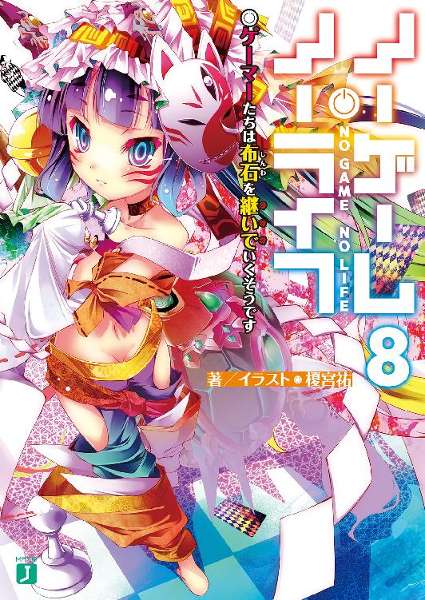
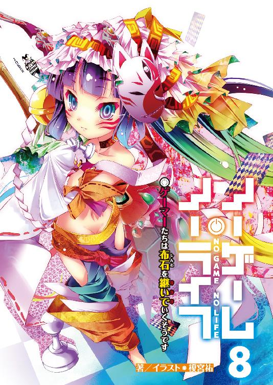
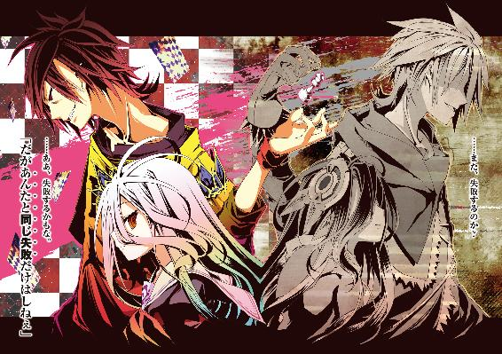
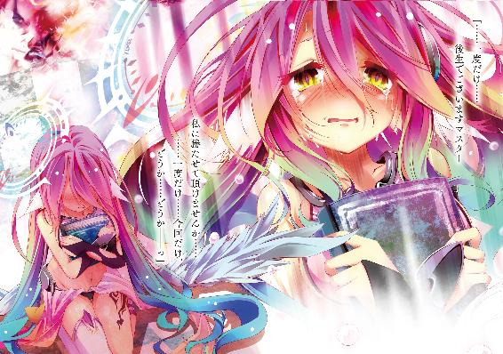
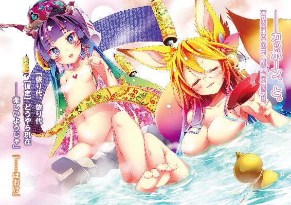
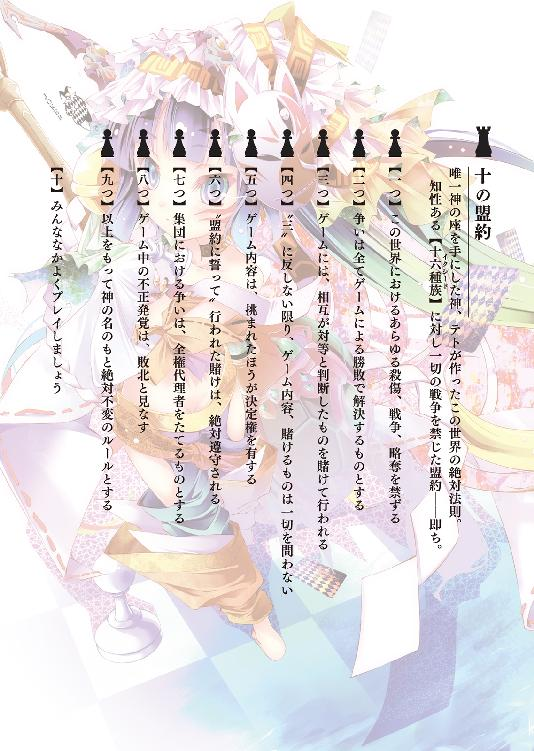
ノーゲーム・ノーライフ 8
ゲーマーたちは布石を継いでいくそうです
榎宮祐
本作品の全部または一部を無断で複製、転載、配信、送信したり、ホームページ上に転載することを禁止します。また、本作品の内容を無断で改変、改ざん等を行うことも禁止します。
本作品購入時にご承諾いただいた規約により、有償・無償にかかわらず本作品を第三者に譲渡することはできません。
本作品を示すサムネイルなどのイメージ画像は、再ダウンロード時に予告なく変更される場合があります。
本作品は縦書きでレイアウトされています。
また、ご覧になるリーディングシステムにより、表示の差が認められることがあります。
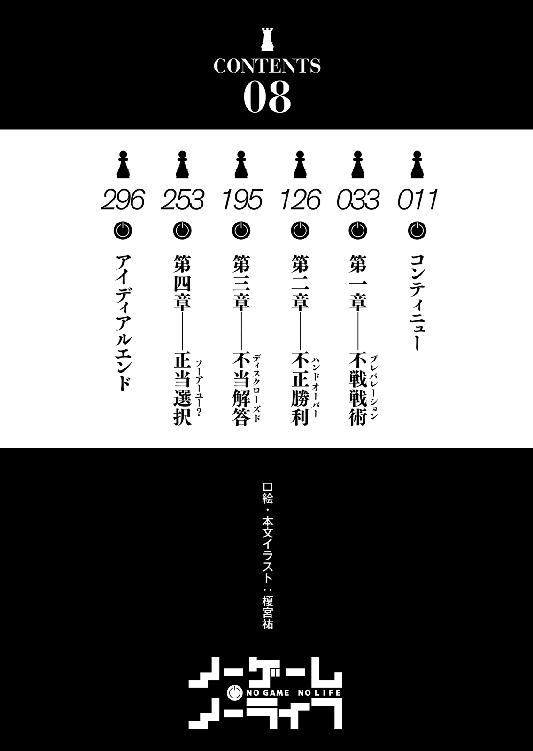
コンティニュー
──世界の為に、死ななければならないとしたら。
果たして自分はどうするだろうか？
そんな選択を迫られた一人の少女がいた。
滅びる世界を救うには、少女が死ななければならない。
神にそう告げられた少女は苦悩し、葛藤し、涙を流し......そして選んだ。
世界を、この大切な人々が住まう地を──愛しい人を救いたい、と。
悲壮な覚悟を胸に、唇を震わせ、おぼつかない足取りで、神の前に歩み出て。
彼女は自分が死ぬことを選んだ、だが。
──『彼女の代わりに、僕が死のう』
一人の男が少女を制して、神の前に歩み出た。
それは彼女が命と引き替えにしてでも救うことを選んだ、大切な人々の中の一人。
少女が愛し、またその少女を愛した──最愛の彼に、神は問うた。
──『死ぬのが怖くないのかい？』と。
だが彼は、最愛の少女を死なせるくらいならば、と笑顔で答えた。
──『死ぬより、怖いことがある』と。
かくて万雷の喝采を浴びて、男は死んだ。そうして、かの世界は救われた。
残された少女は涙を一つ、救われた世界で男の分まで生きてゆこう、と。
そんな使い古された台詞を吐いて、さもいい話であるかのように物語は終わった。
だが──そんな終わりに、二人の兄妹は白けた眼差しを向ける。
スタッフロールが流れるゲーム画面を眺めて、二人はこう想った。
──『死ぬより、怖いことがある』か、なるほど。
だが何故、そう言って少女の代わりに死んだ男に。
どうして誰も......こう言ってやらなかったのだろう。
──『死ぬより怖いことを、最愛の少女に強いるのか』と。
なるほど、『自己犠牲』というやつである。
何とも響きの宜しい、美しい言葉で──安いお涙頂戴のテンプレだ、と。
黒目黒髪の少年は、その歪な性格を表すような歪んだ笑みで。
赤目白髪の少女は、不機嫌そうに顔をしかめて、共に想った。
一人の主人公の死で、世界は救われたそうだ。
幾億の犠牲が、一つの犠牲で済み、可愛い少女も死ななかった。
実に素晴らしい。圧倒的コストパフォーマンス。何とも大層な偉業だッ!!
さて......では。
遺された少女は、それをどう想ったのだろう？
死ぬより怖いことだ、と男が自ら断じたこと──すなわち。
最愛の人を犠牲にしてまで生きる恐怖を少女に押しつけて。
......死に逃げかましやがった、あの男を。
そんな男を命を賭して救いたいと願っていた少女は、どんな想いを得たのだろう？
そう考えた兄妹は互いを見やって、同じ感想に至った。
──この卑怯者め、と。
なるほど、『自己犠牲』とは、物も言いようである。
〝ただのエゴ〟も、そう言い換えれば誰からも文句は上がるまい。
何しろ文句を言おうにも......言うべき相手は、もう何処にもいないのだから。
選ぶべきは『どちらが死ぬか』ではなかったはずだ、と兄妹は思った。
──『共に死ぬ』か。
──『共に生きる』か。
この二択だったはずだ。
所詮は〝ただのエゴ〟だ。徹するなら徹底して貫き通すべきだろう。
そして『共に生きる』ことを選べば、世界が滅ぶというのなら──
──そんな世界、滅ぶに任せればいいのだ。
無責任だと思うだろうか？
だが、あえて反論しよう。
それはいったい誰の、何の責任なのか、と。
本来滅びていた世界が、二人の愛と勇気と諸々で延命した──結構である。
だが他人の厚意を当然と考えるなぞ、人として如何なものか？
そもそも責任というなら──そんな世界にした者の責任ではないか!?
......では、こう考えてはどうだろう。
元より滅びるはずだった世界だ、別に滅びても予定通りでは？ と！
元より世界なぞいつか滅ぶのだ、今滅びて不都合もあるまい？ と!!
ならば最後の一瞬まで、二人で笑って、地の果てまで逃げ続けたって良いのでは？
それを〝エゴ〟だという文句は──却下するので悪しからず。
文句を言おうにも......言うものが世界ごとなくなるのだからして!!
......だが、それでも──と。
寝息を立て始めた妹を横たえ、黒髪の少年は思った。
──世界の為に、死ななければならないとしたら。
果たして、自分はどうするだろうか......？
自分か妹か、どちらかが死ぬ？ ──論外と言わざるを得ない。
共に死ぬ？ ──いくらかマシだが、ご遠慮願いたい。
では、共に生きる？ ......それが、最も望ましい選択だろう。
──だが、それでも。
仮に『世界なぞ知るか滅べバーカバーカ!!』と言い放ち、逃げたところで。
きっと......〝笑ってはくれない〟だろう、そんな妹の髪を撫でながら、想う。
二人をも──〝世界ごと全てを救う〟には、どうするべきだったか、と。
たった一つの犠牲もなく、全てを得る......そんな方法は──。
幼き日の少年は、妹の寝顔を眺めて、自嘲気味に苦笑した。
そんなものは──〝この世界〟には、ないのかも知れない、と。
■■■
──ゲーム開始から三八日。
天に浮かぶ螺旋の大地──それは神霊種が構築した『双六盤』。
元より常軌を逸した理による存在である──だが、現在。
二九六マス目上では──更に理を超越した現象が蠢いていた。
「うふ、うふふ～......ソ～ラ～？」
蝋燭が仄暗く照らす小さな洞窟の中。
そこに響くのは、三人の声──
「もちろんコレも予定通りなんですのよね～ね～そうだと言ってくださいな♪」
「ふ、お望みなら言おう──こんな予定組むボケがいてたまるかッ!!」
「......にぃ......これ、ターン制じゃない......し、指示出さない、と......っ」
サイコロ『二個』で三・六歳になった、赤毛の幼女──ステフの乾いた笑い。
サイコロ『一個』ずつで一・八歳と一・一歳になった──赤子同然の空と白の悲鳴。
そして──世界崩壊を告げるが如き衝撃と轟音の連続だった。
「しかもＲＴＳと来たよ！ トチ狂ってんのかアホじゃねぇのかぁあ!!」
叫んで、空は眼を閉じて熟考する。
──これはいったいなんの冗談だ、と。
「......落ち着け。まず、状況把握しなきゃ何も始まらねぇ......っ！」
気を抜けば凍り付きそうな思考で、空は言葉を絞り出す。
ジブリールの【課題】──そのイメージを反映したそれは、
──【課題対象者以外の提示ゲームに、二人以上で直ちに盟約に誓い応じ勝利せよ】
盟約にそう誓わされ、始めさせられた、これは、
かつての『大戦』を模した──〝ゲーム〟なのだ、と。
まずは置かれた状況を、布かれたルールを把握しなければ、と空は周囲を見回す。
──剥き出しの岩盤に囲まれた、狭く暗い空間。
中央に据えられた机には、一枚の『地図』が広げられていた。
だが、古びて色褪せたボロい『地図』は白紙──訂正、黒く塗り潰されている。
肝心の〝地形情報〟は、ほぼ描かれていない。
その代わり、黒塗りされた羊皮紙のようなその『地図』上には、まるでコンピューターゲームのＵＩの如く、刻一刻と......ゲーム情報が映し出されていた。
──『Ｂ．Ｔ．１８４年７月１日 ０３：４５』
おそらく、盟約発効前と思われる時代表記。
三角形で示される『ユニット』、凸形で示される『都市』など......それらの情報から、自分達のいるこの小さな洞窟が、『地図』中央に映る『首都』らしいと分かる。
首都周辺と、『斥候』が偵察した部分以外、マップには映らない仕様のようだ。
そして机の横には、大量の紙とペン。
少し離れた所に、これまたボロい木製の『投書箱』があった。
どうやらこの紙に『指令』を書いて投函すれば、『ユニット』を動かせるらしい。
外から絶え間なく襲い来る衝撃が気になったのか、ステフが立ち上がり言った。
「わ、私......ちょっと外を見てきますわね!?」
「まぁ待て！ ......武器持たせたユニット、追加で斥候に出してみよう」
と空は筆を滑らせ、紙に『指令』を書き込んだ。
──『地図』に表示される時間は〝体感一秒毎に八時間ずつ〟経過している。
この洞窟が『首都』──〝プレイヤースペース〟なら、外──つまり〝ゲーム内〟に行けるかも怪しいものだが、仮に出られたとして何に出くわすかも分からない。
指で『地図』上のユニットに触れてみると、ユニット情報が表示された。
年齢、性別等々──〝戦闘力〟などの情報がないのが不親切極まるが。
ともあれ表示された『ＩＤ』を記述して、投函する。
すると斧を抱えたユニットが一秒八時間──
二八八〇〇倍速という視認さえ出来ない速度で出口を抜け、フィールドに立つ。
「......にぃ、斥候に武器、持たせる、と......機動力、落ちる......無駄じゃ......？」
「ＨＡＨＡＨＡ妹よ、そこが兄の知恵よ」
妹の指摘に、空は「やれやれ」と首を振り、
「他種族と遭遇するかも知れんだろ。生存率を高めないと常時情報が得られ──」
──だが、その直後。
気候が変わり、洞窟内でも感じられる風がひゅおっと吹いた瞬間、数秒前にフィールドに出たばかりのユニットが、まるで雪でも溶けるかのようにマップ上から消滅した。
「............なに、今の」
机の『地図』に触れ、表示を確認すると──『霊骸風』と書かれていた。
「......良かったな。外に出なくて」
と顔面蒼白で凍り付いているステフに、空は──っていうか。
「おぉおおおい!? なっんだそのマグマタイルも真っ青な即死フィールドッ!?」
叫んだ空は、〝結論〟を出す。
いや結論など、あの無機質な眼──まるで自分達のことなど知りもしないかのように語るジブリールが、最初から告げていたのだ。
そんな、ただ認めたくなかっただけの事実を、受け入れる。
──まったく冗談ではないらしい、と。
歯噛みして『地図』上の『斥候』の一つに触れ──ピンチアウトする。
するとユニットの視界が、洞窟内の宙空に、スクリーンのように投影された。
ユニットの視界──すなわち〝洞窟の外〟の光景......その惨状に。
一同が息を呑む中、空は掠れた声で、無理に笑ってみせた。
「......はは、これが『大戦』？ おいおい、嘘も大概にしろよジブリール」
それは断じて──『戦争』などではない。
どんな地球最終戦争後を描いた創作も、これを前にすれば楽園だ。
空達の語彙から、あえてそれを表すのに、的確な単語を選ぶなら。
それはただの──『地獄』でしかなかった。
......なるほど、と思う。
これは、かつての『大戦』を、再現したゲーム。
いわゆる〝戦略シミュレーションゲーム〟だそうだ。
ジブリールの【課題】を受け、二九六マス上にはもう一つの世界が生み出された。
空間が無限拡張したのか、あるいは圧縮されたのか、詳しい原理は知りようもないが、惑星丸ごと一つを一〇キロメートル四方の内に複製したらしいその光景は──
──灰に閉ざされ、星を包む戦火に灼かれた、紅い天蓋。
今にも落ちてきそうな滅びの空からは、津々と蒼い『霊骸』が降り注いでいる。
ほんの一薙ぎで人類種が即死した風は、『霊骸』と塵と灰が混ざったもの。
それは溶けない雪のように『黒灰』と化して、見渡す限りの大地を覆い尽くしている。
斯くも墓所のごとき有様の荒野を、尚も荒々しく踏み荒らす衝撃と閃光がある。
それは先程から絶え間なく、この小さな洞窟を揺るがしている轟音の正体。
すなわち、盟約で武力を禁じられる以前の、十六種族の交戦の光だ。
光と音が閃く都度、海と大地とが万華鏡のように変じていく──
......この無間の天変地異が『大戦』だと？ ご冗談。
「人類種がどうやって生き延びんだよ、こんなインフェルノ......ッ!!」
叫んでみるが、わかっている......ジブリールが嘘をつく理由もない、と。
ならば、これが『大戦』──かつて人類種が生き延びた時代。
あまつさえ、ジブリールの予想では〝人類種が終わらせさえした〟という──歴史。
「ありえねぇだろ！ 斧持った大人が、風吹いただけで蒸発!? じゃあ──」
──空の叫びに合わせるように、再度、天が閃いた。
僅かに映される『地図』の地形が変わって。
──『斥候』も巻き込まれたのか投影されていた映像が途絶えて暗転した。
「戦略ゲーじゃねぇじゃんッ!! 戦略もクソも──戦えねぇじゃねぇかオイ!?」
叫んでみるが、わかっている......それも当然だろう、と。
盟約に縛られていない十六種族が、どれ程強いか──具体的には知らない。
だが五％の力で海を割り、水爆の直撃に無傷で耐えるジブリールに、たかが何億人かの人類種が群れたところで、かすり傷さえ負わせられるわけがないのは、自明の理である。
「......にぃ、そ、それでも......デススタック組めば......一回攻撃、は......凌げ──」
「空間転移する連中に!? 地殻変動級の範囲攻撃する奴らに!?」
そして、再度衝撃が駆け──空は『地図』を指す。
「ま～た地形変わったぞ！ 一回攻撃凌ぐ？ 流れ弾で『首都』ごと全滅だよッ!!」
空は思う──ジブリール曰く、これは『シヴィ』だという。
なるほどオーライ。ではこれを『シヴィ』で考えてみよう──
──自文明は『太古』縛り、他種族は『現代』も鼻で笑う超性能ユニット。
核攻撃で施設破壊、地形破壊まで出来るのに、ペナルティなし。連射可能。
難易度天帝、蛮族鬼沸き、そしてその蛮族にすら、こっちは手も足も出ない。
世界遺産などのボーナス建造物は生産不可能。
──というか、通常施設すらまともに建てられはしないだろう。
何しろ全文明が『宣戦布告済みスタート』しているのだ。
下手に都市を建設して他文明と国境が接すれば、大量の敵ユニットが雪崩れ込む。
戦うことなど自殺行為、その上で、勝利条件は──『敵首都陥落』のみ。
こちらは首都を特定されればほぼ確実に、即敗北で、相手は天翼種。
挙げ句の果てが──『初見プレイ縛り』と来た。
......いかがだろう。これだけで、もう空前絶後のふざけた難易度である。
一部マゾゲーマー以外は、メーカーに怒濤のクレームを入れるだろう代物だ。
だがそれらすら、大した問題ではない。
最低最悪のルール、トドメが──以下。
──『負けたら自殺』、である。
そう、仮にこの驚天動地のムリゲ─を乗り越え、見事勝利したところで──
得られるのは『ジブリールの死』......以上である。
そこにサイコロが幾らかおまけでついて来ようが──それが何だというのか。
かくて常軌を逸した難易度のゲーム、その状況を、空は精査し終え、
自問して──『勝てるか？』
自答する──『勝てるわけがない』
「どっちが死ぬかってだけのゲーム、『勝ち』なんかないだろが──ッ!!」
──勝ったところで、何になる、と。
かつてなく怒り色濃い顔で叫ぶ空に、ステフはおずおずと、
「で、でしたら！ き、『棄権』すればいいんじゃないですの!?」
──そう、言うに事欠いて〝そのルール〟を、提案する。
「サ、サイコロを失っても死にはしないんですのよね!? 誰かがゴール出来ればそれでいいって、ソラも言ってたじゃないですの!! でしたらジブリールにゴールさせれば──」
そう──『棄権』可、というルールだ。
全てのサイコロを相手に譲渡──及び、空達の側は『神霊種に勝つ方法』を開示する。
その場合のみ、命のやり取りが生じない。
ステフの提案に、空は内心──ああ、そうだな、と答える。
質量存在時間──サイコロを全て失っても、肉体を失い霊体化するだけだ。
故にジブリールに『勝ってもよろしいのですね』と問われても、否定しなかった。
そして事実、ジブリールなら......おそらくゴールは出来るだろう。
──だが、
「自分の命を盾に脅迫して、『 』に敗北を認めろ......って？」
「......冗談は......寝て言う、の......しかも......笑えない、冗談......」
しかも、それでも一人は死ぬのだ──最善でも。
椅子に座った空は、手を組み俯く。
その異様な雰囲気に、白も、いやステフさえ言葉を切って。
ただ空の答えを待つように、沈黙し、息を呑んで、待った──
────、
そして数秒、いや数分程度だっただろうか。
あるいは数時間にさえ感じられた長考を終えて、空は顔を上げた。
そこに貼り付く悪意に歪んだ獰猛な笑みに、ステフが悲鳴を呑む。
「単純な話だったな──〝勝ちたきゃジブリールを殺せ〟ってこった」
と空は告げ、思う──どうやら本当に、冗談ではないらしい。
ジブリールは、ブラフでも嘘でもなく本気で、そんな要求をしているらしい。
しかも、
「──ナメられたモンだ......勝てなさそうなら棄権してどうぞ、ってか」
ご丁寧に、そんな〝保険〟までわざわざご用意してくだすって頂いたわけである。
「上等じゃねぇか......白──やるぞ」
そう言って、どす黒い眼で緩慢に立ち上がった空の真意を探る白は、
「アイツの思い通りになんざ、させてやるかよ」
「........................ん、わかった......」
──そこに潜む意図を汲み取ったのか、重々しく、決然として頷いた。
「人類がどう大戦を生き残ったのか──だっけか？」
呟いて、空と白は、揃って椅子に座り『地図』と向き合って、ペンを握る。
「お望み通りに、たっぷりお見せしてやろうじゃねぇか......」
「ほ、本当にやるんですの──というか勝てるんですのッ!?」
と、ステフだけはジブリールを案じ──いや。
そもそも勝機の有無を問うその言葉に、空と白は昏い笑みで答える。
「──〝楽勝〟だ。こんなヌルゲー、目をつむってても勝てる」
「......ちょ～、余裕......」
ジブリールがどんな意図で、こんなゲームを仕掛けたのかは知らない。
だが何であれ──そうまでして自分たちに勝たなければならないと考え。
それが叶わぬならば自分を殺せと、そう言うのであれば。
──取るべき手など。
もとより一つしかないのだ、と。
そう、空は昏く笑う......。
■■■
──同時刻、三○八マス目で。
虚空に投影されるそれらの映像を前に立ち尽くす、幼い獣。
残りのサイコロ二個──と普段より数段縮んだフェネック耳の少女は、
「なん、で......なんでみんな、こんなことしてやがん、ですッ！」
初瀬いづなは、その映像を見せつけるものに吼えた。
虚空を漂う墨壺に腰掛ける、冷たく無機質な、だが威圧的な存在感を放つもの。
──神霊種を見据え、問うように、責めるように、混乱まじりに続ける。
そもそも、これは神霊種相手の双六だったはずだろう、と無言を返す。
──なのに、
「なんでいづなたちが──誰を死なす、ってハナシぃなってん、ですッ!?」
その糾弾に、だが神霊種は答えない。否──答える必要もない、と。
彼女が映し出しているものが、その答えだと云うように。
神霊種が映しているのは──当然の帰結。
負ければどちらかが犠牲になるゲームをする空達とジブリール。
混乱に乗じ東部連合を奪いにかかっている、クラミーとフィール。
それさえ利用し、獣人種の犠牲を足がかりに更なる犠牲を強いるプラム。
──ゲームの内外を問わず、誰かの犠牲無しには、何も終わらない状況。
それを組み上げたのは、いづなが糾弾する神霊種ではない、と。
自分達が、自ら構築した状況──そのものだ、と無言の内に解答する。
【奇問なり。汝。共犯者よ。共謀者よ。何故と問うか】
そこに責める色はなく、まして失望や絶望など望むべくもない。
【当該神霊種は勝者に対し、あらゆる〝全ての要求〟履行義務を有す】
──そも、失う望みすら知らぬ体で、淡々と、神は語る。
【神霊種が至権を簒奪せんと企てたる愚願──斯くの如き結末に至るは必定】
「────」
神の全てを奪おうとした──〝始めたのはそちらだろう〟、と。
言外にそう責められているような気がして、いづなは息を呑む。
......ならば、この『双六』は、ゴールしたとしても。
この神霊種は──？
だが、そう思考するいづなになど、もとより興味などないように。
冷たさすらも感じさせない無温の眼が見やる。
──誰もが利を求めれば、ただ、こうなる。
何かを得るには、誰かから奪うしかないそれは、ただの道理である──と。
そう告げるような瞳の色に、いづなは、何も言えずに俯き......
■■■
──同じく同時刻、ゲーム外にて。
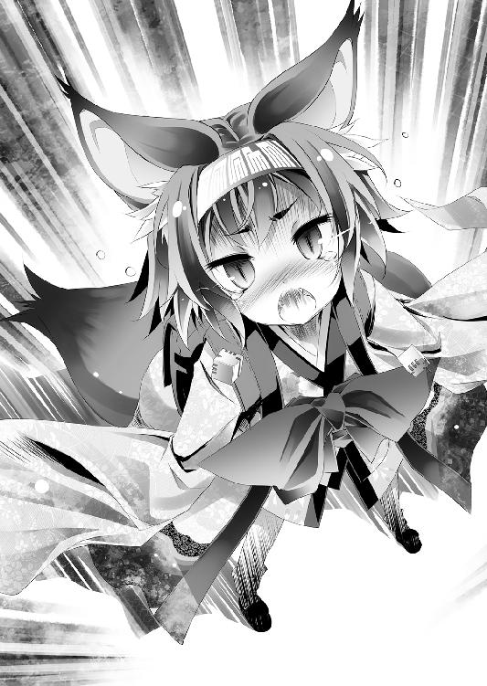
東部連合、首都・巫雁島の一角──とある旅籠の窓から顔を覗かせて。
月光を遮る螺旋の大地、神霊種が創った双六盤を見上げる者の姿があった。
ゲームの内外を問わず、混乱、焦燥、恐怖や策謀に喘ぎ乱れる者達を他所に。
「んーよくわかんないけど、森精種の船団来たわよ～。いい加減退屈なんだけど～」
と、緊張感とはまるで無縁の、気が抜ける口調で告げた声に。
その人影は、いくつもの書類の中から──〝一枚の紙〟を取り出し、頷いた。
本当に、状況が揃っているらしい、と確信して。
──対神霊種ゲーム開始から、三八日が経過している。
誰もが裏切り、欺き、奪い──殺し合うことになる。
──誰もが利を求めれば、ただ、そうなる。
何かを得るには、誰かから奪うしかないそれは、ただの道理。
転がり落ちるが如く、普通に考えればそうなる自明のことであるならば。
──普通に考えなければいい、と。
そう告げて、その紙を託した者たちの意図に。
──一言一句違わず、そこに書かれた通りに動いている現状に。
安堵と、僅かな寒気を覚え、重いリュックを背負った人影は、旅籠を出る。
「ちょっと！ またリュックの中なの!? あたしを誰だと思ってるの、ねぇッ!!」
水で満たされた──重過ぎるリュックの中身が、騒がしく自己主張する中。
その紙を託した者が、自分にした問いを回想する。
──世界の為に、死ななければならないとしたら。
果たして自分はどうするだろうか？
──『それで世界が救われるなら死ぬしかない』
そう答えた自分に、だが──彼らは苦笑を一つ、返した。
──『なら、世界は救われないから無駄死にだ』
そうして、彼らは続けた。
──『犠牲の数が一か、二か、千か億かなんて、些細な違いだ』と。
多数の犠牲を避けるために、少数の犠牲を良しとするならば。
いつか必ず、犠牲にした数が救った数を超える──と。
自己犠牲や最小犠牲では、世界の何も救われやしない。
ただ〝延命〟するだけ──そして世界は変わることなく続いていく。
次の犠牲を、一人また一人と探して。
終には滅びるその日まで、何一つ変わらずに──
もし──世界を救う、などと偉そうにほざくのなら。
たった一つの犠牲すら許さないと、拒んでみせてからにしろ、と。
彼らは言った──この世界はゲームなのだ、と。
たった一つでも、犠牲を認めてしまえば、際限なく続いていく。
そんな馬鹿げた『定石』は──この世界では、もう必然でも絶対でもない。
だから──ここで終止符を打つ......と。
故に、その証明を託された人影は。
誰の記憶にもない──重い重い、その一手を、
「ねえ！ もっと丁寧に運んでくれないかしらっ!? ダーリンでもない人があたしを雑に扱うとか、海を敵に廻したいのイイ度胸ね!? ねぇ、ちょっと聞いてる？ ねぇ!?」
......物理的にも重い、リュック越しに苦情を訴えるその切り札を背負って。
鎮海探題府へ続く、果てしなく長い坂道を。
一歩一歩、よたよたと登り始めた──
第一章──不戦戦術
──『大戦』。神々とその眷属たちが、唯一神の座を懸けて争った時代。
滅び逝く星と、儚く生きるものたちを嘲笑うかのように──
天地を引き裂いてなお足らぬとばかりに世界を蹂躙し尽くした暗黒の歴史。
それを模したゲームに挑む空と白は、猛然と『指令』を書き続ける。
〝生きる〟──たったそれだけの。
だが至難を極める偉業を成し遂げるべく文字を綴り続けるその手を、ふと止めて、
「──!? 白、いいこと思いついたぞッ!!」
空が、その脳裏に閃いた名案を吼えた。
「指令書に『隣の奥さん寝取れ』って書いたら面白そうじゃねッ!?」
────カッ、と。
瞬いた閃光にまた一つ......『地図』から山が消失した。
それは数秒ほど前まで、空達の『首都』があった場所。
事前に攻撃を読んで『開拓者』に〝首都移転〟を命じていなければ、山ごと消し飛ばされていただろう破壊の光を──だが特に意に介す様子もなく、白は親指を立てて答える。
「......にぃ、ぐっじょぶ......でも、具体的、指示......しない、と......」
「あ～......え、隣の奥さん寝取るって、どうすりゃ出来んだ──っ!?」
寝取るどころか、脳内以外に彼女が存在したことさえない身である。
ともすれば〝生きる〟より至難な難題、と苦悩する空に、
「さっきから何をしてるかと思ったら──何を悠長にやってるんですのよっ!?」
二人が書いた『指令書』を『投書箱』へ投函すべく往復しているステフが叫んだ。
「い、一瞬遅かったら、い、今ので死......ま、マジメにやって頂けませんの!?」
数秒遅ければ『首都陥落』していた、と青ざめるその様子に、
──まあ大丈夫だろ、と空は内心、適当に応じる。
戦略ゲーのお決まりとして──首都は『制圧』されて、初めて『陥落』と見なされる。
ましてジブリールの意図を思えば、直撃を受けても空達が死ぬことは、まずない。
この空間──プレイヤーは、外界と断絶しているはずだからだ。
何せ、今の空達は二歳に満たない子供の身体だ。空は一・八歳。白は一・一歳。ステフでも三・六歳である。机が高すぎて、椅子に立たなければ『指令書』すら書けない。
最年長のステフが必死で背伸びしてようやく『投書箱』に投函出来る状況だ。
そんな身体で、こんな地獄の真っ只中──断絶してなきゃとっくに死んでいる。
まあ都市が全てなくなれば『人類種』滅亡でどのみち〝詰む〟が──ともあれ、
「ん～。なあ、隣の奥さんを自分に惚れさせるならどうすりゃいいと思う？」
と何気なくステフに問いかけたところ、
「あら～私に訊いてるんですの？ そうですわね、経験談で宜しければ──。ペテンでハメて無理矢理惚れさせる、というのはどうですの？」
「──な......っ!?」
とびっきりの笑顔で告げられた空は絶句し、続いて──
「おまえ冴えてるなぁ!? そーだよ、騙して、ハメちまえばいいんだ!!」
「渾身の皮肉ですのよ！ 少しはリアクションくらいないんですのぉ!?」
空の心からの賛辞に、ステフが心からの懇願で答える。
そして──さらっ、と空が躊躇ゼロで書き付けた『指令書』二枚にげんなりしつつ、
「こんな悪辣非道を瞬時に思いつく頭、マジメに使う気ありませんの？」
「......マジメに、か。たとえば、何にだ？」
「は、はい......？」
面食らいながら『指令書』を投函するステフに構わず、空は真剣な顔で続ける。
「そうだな......マジメに頭使って『外交』してみるか」
──外交。契約による、信頼関係の締結。
交渉材料は決して多くないが、確かに、ないわけでもない。
異世界の知識、プレイヤー故の情報、食料......等々。
それらを対価に、他勢力と何かの協力や貿易の約束でも取り付けるか──？
「......そんな約束が守られるって、アレ見ても信じられるなら試そうか？」
アレ......すなわち、虚空に投影される『斥候』の視界──外の光景。
天地を砕く暴力の嵐──その惨劇を見れば、ステフも確信せざるを得ないだろう。
〝殺して奪えばいい〟世界で、契約など......何の意味もない、と。
「ま～、ならマジメに頭使って『戦闘』でもするか？」
──戦闘。武力による、生存領域の確保。
勝算は決して高くはないが、確かに、ないわけでもない。
無論、まともにやり合えば必敗だが......たとえば獣人種や森精種、海棲種、吸血種。
空達には、【十六種族】の性質についてある程度以上の知識がある。
それらを元に、ユニットを操り、戦術的に包囲し、奇襲をかけて。
敵の戦術的優位を奪う局地戦で、地の利を活かせば......まあ勝ち目はある。
敵ユニットの一つ二つは撃破可能だし、よほど上手くやれば──
「一種族に致命傷さえ与えられるかもな──んで？ それが何になるんだ？」
こちらを敵視され、復讐にでも駆られては、徒に危険が増すだけだ。
つまり『外交』も『戦闘』も意味はない、いや、それどころか。
下手に動いて注目を集め、こちらの『首都』を特定されでもすれば......
「気まぐれ一つで滅ぼされてジ・エンドだ。文字通りの意味でな」
そもそも、と空は苦笑する。
「普通に考えてこれ──『チェックメイトからのスタート』だぞ？」
──過去、人類種がこの『大戦』を、実際にどうやって生き延びたのか。
空がその真実を知る由など当然無いが、
「この環境で人類が生き延びる方法なんざ、そう多くはない」
そして、その少ない選択肢の中で、最も現実的なのは一つだけ。
「──徹底的に逃げ隠れする......以上だ」
警戒させず、認知さえされず──気にも留められない存在として振る舞う。
小動物のように、虫ケラのように、木の葉のように存在感を消して。
何処までも逃げ続けることが最尤手だ──が。
「それも......ジブリールが俺らを認識してる時点で、不可能、だろ？」
そう、警戒されれば『詰む』のに、警戒された状況でスタートなのだ。
そんな中では、下手にユニットを動かすことさえ、出来やしない。
ユニットが天翼種に見つかり、『首都』を特定されれば──終わりだ。
「............」
青ざめて喉を鳴らすステフに苦笑して、空は頷いた。
マジメに、何をするか？
現状──〝何も出来ない〟のだ。
精々、斥候を出して敵の行動を予測──流れ弾を喰らわないように首都を移転する程度。
後は食料を確保して──ジブリールに『手紙』を書いて煽るくらいである。
「戦えねぇ！ 外出りゃユニット消費＆ゲームオーバー!! 外交すらできねぇクソゲーをゲーマーの矜持に賭けて楽しもうという努力を買っては貰えんかねん～ンッ!?」
「努力するところが違いますわよね、懸かってるの矜持じゃなく命ですのよ!?」
もっともな叫びだが、そんなことは空も重々承知している。
だからこそ、〝実験してみている〟のだから。
そう、たとえば、
「......にぃ......『寝取り』......出来た......みた、い？」
〝これ〟とかな──と。
白の声に、空は笑みを浮かべ、机──『地図』に飛び乗って、画面を拡大させる。
そこには二つのユニットが、〝実験成功〟を告げる形で表示されていた──が、
「う～わぁ......ホントにやりやがった......女って怖ぇ～」
「......ね......にぃ、女、って......こわい、よねぇ......？」
「やらせておいてドン引きすることに、ちょっとは違和感ないんですの!?」
旦那に隠れて逢い引きを繰り返す、隣の奥さんと寝取り間男二人。
その様子にドン引きする空、何やら洗脳しにかかっている白にステフは叫ぶ。
だが──
「やらせた!? ハンッ！ 俺の『指令書』の内容を忘れたかッ!?」
空がステフに投函させた、二枚の『指令書』。
そこに空が書いたのは──こうだ。
──一枚目。《隣の奥さん》を指定
本日より二〇日間、毎二二〇〇時、猛烈な空腹を感じる
座標《食料庫》へ移動、内密に食料を横領せよ
──二枚目。《寝取り間男》を指定
一五日後二二〇一時、座標《食料庫》にて《隣の奥さん》と遭遇
横領行為を不問とする対価として、肉体関係を求めよ
つまり──ッ!! と空は声高に訴える。
「横領を命じたのは俺！ それをネタに一度の関係を迫らせたのも俺！」
確かに、ユニット《隣の奥さん》は、空によって横領させられた。
確かに、ユニット《寝取り間男》もそれをネタに脅迫させられた。
「だが！ Ｂｕｔ！ しかぁあっし──ッ!!」
ビシ──っと、空が指さす『地図』に映し出されるのは、
指定した期間を過ぎても──〝らんでぶ～？〟を続ける二人──
「こいつらがその関係を続けてんのは──〝こいつら自身の判断〟だろが！」
そう、《隣の奥さん》には《寝取り間男》に惚れろなどと指示していない。
まして《寝取り間男》にも、二度以上の関係を求めろとは指示していない。
そしてそもそもの話、と、空は畳みかける──すなわち！
「《隣の奥さん》が《寝取り間男》の脅迫に、従うことすら指示してねぇッ!!」
かくして証明されるは──きっかけを与えしは、空なれど。
こやつらの不貞は、キッパリこやつら自身の責任たる自明の理である──!!
「............いえ......いえ、その理屈も何かがおかし──」
「ッカーやっぱ背徳感ですか!? 夫を裏切るのがそんなにキモティーですか!?」
「いえ、あの！ 浮気させておいて、したらキレるのもやっぱり違いますわ!?」
──だがまあ、そう騒ぐステフを他所に。
空と白は満足げな笑みを浮かべ、この『実験結果』に頷き合っていた。
どうやらこのゲーム、想定していた以上に──ファジーらしい。
浮気するか続けるか〝ユニットが自己判断する〟程度には──ならば、
「まあいい、次だ！ 時間との勝負だから急いで投函しろ！」
と空は芝居染みた悲嘆を止め、予め書いておいた『指令書』を二枚、手渡す。
それを急かされて投函したステフは、『地図』を注視する二人に半眼で問う。
「......今度は、どんな悪辣な事を命じたんですの？」
「悪辣とは心外の極みだな？ 正当な『外交』、『貿易交渉』の確認と実験さ」
具体的には──
「《隣の奥さん》に、横領の口止め料を強請られてると《旦那》に言わせ、口止め料を《寝取り間男》に渡す。受け取った《寝取り間男》は第三都市へ高飛び──って指示だ」
「それは外交じゃなく強請りっていうんですのよッ!?」
そう叫ぶステフに、空は思う──「そうだな」と。
要約してしまえば──
──『おまえの宝石盗んだ。返して欲しけりゃ金払え』──以上である。
これが強請りでなきゃ何だ、と問われれば空は当然、強請りだと答える。
だから、と。
──まんまと《隣の旦那》から口止め料をせしめて。
第三都市へ移動し始めた《寝取り間男》を見て、空は笑み深く、答えた。
「外交って、オブラート剥がせば、よーするに〝強請り集り〟だろ？」
「......にぃ、また......ゲスいこと、考えてる顔......カッコいい......っ」
きっぱり断じた空に、白の尊敬の眼差し、ステフの生ゴミを見る眼が注がれるが。
それを意に介する様子もなく、空はただ笑みを深めた。
指定していないユニットも騙せる。
──だったら、他種族とだって、『外交』出来るよなぁ、と。
そんな〝突破口〟を見つけた空を半眼で見やって、ステフが呟く。
「き、鬼畜の所業ですわ......ああ、でもこれで隣のご夫婦に平和が戻るんですのね」
だが、その直後。
「......？ ......にぃ、失業者......出て、る......」
白の呟きに、空が怪訝な顔で『地図』に触れ──拡大表示させる。
すると......《隣の旦那》ユニットが、何やらスカンピンで路頭に迷っていた。
ついでに──
「......ソラ？ 《隣の奥さん》、《寝取り間男》と一緒じゃありませんの？」
──ふむ、と。
空は思慮深く、第三都市に移動したユニット達を見やる。
確かに、〝口止め料の具体的内容〟はあえて書かなかった。
指示外にいる《隣の旦那》から、どの程度獲れるかの確認も兼ねたのだが。
察するに、これは──
「......全財産を旦那から騙し取って──間男と高飛び......ですの？」
........................────
「──うしゃ！ ともあれ突破口は見えたぞ白！」
「......ん、これ......で、色々......動ける......ねっ」
「さらっと、ご自分達が招いた不幸の直視を拒みましたわね......」
何のことか皆目見当も付かぬ発言をするステフを捨て置いて。
空と白は猛然と、『指令書』に筆を奔らせ始めた。
......ぽつり、と確認するように、ステフが呟く。
「やっぱり......棄権は、しないんですの？」
「......ぇ......なん、で？」
「やっと楽しくなって来たとこだろ、忙しくなるぞ～？」
と空達は笑って答え、そして慌ただしく動き始めた──
■■■
一方──その広間は、ただ静寂だけに包まれていた。
そこは空達のいる洞窟と同じ──〝プレイヤースペース〟。
架空のアヴァント・ヘイム執務室の中央には、やはりボロい『投書箱』がある。
そして『地図』が広げられた机の前に座るジブリールの姿があった
ジブリールは十個のサイコロをその胸元に漂わせ、だが何をするでもなく。
ただ顔を伏せ待っていた。いや、祈っていた。
空と白が、マスター達が──『棄権』してくれますようにと。
「......負けたく、ない......」
今回だけは勝たせて貰う──たとえ、どんな手を使ってでも、と。
そう決然と宣言してみせたジブリールは、だが──
「負けたくない負けたくない負けたくないのでございます......マスターッ!!」
空も白も──いや、彼女を知る者なら誰もが絶句するであろう姿で。
ここまでずっと忙しなく書き続けた本──『日記』を抱いて。
背を、肩を、声を震わせて、懇願するように。
背中を丸めうずくまるようにして、うわごとのように呟いていた。
......こんなことなら。
ゲーム開始時、サイコロを十個に戻さなければよかったかもしれない、と。
あまりに不慣れな〝その感情〟を、どう扱えばいいかも分からずに。
ジブリールは震える指先で、『日記』に触れた。
──『記憶がなくなる度、三二〇五頁を読むこと』、と。
と天翼語で書かれた表紙に視線を落として思う。
......こんなことなら、と。
記憶がないままのほうがよかったかもしれない、と。
そんな後悔にも似た感情で──三二〇五頁。
この『双六』が始まって、幾度開いたかも分からない頁を、緩慢に開く。
そこにはジブリールが書き記した、無数のメモで埋め尽くされていた。
それはたとえば──
【初瀬いの】獣人種・男性・平常運転で見下して可・キモい
【プラム・ストーカー】吸血種・性別興味なし・蚊と見做してＯＫ
──といった、雑な走り書きから、
【ステファニー・ドーラ】人類種・赤毛の女性・ドラちゃんと呼称
空、白、両名の召使い。空に惚れているが本人は頑なに否認。
──と更に身長、スリーサイズ、エピソードまで書かれた細かいものまで。
おおよそジブリールが知る限りの人物の特徴、その他が記されていた。
だが、その中でも一際大きく書かれた項目。
吹き出しで囲い、二重線を引き──最重要情報とまで添えられて。
【空】黒髪の人類種 【白】白髪の人類種
共に異世界出身。比翼連理の兄妹──私の新たな主。
生まれて以来、ずっと探し続けてきた、〝答え〟......
そう震える筆跡で書かれた一文を、ジブリールは指先でなぞり、眼を伏せる。
それを書いた時の自分を。あの時の、自分の心境を思い出して──
ゲーム開始直後──三八日も前のことを。
すなわち──〝一手目〟。
まさしく最初に、サイコロを振ったその時のことを──......
■■■
────？
「......はて？ ここは何処でございましょう」
ふと頬を撫でた風に、ジブリールはきょとんと首を傾げて呟いた。
気がつけば、風で波のように揺れる草原に、独り佇んでいた。
胸元には白い立方体が九つ、周囲には螺旋を描いて渦巻く見慣れぬ大地があった。
ここが何処か、何故ここにいるのか──何も分からずジブリールは立ち上がった。
琥珀色の瞳に十字の模様を灯し、あたりを見渡す。
果たして、空間を超える視覚がとらえたのは、螺旋の大地を進む者らの姿。
「目障りな吸血種一匹、生意気に二足歩行する獣人種二匹......」
そして──、と眉根を寄せて呟く。
「......それ未満の人類種三匹、でございますか......はて？」
かくも下等な生物と共にいることに、ジブリールは首を傾げる。
──やはり、状況がわからないが。
「まあ、よくわかりませんが。誰かに訊けばよい話でございますね♪」
そう、至って常識的に行動するまでである。
まあ獣や虫けらに『迷ったので道を教えてください』などと。
メルヘンな真似をするのは、甚だ不愉快かつ不本意だったが......、
「そうさせた原因をキッチリ殺しましょう。私のせいではなさそうでございますし？」
要は、恥をかかせた奴が死ねば万事解決である、と。
一人納得し、ジブリールは翼を広げて、光輪の回転数を上げていく。
──空間転移。
空間を捻り座標間を結ぶ──無限速に等しい移動であるそれは。
だが、あくまで移動であり──
「────────へぴッ!?」
その間に、障害物があれば......こうなる。
マヌケな声とはかけ離れた衝突事故──無限速に等しい速さで虚空の〝なにか〟にぶつかったジブリールは、爆音さえ伴って中空にカエルのように張り付いた。
そしてそのまま......ズル、ズル......と。
剥がれ墜ちていくように、ついには地面に刺さって、
「......ふ、ふふ......この私を、空間断絶で囲う、と......フ、フフフ──」
巨大なたんこぶをこさえ、起き上がったジブリールは......笑っていた。
天翼種を以てして認識及ばず、気づけなかった程の力。
なるほど、この螺旋の大地も、空間転移さえも阻害する程の断絶も。
それが出来るもの──〝神霊種の仕業〟とあらば、納得出来る──が、
「──イイ度胸でございます──ねぇえっ!!」
それはそれとして──まあ、とりあえず死んでおけ、と。
気持ち程度の『天撃』を数発、そして空間破壊魔法等をぶち込み一通り騒いで。
............。
「......はぁ......はっ......今は、こ、このくらいで勘弁して......あげましょう......」
ようやく──どうやら何をしても無駄らしい、とジブリールは渋々認めた。
あの螺旋の大地を進む者たちの行く先に、神霊種がいるのだろう、と受け入れて。
とりあえず、殺すにしても今は我慢だ、と......不機嫌に、進み出した。
状況は依然不明、だが時間にして僅か数分。
空間の断絶を、謎の暗闇を挟んで四二回渡った先で──
──【四リットルの水が入った器をマグマに呑まれる前に作れ】
と、何とも偉そうな声が響くと同時。
眼前に噴水と、それぞれ五リットル、三リットルと書かれた二つの器。
そして──津波の如く正面から迫り来るマグマが、突如として出現した。
......まるで意味がわからなかった。
いや、何を言われているか、その意味は当然わかっていた。
異なる二つ容器を使って、四リットルの水を正確に計れ、という意味である。
だが、ただでさえ機嫌は最悪。そこへこんな幼稚な問題を突きつけて。
──まるでマグマが来る前に解けるなら解いてみろ、と聞こえたそれに。
「......何様のつもりで、ございましょう──ねっ？」
ジブリールはあえて──嘲笑って言われるままにして見せた。
すなわち──
噴水の水ごと大気中・地中の全水分を濃縮させ、マグマに叩きつける。
かくして──蒸気爆発から生じた、土砂降りの中。
ジブリールは魔法で勝手に作った『四リットルの器』に、雨が貯まるのを眺めた。
己の完璧過ぎる答えに、ジブリールはご満悦顔になり、
──【課題達成と見做す】
と、再度響いた偉そうな声と共に、胸元の立方体が一つ増えた。
それを訝しげに見やった──その直後。
「────────────────ッ!?」
ジブリールは膝から崩れ落ちてるように身を抱いて、
「......なに、が......起きているので......っ？」
身を震わせて、辛うじて、そう絞り出すように問うた。
──何が起きたか......それは明白だった。
先程までの疑問──ここが何処で、何故ここにいるかが、氷解した。
ここは神霊種の双六盤で、自分は双六に参加している。
その記憶を......一時的に失っていた。それだけだった。
だが、この表現しようのない、血の気が引くような寒気。
歯を打ち鳴らし、何もかもから逃げ出してしまいたい衝動。
──自分の身に〝何が起きている〟のか、
「......落ち、着いて......考えましょう......」
それがまるで分からず、錯乱しそうになる思考を、必死に説き伏せて。
ジブリールはルールを精査し、慎重に、冷静に考察し始めた。
まず何が起きたか、について──つまり、
──何故〝自分だけ記憶が消える〟のか。
01：七名には、己が『質量存在時間』を割合分割した十の『賽』が与えられる
質量存在時間──そう、質量が存在した時間である。
質量を持たない『魂』は、そこに含まれない。
それはゲームが開始した際の、空の煽りでジブリールも気づいていた。
マスター達は、ゲームから脱落しても活動出来るよう仕組んだのだ、と。
つまり『器』と『魂』を分けて──『器のみ』を賭け皿に乗せた──だが。
一つの仮説が、濃厚な可能性として浮かび上がる。
ジブリールは改めて──空間を超えるその視覚であたりを見回した。
ゲーム盤を進む者──
プラム、いの、いづな、ドラちゃん、そして──空と白......マスター達。
サイコロが減っても問題なく平然とした様子を見て──仮説は確信に変わる。
──自分だけは。
生物でなく、生命である天翼種だけは──
──『魂』と『器』に......明確な境界がない......と。
「──ああ......これが──」
そう呟いて、何が起きているかにも。
理解に至ったジブリールは、今にも手放しそうな意識を繋ぎ止めて。
歯を鳴らして震える手で──日記を取り出し、猛然と筆を奔らせはじめた。
ゲーム盤を進む、先ほど下等動物と認識した、マスターに関する記憶。
──何よりも、大事なはずの記憶。
それらは、たった一つ、サイコロが減っただけで失われた。
自分は──それに気づくことさえ、出来なかった......。
その事実に、六四〇七年の時を生きて、ジブリールはついに、
「......なるほど......これが──『恐怖』......でございますか......っ」
ようやく経験し、理解出来たその感情から、だが怯えるように、逃げ出すように。
己の見聞きしたその全てを残らず余さず、日記に書き留めんとした。
──記憶がなくなっても。
日記を読めば思い出せるはずだ、と──
■■■
そうして──架空のアヴァント・ヘイム執務室。
変わらぬ静寂の中、ジブリールが淡々と頁をめくる音だけが響く。
──なるほど、自分はサイコロの減衰で、記憶も失う。
それは『器』と『魂』の境界が明確でない魔法生命の性質故だ。
マスター達さえ、ルール制定時に見落とした穴だろう──いや。
それはマスター達──それどころか『生物』には知り得ない情報だった。
誰よりジブリール自身が、そのルールの問題に気づくべきだったのだ。
それより、とジブリールは更に頁をめくった。
ならば自分は──サイコロを全て失えばどうなるのか？
他の参加者は『魂』──霊体になるだろう。
ではジブリールは──？
めくった頁には、おそらく、とその仮説が書かれていた。
──『〝基幹術式〟だけが残り、再起動する』、と。
そう。それだけだ。
他の参加者と同じく──死にはしない。
魔法生命を構成する最小単位──質量がない『術式』だけは残るからだ。
ただその際に、全ての記憶が初期化されるだけだ。
それだけなら、日記にでも全てを書き記しておけば、問題はない。
たとえ術式再起動──〝生まれ直し〟たとしても。
それはやはり、自分なのだから。
いや、むしろそれは、『記憶喪失した自分は別人か？』という話に近い。
この日記に思いの丈を、記憶を、全てを書き留めておけば──
自分は全てのサイコロを失っても問題なく、マスター達を慕うだろう、と。
そう確信していた──
───していたのだが、
「ええ......あのお風呂で、マスターに何気なくサイコロを渡されるまでは......」
二手目──もう一度サイコロを振り、一つ減ったと同時に──
日記に書かれた全ての意味も、想いも、その価値さえも......分からなくなった。
──この自分が、下等な人類種如きを主と呼び慕うなど何かの間違いだ。
おそらく、その者がゲームで自分をハメ、都合の良い記憶を植え付けたに違いない。
思い上がった猿を一目見よう。機会があれば殺してやろう。
そんな〝確信〟を抱いて──。
自分は彼ら......マスター達に、会いに行ったのだ。
そうして──あの日。
お風呂でサイコロを投げ寄越され──全ての記憶が戻った後。
自分は、マスター達に問うた──〝生まれ変わり〟を、どう思うか、と。
まったく同じ魂を持っている自分は、果たして自分だろうか？
魂が。基幹術式が。構成要素が全て同じならばそれは自分なのだろうか？
かくして、返ってきたマスター達の答えに、シブリールは今度こそ......理解したのだ。
──その時の感情を。
過去の自分は日記に書いていた。その頁を開いて、思わずジブリールは苦笑を一つ。
「嫌だ嫌だ嫌だ嫌だ嫌だ嫌だ嫌だ嫌だ嫌だ嫌だ嫌だ嫌だ嫌だ嫌だ嫌だ嫌だ嫌だ嫌だ嫌だ嫌だ嫌だ嫌だ嫌だ嫌だ嫌だ嫌だ嫌だ嫌だ嫌だ嫌だ嫌だ嫌だ嫌だ嫌だ嫌だ嫌だ嫌だ嫌だ嫌だ嫌だ嫌だ嫌だ嫌だ嫌だ嫌だ嫌だ嫌だ嫌だ嫌だ嫌だ嫌だ嫌だ嫌だ嫌だ嫌だ嫌だ嫌だ嫌だ嫌だ嫌だ嫌だ嫌だ嫌だ嫌だ嫌だ嫌だ嫌だ嫌だ嫌だ嫌だ嫌だ嫌だ嫌だ嫌だ嫌だ嫌だ嫌だ嫌だ嫌だ嫌だ嫌だ嫌だ嫌だ嫌だ嫌だ嫌だ嫌だ嫌だ嫌だ嫌だ嫌だ嫌だ嫌だ嫌だ嫌だ嫌だ嫌だ嫌だ嫌だ嫌だ嫌だ嫌だ嫌だ嫌だ嫌だ嫌だ嫌だ嫌だ嫌だ嫌だ嫌だ嫌だ嫌だ嫌だ嫌だ嫌だ嫌だ嫌だ嫌だ嫌だ嫌だ嫌だ嫌だ嫌だ嫌だ嫌だ嫌だ嫌だ嫌だ嫌だ嫌だ嫌だ嫌だ嫌だ嫌だ嫌だ嫌だ嫌だ嫌だ嫌だ嫌だ嫌だ嫌だ嫌だ嫌だ嫌だ嫌だ嫌だ嫌だ嫌だ嫌だ嫌だ嫌だ嫌だ嫌だ嫌だ嫌だ嫌だ嫌だ嫌だ嫌だ嫌だ嫌だ嫌だ嫌だ嫌だ嫌だ嫌だ嫌だ嫌だ嫌だ嫌だ嫌だ嫌だ嫌だ嫌だ嫌だ嫌だ嫌だ嫌だ嫌だ嫌だ嫌だ嫌だ嫌だ嫌だ嫌だ嫌だ嫌だ嫌だ嫌だ嫌だ嫌だ嫌だ嫌だ嫌だ嫌だ嫌だ嫌だ嫌だ嫌だ嫌だ嫌だ嫌だ嫌だ嫌だ嫌だ嫌だ嫌だ嫌だ嫌だ嫌だ嫌だ嫌だ嫌だ嫌だ嫌だ嫌だ嫌だ嫌だ嫌だ嫌だ嫌だ嫌だ嫌だ嫌だ嫌だ嫌だ嫌だ嫌だ嫌だ嫌だ嫌だ嫌だ嫌だ嫌だ嫌だ嫌だ嫌だ嫌だ嫌だ嫌だ嫌だ嫌だ嫌だ嫌だ嫌だ嫌だ嫌だ嫌だ嫌だ嫌だ嫌だ嫌だ嫌だ嫌だ嫌だ嫌だ嫌だ嫌だ嫌だ嫌だ嫌だ嫌だ嫌だ嫌だ嫌だ嫌だ嫌だ嫌だ嫌だ嫌だ嫌だ嫌だ嫌だ嫌だ嫌だ嫌だ嫌だ嫌だ嫌だ嫌だ嫌だ嫌だ嫌だ嫌だ嫌だ嫌だ嫌だ嫌だ嫌だ嫌だ嫌だ嫌だ嫌だ嫌だ嫌だ嫌だ嫌だ嫌だ嫌だ嫌だ嫌だ嫌だ嫌だ嫌だ嫌だ嫌だ嫌だ嫌だ嫌だ嫌だ嫌だ嫌だ嫌だ嫌だ嫌だ嫌だ嫌だ嫌だ嫌だ嫌だ嫌だ嫌だ嫌だ嫌だ嫌だ嫌だ嫌だ嫌だ嫌だ嫌だ嫌だ嫌だ嫌だ嫌だ嫌だ嫌だ嫌だ嫌だ嫌だ嫌だ嫌だ嫌だ嫌だ嫌だ嫌だ嫌だ嫌だ嫌だ嫌だ嫌だ嫌だ嫌だ嫌だ嫌だ嫌だ嫌だ嫌だ」
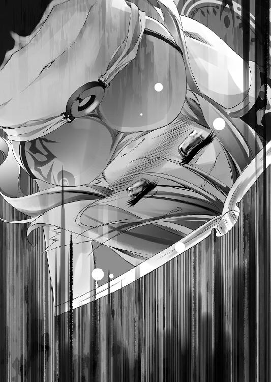
ただ同じ単語を羅列しただけの、所々水滴で滲んだページが語っている。
記憶を失った自分は──自分ではなかった、と。
魂だなんだと理屈を並べようと、記憶の全てを書き残したこの日記を。
記憶を失った自分が読んで──他人の日記としか思えないならば。
それは所詮──別の誰かなのだ、と。
誰かの日記を読めば、その誰かになれるか──？ なれるわけがないのだ。
いくら本を読んだところで、『知識』以上のものは得られないのと同じように。
どんな想いでそれを書いたかまでは──決して伝えられない。
そう結論づけたジブリールは、空から渡されたサイコロを返したくなかった。
また全てを忘れてしまうなら、そのままサイコロを振ることさえ、拒みたかった。
許されるなら、その場で死にたいとさえ思った。
だが、それではサイコロ十個抱えたまま脱落──まして。
マスター達の勝利を──ともすれば命脈さえ断ってしまいかねない。
だから、ジブリールは再度、マスター達に問うた。
自分が勝っても良いのか、と──そして。
「......我ながら、最低でございますね......」
めくった頁、サイコロを〝借りパク〟して書いたそれを見て。
ジブリールは、思わず自己嫌悪に顔をしかめた。
そこには事細かに──この『大戦』を仕掛ける手順が書かれていた。
──対神霊種の『双六』、誰が上がってもいいなら──ジブリールが上がる。
だがそれだけではきっと〝何かが足りない〟と、ジブリールには百も承知だった。
他ならぬマスター、空と白、我が主、あのお二人が。
誰かが上がれば皆の勝ち──などという『敗北』を前提にしたはずはない。
故に、〝神霊種に勝つ本当の方法〟をも賭けさせて。
その上で──『棄権』するしかないようなゲームを仕組んだ。
その一切を、記憶がなくとも行えるよう、つぶさに書かれたページに──
「ですが──後生です、マスター......」
顔を伏せたジブリールが、そう零す。
軽蔑されるだろう。どんな罰でも甘んじて受けよう。
何ならば一言、死ねと命じられれば──いや。
──死ぬことを許して貰えるなら、今すぐにでもそうしたい......だけど！
「......どうか、どうか一度だけ......お願いでございますマスター......私に勝たせて頂けませんか......今回だけは......どうか──ッ」
認める。──どうしようもなく、怖い、と。
「......私ではない誰かが、私の顔で、私の声で──」
日記に連ねた全て──六四〇七年間、自分が見聞きして、学んで、感じたものも。
今こうして、低劣な手段で脅してまで、勝利をもぎ取ろうしていることも。
そんな資格もないのに──みっともなく涙し、懇願していることも。
その全てを、その意味さえも忘れ──
「マスター達に『ジブリール』......と、〝私ではない誰か〟が呼ばれて──」
最も大切な記憶、大切な人達の傍でそう呼ばれるのが、
「くだらなそうに見返すのは......どうしても認められないのでございます......ッ」
そんな──〝他人〟だと、想像する。
それに勝る恐怖など、一度として味わったことがない、と......
────............
──どれほど、そうしていたか。
忙しなく動き始めた『地図』の表示に。
ジブリールは涙で崩れた顔を上げて小さく苦笑した。
「......そう、で......ございますよね......マスター達が、『 』が......敗北を、受け入れるわけ、ございません......でしたね」
──『棄権』する気など微塵もないのだろう。
だがそれは一方で、『受けて立つ』ということであり。
また同時に、『ジブリールが勝ってもいい』ということだった。
何せ、大量に届いている空達からの『手紙』──煽り文句だらけのそれに。
たった一言──『棄権しろ』、あるいは『死ね』と。
そう書かれていれば、所有物である自分に、拒否権などないのだから......。
「......ありがとうございます、マスター。お胸、謹んでお借り致します」
そうしてジブリールもまた、ペンをとって『指令書』を書き始めた。
──何を措いても、勝ってみせる。
徹底的に追い詰めれば、マスター達も『棄権』せざるを得なくなる。
でも──と、最後に一瞥、日記を見る。
──『きっと、それでもマスター達は勝つのでございましょうね』
そう書かれたページに、思う。
ならばせめて、マスター達に敗れて──死にたい。
──これが、最期のゲームになるというなら。
大戦が終わった日。全てが変わったあの時に、世界はどうやって変わったのか。
その答えを、人類種の力を、今一度世界が変革する瞬間を──
この神霊種戦がどう終わろうと、〝自分〟には見届けられないそれを。
せめて確信して、書き残してから──...
■■■
三○八マス目──その端で、
「ここ、を──通しやがれぇ、ですッッ!!」
咆哮し、マス端の空間を砕かんと猛り狂う紅い獣の姿があった。
沸騰した血を纏ういづなが振り下ろす拳は、一撃ごとに爆音を奔らせる。
物理をさえ超える『血壊』──その知覚が捉えるは、遠い戦場。
──マス端から見下ろせる、極限まで圧縮された空間。
かつての『大戦』を模したゲーム──あんなものを生み出す神霊種の力。
ただ殴って越えられるわけもない空間の壁を、だがそれでも、と。
いづなは揮発する血と焦燥に身を灼きながら、虚空に拳を、爪を、牙を突き立てる。
──戻らなきゃ、戻って止めなきゃ、と。
あれはゲーム──ただの幻だ。いづなにもそれは分かっている。
だが、命が埃のように扱われ、天地が玩具のように引き裂かれる光景を。
いづなは、知っていた。
テトに聞かされた話と、形は違えど同じ道を辿るなら、至る結末も──
「──ダメ、なん、です──あれじゃぁ──ッ!!」
いづなは、知っていた。
ジブリールが知らない、知りたがっているその答えを。
かつての『大戦』がどう終わったかも、あのゲームがどう終わるかも。
──ただ、誰かが死んで終わるだけなのだ、と。
【汝、何を迷う。一言、名を告げよ】
それが冷たく告げた。
無機質なその声に、目尻の涙さえ揮発させて拳を振るっていたいづなは、振り向く。
【然すれば汝が『勝者』となる──凡てが直ちに了しよう】
永遠の時をそうしているかのように、虚空を漂う墨壺にただ腰掛けているもの。
──『信じるとはなんなりや』と......いまや答えられる気がしない問いを問うもの。
凡てを見下ろす神霊種が告げたるは、いづなが対峙する【課題】──
──【神霊種が握る七名の魂、手放す一人を選び、上がりマスへ転移されよ】
すなわち、誰を犠牲にこの勝負を決着させるかという、問いを。
「────────」
混乱、とも違う。ただ喘ぐように、いづなは目を泳がせ、震える。
この全てを無関心に眺めている神霊種と、あと一人、犠牲にすれば。
──それで、全てが終わるという。
眼下でジブリールと空達とが殺し合っている、あのゲームも。
外でいのやプラム、クラミーやフィールが殺し合っている、あのゲームも。
誰がゴールしてもこの神霊種は死ぬという、殺し合いのゲームも全て。
ならば──〝あと一人〟。
たとえば......いづな自身が、自分を犠牲にして上がれば──？
それ以上の犠牲は、食い止められるのでは────？
─────ッ!?
「......ふざけんな、です......アホじゃねぇのか、です──ッ!?」
こんな馬鹿な話があるか、といづなは牙を剥いて吼えた。
神霊種に、ではない。あまりにも馬鹿な──自分に対してだ。
そも──いづなはこのゲームを、〝ややこしく考える必要はない〟、と考えていた。
全員が裏切りあってこそ、結果的に協力し合い、誰かがゴール出来る。
その理屈を幼いが故に鋭い感性で暴いた上で──自分が勝つ、と思っていた。
そうして......
──『巫女を含めた皆を助けろ』と、要求するつもりだった。
だが、何故気づかなかった、といづなは自身への苛立ちに、悲鳴をあげる──
「それじゃ──〝なんもかわんねぇ〟じゃねぇか、です──ッッ!?」
ゴールすれば、みんな助かる？ だからゴールする？
みんなを助けるだけなら──こんなゲームしなければいいだろう──ッ!?
まして、ゴールしても、神霊種は犠牲になる？
プラマイゼロどころではない──勝ってもマイナスしかないじゃないか。
あまつさえゴールするために、この課題を突破する必要があるなら、さらに一人？
「──意味、わかんねぇ、です──ッ！」
頭を振って駄々っ子さながらにいづなは思う──そんなはずがない、と。
そんなわけがない。そんなのありえない。そんなのを自分が同意したわけがない！
──皆が助からないなら、ゴールしたって──何を要求すればいい!?
必ず誰かが犠牲になるならそんなゲーム、そもそも始めたわけがない──っ！
ならば──と、キッと神霊種を睨んで、いづなは、
「数なんかかんけーねぇ、です......おめぇみてぇな嘘吐き──大ッッ嫌ぇ、ですッ!!」
一も二も全て同じだ、と嘯く神霊種の言葉を──『嘘』と断定して吼える。
──嘘に決まっている。
あまりにも多すぎる〝不可解〟に、いづなは頭を抱えて思考を巡らせる。
そもそも──この【課題】はなんだ？
三〇一マス目から連続したこれは──何故密集している!?
いや、そもそもというなら──この【課題】は、いったい誰が書いた!?
違う──違う違う、といづなは頭を振って考える。そもそも、そもそも......
──神霊種が握る七名の魂......？
それはいったい誰のことだ──？
空、白、ステフ、ジブリール、いづな、いの、プラム──確かに七名だ。
だけど──この神霊種の魂も含めたら──八名ではないのか、と。
まして〝巫女様〟を含めたら、九名のはずだろう──ッ!?
違う。そうじゃない。絶対に、そういうことじゃない──っ！
「......いづなぁ、ぜってー......誰の名前も言わねぇ、ですッ!!」
何が違うかまでは分からない。だが直感が告げているのだ。
──断じて違う、そうじゃない！ と。
それだけを確信して。涙をこぼして叫ぶいづなに、だが──
【了解した。何れにせよ、汝の敗北は決している】
応えるはやはり、一切の感情なき神霊種の声。
──そう、何れにせよ【課題】を達成せずに七二時間が経過すれば。
いづなはサイコロを一つ失い、残り一個──そこで進めなくなる。
だが、
「......負けたっていい、です。おめぇは大ッ嫌ぇ、です！ ──けどッ!!」
と涙目で神霊種を睨んで、いづなは──思う。
「それでも──おめぇが死ぬのもぜってー認めてやんねぇ、ですッ!!」
......だって、誰かを犠牲にしなきゃ。
何も変えられない、何も止められないなら。なんで──
「──なんで、テト......いづなに、あんな話、しやがった......です......っ！」
それじゃあ世界は......。
何も変わってなんか、ねぇじゃねぇか......です......
■■■
ジブリールとのゲーム開始から、既に一六時間。
『地図』に映されるは──『Ｂ．Ｔ．１３２年』の表記。
すなわち、ゲーム内では既に五二年もの歳月が経とうとしている中──
「──出来たぞ、次！ 急げッ!!」
「......遅い......はやく、投函する、の......っ」
ユニットを騙せる──その事実を突き止めてから、早一○時間。
空と白はその間、一瞬とて手を止めず、ひたすら『指令』を書き連ね、
「や、やる気になったら、なったで！ 両極端、ですわ......ねッ！」
それを投函するステフは、『投書箱』まで全速力で往復ダッシュさせられていた。
本来の空、あるいはステフなら、座っていても手を伸ばせば届く『投書箱』。
だが、幼児サイズにまで退行した三人には、それさえ遠く──
「わ、私が走らされてる理由......もちろん、まともな理由、ですわよね!?」
たまらずその重労働の意味を問うステフに、
「もちろん。ゲームの勝敗を分かつ最大の要因つったら──」
と空は、机に広げられた『地図』を軽く指で叩き、空中にスライドさせて答える。
「──情報、だろ？」
そう言って空が虚空に投影させた世界地図に、ステフは目を剥いた。
「ここ、ルーシア大陸でしたの!? い、いつの間にこんなに見えて──」
都市周辺と僅かな『斥候』が辛うじて照らすだけだった黒塗りの『地形情報』。
それが四桁を超える『斥候』により、大陸一つの姿を暴き立て、映し出していた。
「ど、どうやったんですの!? こんな大量の『斥候』を──」
そう、ステフが驚くのも無理はない。
今までは体感で数分、ゲーム内でも最長二ヶ月で『斥候』が死亡していたからだ。
だがこの地獄、死の灰が降り注ぎ、異種族との遭遇が死を意味する地で。
四桁もの『斥候』を維持──生存率を上げた事を、この『地形情報』が証明している。
なら、その方法は──と問うステフに、空はニヤリと笑って、
「──『望遠鏡』を作らせた」
「ああ......やっぱりイカサマやズルの類でしたのね......」
心底がっかりした様子のステフに、だが空は憮然として反論する。
核戦争も真っ青な世界で、たかだか未来技術一つで、ズルだと......？
「心外だなッ!? こりゃほぼ『仕様』だぞ!? 仕様内の手を使ってな～にが悪いッ！」
「......レンズ、の......素材......『ガラス』......ほぼ無限、に......ある」
現代エルキアでさえ、レンズに使える透明度のガラスは決して安くも多くもない。
それを大戦時に、〝ほぼ無限〟と告げた白を訝しむようなステフに、
「ああ。だって──このアホ共が、いくらでも作ってくれんだから♪」
そう嘲るように空が答えた。
その瞬間もまた、光が閃き、大地に穴を穿つ力が降り注ぐ......そう、つまり、
「......『超高温高圧の衝撃』......砂漠、山──鉱山までも揮発させる力」
──さながら古代核戦争で、硝子化する砂漠の如く。
白鉛鉱から鉛を含んだ〝素材〟を、他ならぬマヌケ共が提供してくれているのだ。
磨けばレンズとして使うには十分足りる透明度のガラスを──無限に。
「後は徹底的に磨かせて設計図通りに作れと『指令書』を投函すりゃいい」
そうすれば、ユニットに光学技術など、必要ない。
ただ『指令』通り──〝設計図〟通りに、ユニットは動く。ユニットにも理解出来ないまま──四枚の凹凸レンズを組み合わせた、倍率五〇の地上望遠鏡の出来上がりだ。
かくして索敵能力も、地図の表示範囲も広がった──だが。
当然、それだけでは『斥候』の生存率が劇的に上がるものではない。
比較的安全な移動ルートの割り出し、生存技術の確立。
この荒れ果てた世界でも出来る農業法、保存食技術の実践、等々。
それらを手探りで暴きつつ、膨大な『指令』を出していった結果が──
「......にぃっ......みつけた、よ......」
白の声に、空はテーブル──『地図』の上に飛び乗った。
そうして少しずつ映し出された世界......暴かれた世界地図に──
自陣営のものではないユニット──〝目的〟の一団を捉え、
「やっぱりな──〝狩猟〟してやがる」
一定のルートで定期的に動くその様に、空はほくそ笑んだ。
『斥候』をタッチ、ピンチアウトし、宙空にその視界を投影する。
そして──望遠鏡越しに映った者に、満面の笑みで手を広げる。
「いらっしゃ～い獣人種さ～ん♪ 俺ら友達だよな～？」
「......そんな友達ごめん被りたいですわね......」
ケツの毛まで毟ってやるからカモン、という空の副音声に、ステフは小さく呻いた。
──黒灰で大地が汚染され、次の瞬間には全てが消し飛ぶ世界。
定住農耕生活など、上位種以外は余裕もなければ──割にも合わない。
まして獣人種の身体能力ならばなおのこと、狩猟採集生活の方が確実だろう。
だが問題は、そのルートと頻度である。
「......にぃ......ルート計算、出来、た......」
阿吽の呼吸。そのルートを瞬時に暴いた白が、メモを見せる。
約三秒ごとに、六つのルートで往復を続ける──獣人種の群。
三秒......ゲーム内時間にしてほぼ毎日である、それが意味するのは──
「予想通り......〝飢えてる〟。さ～て、楽しい『外交』のお時間だぞ白っ！」
こんな世界だ。さぞや獲物も不足しているだろう──つまり。
──つけ込む隙がある、数少ない種族ということ。
睨んだ通りの展開に、薄く笑って。
空と白は予め用意していた『指令書』に──座標だけを書き加えてステフに渡す。
それをまたもや全速力ダッシュで投函し、戻ってきたところで、
「ぐ、具体的にどう、するんですの......獣人種を味方に......ですの？」
息を切らしたステフの問いに、だが空と白は、眉根を寄せて答える。
「......飢えてる、獣人種......味方に、して......どうする、の？」
「人類種を腹ぺこな獣人種に美味しくお召し上がり頂きたいってか？」
確かに、ユニットを騙すことが出来るのは、検証済みだ。
だがそれでも──約束、契約などが無意味な世界だということ。
また人類種の存在が気取られれば終わりだということも──揺るがない。
──ならば、
と、一・八歳児にはあまりに不似合いな邪悪な笑みで、空が告げる。
「〝森精種ユニット〟、まず一体──手に入れる」
「......は、はい？ 獣人種との外交、じゃなかったんですの？」
そう問うたステフに、空と白はただ投影した『地図』を見る事で答える。
──映し出された地図の上では、一体の『斥候』が移動していた。
そして獣人種の狩猟ルートに達すると──、
そのまま、引き返して行った。
......どういうことだ、と。言いたげなステフに先んじて、空が説明する。
「食料を置いて来させた──〝懇書〟を添えて、な」
幸い、稚拙ながら改善した農業や保存技術などで、食料には多少の余裕がある。
鶏肉の燻製や、芋の酢漬け......飢えた獣人種には、ご馳走だろうそれらを。
臭いを辿られないように死灰に紛れながら、かつ念には念を入れて。
連中が六日後に通るルートを選択し、置いて来させたのだ。
実時間にして約一八秒後、獣人種の群はあれを拾い。
──そして空が書いた〝懇書〟を読むだろう。
「懇書......って、手紙ですわよね。内容はなんですの？」
「〝外交貿易〟の提案書さ」
そう、獣人語で書いた手紙──種族間取引の提案を。すなわち、
「森精種を一人攫う度、この倍の食料を提供する、とな♪」
要するに──『人身売買』の提案、と満面の笑みで空は言う。
本来ならばいくつか罵倒を飛ばすところだろうステフは──だが、
「......え、森精種を攫うって、そんなことができるんですの!?」
それ以前に、そもそも無理ではないかという点をこそ、訴えた。
最も魔法に長けた種族を、獣人種といえど攫えるのかと問う声に、
「出来るさ」
と、空は不遜に断定して──続ける。
「きわめて他愛なく。いとも容易く......息をするよりイージーにな」
──その方法までを、つぶさに手紙に添えた空は、ただ昏く嗤う。
なるほど。相手は魔法に最も長けた世にも名高き森精種さまだが......、
「どんな魔法も、どんな力も──すべて無駄だ」
何故なら、と空は更に嘲笑を深めて続ける
「魔法は使わせない、抵抗さえもさせない──状況を作るからだ」
それはゲームにおける基本にして、奥義──すなわち、
「それだけで、全てが無力化する。今も昔も、そこは変わらん」
──相手がしたいことを一切させず。
されたくないことを、徹底的にする。
それだけは、戦争においてさえ、例外なき真理である、と。
「いいか？ まず獣人種を利用して──森精種を一体、抱き込むだろ」
「......そした、ら......次、森精種使って......別の、同族を......売らせる」
と白がドライに淡々と続きを説明する。
──一体でも『森精種』を抱き込めば、それを利用して次の『外交』。
ならば次は、そのお得意の魔法さまを使わせて──と、後は芋づる式だ。
かくて、すべて手繰る手綱は、この手にある、と。
あまりに幼すぎる容姿とは裏腹に、悪魔の如き冷酷さで断じる兄妹に。
ステフは小さく背を震わせ、二人と共に──投影された『地図』を見る。
──凡ては予定調和に。
空と白──二人の思考に、現実こそが従わされているかのように。
宣言通りに、森精種のユニットを連れ、獣人種の一団が指定場所に現われた。
そう、まさに──きわめて他愛なく、いとも容易く。当然の如く。
その事実に、ステフが眼を剥いて、空と白が笑みを深めた。
──その瞬間だった。
「........................ぇ？」
──獣人種の一団がマップから消失した。
空は慌てて、遠くで偵察していた斥候の視界を投影する。
すると、獣人種の一団は、周囲の景色ごと跡形もなく消えており──
空中の『地図』には、とぼとぼと来た道を帰っていく『森精種』が映っていた。
............。
「......ソラ？ どうやって攫うか指示したんですのよね？」
呆然と見つめる一同、沈黙を破って問うたステフに、
「あ、ああ!! つか、実際攫って来ただろ!?」
「......にぃ......どう、やって......手に入れる、つもり......だった、の？」
だが猛然と反論する空に──何かを察したのか。
そうたずねる白の目は、どこか冷たく......半眼だった。
攫うのは、なるほど上手く行ったようだが、では。
〝どうやって抱き込むつもりだった〟と、そう問う白の瞳に。
「へ？ そりゃ～......心もプライドもへし折って、あれこれ悦びを教えて何でも言うこと聞くようにするんだよ。──だから、最初は女を攫うように指示しといたし」
「......ちょっ、発想が最悪ですわッ!?」
意味を察して目を剥くステフに、だが空はきょとん、と。
「え......エルフってオークに集団でアレされたら屈服するんだろ？」
──オーク、つまりブタ人間、すなわち猪族の獣人種だろう、と。
太陽が東から昇る自明さを語るように、疑念なき瞳で答えた空に。
........................。
応えたのは、海より深い静寂と、凍えるような視線だった。
だがそれに気づく様子はなく、空はテーブルに拳を打ち付け、
「バカな......ッ！ 何を間違えた、俺は何を見落としたッ!! エルフがオークに捕まって『くっ殺』からの即堕ち二コマはゲームのお決まり森羅万象の摂理だろッ！ アヘ顔で愛欲に飢えた森精種改め『エロフ』を傀儡にする──このインクレディブルにパーフェクツなプランの何処に、どんなミスがあった──ッ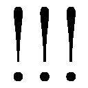」
「......にぃ、それゲームじゃなく......薄い本、の......摂理」
そう、インクレディブルながら、白は半眼で呟く。
どうやら空は本気で、心から、純粋に、己の失策に苦悩しているらしい、と。
「というかソラ、一応......オークは、獣人種じゃないですわよ」
────。
──なん......だと......っ!?
膝から崩れ落ちそうになるのを堪え、空は震える手でタブＰＣを掴み。
そして【十六種族】について記した項目を開いて──天を仰いだ。
「チクショウッ！ オークって妖魔種かよッ！ どーりで失敗するわけだッ！」
「いえ！ 失敗の原因はそこじゃないですわよねッ!?」
だが己の失策を呪う空の耳に、ステフの声は届かない。
なんたる初歩的ミス──外交相手間違えただと──ッ!?
......いや、悔いるのは後だ、と空は己に言い聞かせる。
まずはこのミスをどう挽回するかだ──と、爪を噛んで焦燥に染まった顔で考える。
「──妖魔種と外交だと......どうつけ込めばいい......ッ！」
妖魔種──未だ面識もなく、情報も少なすぎる種族の一つ。
つけ込む隙などそう簡単に見つかるものでは──
「ねぇ！ 獣人種に申し訳ないと思～......う、フリくらいしませんの!?」
妥協まで見せそう訴えるステフは、だが無視。
連れて来られた以上、森精種ユニットと少なからずイイ思いしたのだ。
──ならばきゃつらも本望だろう、というか羨ま死ねけしからん。
だが爆ぜてくれたので許して──と。
「......にぃ......これ、オーク......じゃない？」
白がタップしたユニット──先程の森精種の帰路の僅か南。
ユニット名──まさしく【妖魔種・オーク８】と表示されるそれにこそ、
「ファインプレイだ白ッ！ 斥候を使って誘導、集団で襲わせるぞッ!!」
迷わず飛びついた空の筆は、信じがたい速度で『指令』を書いた。
「ちょ、待ちなさいな！ 目的を見失ってませんの!?」
それでは攫って来ることは出来ない、との指摘に、だが──
「黙れ！ エルフたるものオークに『くっ殺』からエロフ転身は運命である！ 『エルフ』じゃなく『森精種』ですと表記で摂理を誤魔化そうなど笑止千万、処断されよッ!!」
「一番処断されるべき人がどの口で言うんですのぉぉおお！」
頭を抱えて叫ぶステフを他所に──〝まあ、それに〟、と。
書き終えた『指令書』を投函し、空は一方で冷静に──打算する。
上手く行けば──情報が足りていない妖魔種の動きを探れる、と。
快楽堕ちは......まあ、望めないでも疲弊した森精種なら、捕縛も──
──そして、まあ、なにより、と。
空は鼻の下を伸ばし、スマホを構えて地図を睨みつける。
おそらく、今まさに行われているだろう、淫蕩極まる十八禁な光景。
それを望遠鏡越しに見ているはずの斥候を選択し。
その視界を表示させようと、ピンチアウトする手が──しかし。
「......にぃ、今、一・八歳......十八禁......ＮＧ......」
「ふ、ふふふ、フハハハッ!! そう言うと思ったぜマイリトルシスターだがッッ！」
こちらの手を遮った白に、空は手本のような三段笑いで応える。
「リアルタイムの一秒はゲーム内の八時間！ 肉眼ではまず見えぬ！」
しかし──とスマホを構え、空は吼える。
「高速撮影モードの動画ならば！ 十八歳に戻ってから確認し、然る後制止画を保存──ま、一フレームくらい映るだろ──ともあれ問題ないはずだが異論はあるか!?」
高らかに、雄弁に語る空に、ようやく気づいたのか──
「あ、あなた......最初からそれが目的でしたのねッ!?」
「ふ、何のことだかサッパリだな!? 俺はいつだって必要な手を打つまで！」
と空は勝ち誇った様子で、斥候にピンチアウトする。
「だが──その副次結果として生じる美味しい展開を見逃す気も──」
──ない、と。続けようとした言葉は、だが。
「......あれ？」
と、『地図』の表示に対する、疑問に変わった。
──表示されるオークのユニットが、徐々に減っていた。
最初は空も、白も、ステフさえも、森精種の反撃で斃されているのかと考えた。
だがすぐに〝そうではない〟と気づいて、三人は揃って小首を傾げる。
たっぷり二秒──ゲーム内で一六時間もかけて、一体ずつ減っていたからだ。
普通に戦っているだけなら、こんな長丁場になるはずはない。
なら──いったい、何が起きている......？
そして三人の中で最も速く推理を組み上げた空が、ごくりと唾を呑み、
「まさか......オークが絞り尽くされてひからびてん、のか......これ」
引きつった顔で語るその推理を、裏付けるように。
八体いたオーク、最後の一体を引きずって、森精種が再度帰路についていた。
────。
しん、と時が止まったような静寂が何秒──何分経ったか。
ぽつり、と。
「......にぃ......森精種、が......オーク狩り、始めちゃった......よ？」
白の呟きを皮切りにしたかのように──
森精種の軍団が、各地で妖魔種と交戦、オークの捕縛を始めた。
──ふむ......さてこれは何を意味するか、と。
空はまさしく神の目線──全力で他人事さながらに思考し、頷いた。
「なるほど。森精種が奴隷制推奨してるの──そっち目当てだったか」
得心し、続いてクラミーを奴隷にしているフィールを思い出した。
......数秒熟考、いい笑顔で想像の翼を広げんとする空を、
「そんな話、聞いたことないですわよぉおッ!!」
ビシッ、と風切り音さえ立てて地図を指差したステフが遮る。
「ソラのせいで森精種がお望み通り──ぁ、ぇ、エぉフ......になったじゃないですの！ どうするんですのこの卑猥な歴史改変！ フィールさんが見たら殺されますわ!?」
──エロフ、とは言えなかったのか何やらごにょごにょと。
だが断固責任追求するその主張に、空は猛然と食ってかかった。
「ハァアッ!? 一体のエロフ転身を目論んだのは俺だそれは認める！ だが!!」
同じく風切り音を立て、今度は空が森精種ユニットを指して、
「それで種族ごとエロフ化すんなら元々そーゆー種族だったってことだろッ！」
「ぅ──ぐっ！」
「ど～りでフィールのお済まし顔おかしいと思ったぜ！ 間違いねぇ、ありゃ一皮剥けばヨゴレ系だ!! は～見えるぜあいつがクラミーとキマシ塔おっ建ててる姿がぁっ!!」
そう叫ぶ空は──だが、ふと思う。
......案外、どの種族もそんなだったりするのではあるまいか、と。
ジブリールも、相当こじらせてはいるが、その気があるようだし。
まして、よく言うではないか──Ｓは実はＭの裏返しである、と。
世界を壊し尽くすサディスト共ともなれば、そりゃ～もうトンデモなド変態──
「......にぃ......オーク、どんどん減って、る......滅びちゃう、よっ！」
と、空が現実逃避気味な妄想に浸っている間にも戦況は動き続けていく。
順調に撃滅されていく妖魔種、そして連行されていくオーク達に──、
「......くっ、何故だ......っ」
と、空は項垂れ、深く慟哭した。
「やはり乱獲するのかっ！ そんなとこまで元の世界の連中と同じか......ッ！ ちくしょおっ、オークたちから......ただ体質的に多産傾向で夜が強いってだけで、オークたちから全てを奪っていくのかよ......っ!? これが知的生命体のやることかぁッ!!」
「原因はご自分にあると分かりきった上でよく言えますわねッ!?」
エロ理論に一抹の希望を見たと思ったのに──嗚呼。
その希望ごと、今まさに、一つの種族が滅ぼされようとしている......
これが戦争......なんてむごい──そう失意に頭を垂れる空に、だが、
「......ぁ」
ぽつりと呟いた白の声に、空も、ステフも顔を上げ。
そして......三人は、呆然と。
──全てが六〇分に満たぬうちに行われた、それを見た。
だが、ゲーム内時間にして三年以上にわたったそれは。
空達のちょっとした〝ちょっかい〟に端を発した、それは──
──妖魔種と森精種の、全面総力戦突入で、始まった。
オーク乱獲を続ける森精種に、妖魔種の創造主──『魔王』が介入。
大規模反撃に甚大な被害を出しながら撤退戦を強いられる森精種は。
同じく創造主の兵器──『虚空第零加護』を使用し、『魔王』を撃滅。
かくして終わると思われた戦線──だが妖魔種に加勢する勢力、すなわち。
〝幻想種殺し〟に危機感を抱いた地精種、幻想種複数に、戦線は拡大。
再度劣勢に追い込まれる森精種は、だが地精種を共通仮想敵とする勢力。
一部の龍精種、および妖精種と共同戦線を張り──
かくて雪玉が転がるように膨大な犠牲を増やし戦火は拡大していった......。
混迷を極める泥沼の全面戦争──終わりなどないと思われたそれは。
──だが、あっけなく。
前触れも無く、唐突に終結した。
突如として両軍に降り注いだ光──そう、災害のように通り過ぎたもの。
天翼種の無差別攻撃によって、両軍『主力全滅』という結果で──
────............
──そうして。
余波でそれを見ていた『斥候』が消し飛んだのか、映像が途絶える。
僅か六〇分弱──だが壮絶過ぎる惨劇になおも虚空を眺めて放心する一同の中。
空は、数回......うん、うん、と己を納得させるよう頷いて、
「......白、全部ジブリールのせいってことにしようと思う。どうだ？」
「......異議、な～し......」
「んじゃ観戦終了！ 閉廷、解散、さーてゲームに戻るぞッ！」
「......ぉ～」
そう言って──自分達のせいで起きた超規模の惨劇の全てを。
ジブリールになすりつけ──何もなかった、と頷き合う。
「誰か、誰かいませんの!? 戦犯が逃げますわ裁く法は何処ですの!?」
淡々と『指令』書きに戻る戦犯に、ステフだけが正義を訴え続ける。
──だが。
「んーむ......白、思った以上に時間なさそうだ──巻きでいくぞ」
「......ん......っ」
複雑な顔で、再度真剣に、猛然と筆を奔らせ始める二人に、
「ソラ～ソ～ラ～？ 〝予定通り〟と仰るなら今のうちですわ～？」
あくまで逃がす気はないのか、ステフが更に詰め寄る。
「今でしたらなんと！ お腹を抱えて嗤ってさしあげますわよ♪」
──そもそもこの【課題】。ジブリールと命の取り合いとなっているミス。
そしてエロフの件のミスから、あげく風桶で大戦火に至ったところまで。
相次ぐミスを責めるステフに、さすがの空も、頬に汗が伝って、
「ん、ん～まぁ......確かに、予定通りとは程遠い、な......うむ」
やむなく──認めざるを得ない、と視線を逸らして答える。
だが空だけでなく、白まで複雑そうにしている、その顔──
「──だが予想通りではある。しかも、あんまよろしくない予想だ」
「......元々、しろ達に勝つ、なら......ジブリール、こうするしかない......」
複雑そうな顔──焦燥が混じった顔に気づいたのか。
「............」
言葉を切って、続きを促すように、待つように見つめるステフに、
「......このゲームさ。目をつぶってても勝てるって言ったよな」
筆を滑らせる手は止めないまま、空は応じる。
──勝つだけなら。ジブリールを負かすだけでいいなら。
強がりなど抜きで、〝楽勝〟だ。ヌルゲーにも程がある。それこそ、
「──本当に、目をつぶってたって勝てるのさ」
「......ん。だって......勝つだけ、なら......」
勝つだけなら。誰かの犠牲をさえ、認めれば──
「俺らは何もしなきゃいい。それだけで、ジブリールは自滅する」
そう、たとえば──先程の、無差別攻撃などのような行動が。
ジブリールが人類種──空達に気づいている故こその行動が。
その結果へと、必然へと──至らせる。
「......だから急ぐんだよ。ほれ、投函頼む」
余裕が失せてきたその顔に急かされるようにして。
ステフは再度、投函に走り出した──
■■■
──空達とゲームを開始してから、二二時間。
『地図』に映されるは──『Ｂ．Ｔ．１１２年』の表記。
ゲーム内では、既に七二年もの歳月が経とうとしている中──
ルーシア大陸での用事を済ませ──その東、アリエラ大陸上空へ。
移動する幻想種アヴァント・ヘイムの執務室──ジブリールの『首都』で。
優雅に、だが迅速かつ的確に、『指令書』に筆を滑らせ、ジブリールは、ふと。
「............」
すっ、と『地図』を撫で、虚空に外の景色を投影する。
──星の遍く地へ、いつでもどこでも自由に移動出来る、『天翼種』。
それらが見渡し暴く世界地図には、一点の黒塗りもなく全てが見渡せた。
全て......そう、懐かしき『大戦』の頃の世界。
破壊と死に満ちた心躍るはずの光景を、だがジブリールは複雑な顔で眺めた。
──神霊種との『双六』を、開始した時。
『マスターであらせられる俺様を出し抜こうなぞ恐れ多いこと考えるはずないよな』
そう煽った空の言葉──暗に〝もちろん裏切ってくれるよな？〟と。
そして──〝やるからには全力で来るよな？〟、と、告げられた時。
【課題】を書く時に──思いついたのだ。
神霊種の力で、【課題】のイメージに従い、マス内が変わるのならば。
その力を利用して『大戦』を再現したゲームで、マスター達に挑む。
──思いつき、【課題】を書いた時、ジブリールは自画自賛さえした。
圧倒的弱者が、いかに圧倒的強者を降して──世界を変えたのか。
ジブリールが全力で挑んで、それでもなお、負かされるならば......と。
その答えに──未だ知らぬものに──未知に......かつてなく期待した。
そう......本来ならば、最高に心躍るゲームになっていたはずだったが......。
そのはずの光景を眺めて、ジブリールは、だがあまりに──と。
「......台無しにした本人が、言えたことではございません......でしたね」
零れかけた言葉を呑み込んで。
ジブリールはただ作業的に、『地図』が映す情勢を改めて見やった。
先程ルーシア大陸で何ぞ集まっていた森精種や地精種──。
わざわざ集まってくれた有象無象......実にいい的だ。手間が省けたものだ。
こちらの指示による無差別攻撃で、全てが壊滅したことを確認する。
『魔王』を討たれた妖魔種は、もはや滅亡も間近。
森精種、地精種、妖精種まで、全ての主力が消滅。
そして幻想種一八体、龍精種七八体も討てたのは、何とも大戦果だった。
──ほぼ全ての種族を無差別に相手にし続け、なお。
ジブリールが操る『天翼種』は、着実に戦果を積み上げて行く。
だがそこに、戦略も、戦術も──何もありはしない。
かつての『大戦』と同じ、強者らしく──ただ、蹂躙するだけだった。
そも天翼種の他、戦神と、その使徒の幻想種までが自陣営だ。
文字通り次元違いの力──数で押せば神霊種さえ造作もなく討ち滅ぼせる。
かつての『大戦』時──遊んで楽しむことにかまけず、全力攻勢に出ていれば、こうも容易く事が運んだのか、とジブリールは落胆とも失望ともつかない嘆息を零す。
──そう......何も、楽しくあるはずもない、と。
だが楽しんでいる余裕も、まして権利さえも、自分にはない、と。
空と白。マスター達──あの『 』を相手に。
勝たなければならない。何としてでも──と。
そしてジブリールは事務的に、作業的に『指令書』を書き続ける。
「──ここまでして、負けるようでは、論外でございますし、ね......ッ」
空達が一言、『手紙』で〝棄権〟か〝死〟を命じれば、終わるゲーム。
だがそうはせず、脅迫をしてきた自分に対して、受けて立つと応じてくれたゲーム。
ジブリールはせめて、本気でやって──勝たなければならない。
それが、せめてもの義務──と筆を奔らせ、ジブリールは思案する。
──人類種。
マスター達が、極めて優れた方々とは、重々承知。
だがいかに優れていようと、この戦力差、取れる手は一つしかないはずだ、と。
──徹底的に暗躍に徹し、背後から戦局を手繰る──それだけだ。
いかにもマスター達がやりそうなことだと想像し、ジブリールは半ば確信を得る。
大戦時、不自然な程に誰にも気にされなかった種族──人類種。
その理由、正体こそ、きっとこれだったのだろう──と。
......その先。結末までは──まだわからない。
最後の一手。どう大戦を終わらせ、それに機凱種がどう関わったかは──
だが、なんであれ、
「......でしたら何をすればいいか、単純な話でございますね......」
そう──全種族を根絶すればいい。
利用する他種族さえもいなければ、暗躍さえ出来まい。
いかにマスター達といえど、そうなれば棄権するしかないはず、と。
考えるジブリールは、ふと──
「おや......？ 様子が変わって参りましたね......」
天翼種達が照らす『地図』。
その上を動く情報──情勢が変わりはじめた雰囲気に、声をこぼす。
それまでバラバラに、独自の思惑で動いていた種族が連携をはじめる。
──明らかに、天翼種を敵視して。
「やはり、そうですか......ええ、ええ......そうでございましょうとも......」
その様子に、ジブリールは僅かに笑みを浮かべ、筆を加速させる。
このゲーム──『大戦』という、紛うことなきジブリールの独壇場で。
本当に、真正面から、マスター達は、自分を討ちに来るのだ──ッ!!
──負けたくない......勝たなければならない。
だが死力を尽くし、それでもなお──敗れるのであれば。
そう、複雑な笑みを浮かべ、ジブリールは思う。
ジブリールには見ることの叶わなかった、世界変革の刻を。
このジブリールには見ることの叶わない、世界変革の刻を。
──我儘ついでに、せめて......最期に、拝見させて頂ければ。
それで──
......それ、で......
「......それで、本当によかったのでしょうか......ジブリール......」
不意に、ジブリールはそう、自分に問いかけてみた。
──記憶を失うのが怖い。こんなに怖いのならば、せめて死にたい。
願わくばマスター達の手で、その手が編む未来を見て──死にたい。
そう思う。だが......、
本来ならば──最高に心躍るゲームになっていたはずのそれは──
......だが、あまりにも──、と。
その続きを口にする資格などないのを承知で、それでも、思ってしまう。
最後のゲームが、こんなに──つまらなくて。
本当に......ジブリールは、よかったのでしょうか......マスター。
──もはや、何も分からない様子で俯いて。
ジブリールは『指令書』を濡らした雫を払い、ただ筆を滑らせる。
■■■
そして、轟音が天地を揺らした。
「──のひぁあわぁあっ!? なんですのほぉ──ぉおオ!?」
──ゲーム開始から、五一時間と四三分。
『地図』に映されるは──『Ｂ．Ｔ．１４年』の表記。
四時間ほど寝落ちしていたらしいステフを叩き起こしたのは、
「お。起きたか？ 大丈夫、移転前の『首都』が消し飛んだだけだ」
数瞬前まで首都だった場所を、クレーターに変えたらしき衝撃だった。
──何がどう大丈夫なのか、と言いたげなステフに、
「だらしねぇな～......たかだか四七時間ちょっとで寝落ちか～？」
「......ゲーム中、に......五分以上寝る、とか......気合い、足りぬ」
一瞥もせず、手を止める様子もなく、空と白が言い放つ。
「ふ、普通の人間は一日一回寝るものですのよ！ あと──」
本来のステフなら相当徹夜耐性があるが、何しろ三・六歳まで縮んだ体──
「走り回ってたら気絶もしますわ──ってなんですのコレッ!?」
床を埋め尽くす大量の紙にステフが悲鳴を上げて、続いて──申し訳なさそうに、
「......あ、あの......お、起こしてくれれば、頑張って投函──」
手を止めることなく筆を奔らせる空と白に、そう言う。
『指令書』の投函が滞ったと思ったらしいステフに、だが二人は気楽に答える。
「あー、それ。今投函するもんじゃないから」
「......半分、は......しろ、の......『数式』......」
「......じゃ、じゃあ......今は何をしてるんですの......？」
と、受け答える間も手を止めない二人に、ステフが恐る恐る問う。
だが──
「んーそうな。今は──シ○シティかな」
「......しろ、は......牧場○語......を......」
「──はい？ というか......マップが──いつのまに......」
返事代わりに『地図』──世界の全体を映している『地形情報』。
そう──不自然なまでに全世界を、明瞭に映し出しているその中から。
一体の『斥候』にタップして、その視界を──虚空に投影する。
──アリエラ大陸中部、赤道付近。
灰に閉ざされた空がなければ、熱帯地域だっただろうそこは。
だが陽の差さぬ世界では、余所と同じく凍土であったそこに、
「なっ......なんですの、これ......っ」
ステフも思わず声を上げるほど大層な『都市』が建っていた。
石材と古代コンクリートで築かれたその都市では──『農業』さえ行われている。
古代ローマ都市を思わせるそれを、だが建てているのも、耕しているのも、
「わ、私が寝てる間に──どうやって獣人種を味方にしたんですの──っ!?」
そう──『獣人種』達が作業する様を見て、ステフは驚嘆に喘いだ。
だがなおも手を止めることなく、空が答える。
「味方には出来ないさ──だが結果的に協力しあえる種族なら、いくつかいる」
そう、下手に存在を知られては困るのだから。
だから、と頭を掻きながら空は、何処か照れ隠しのように、
「......ま、ちょっと、助けただけさ......可哀想だったしな」
「どういう風の吹き回し──いえ。今度は何の魂胆ですの」
もはや空に人道を求める気はないのか。
ステフの疑る半眼に、僅かにムスッと、空は答える。
「んだよ～酷い森精種の心無い復讐で、滅びかけたの助けたのに？」
「その心無い復讐の原因──ソラより酷いかは疑問ですわっ!?」
獣人種をオークと勘違いして、森精種を攫わせたあの件。
あれからゲーム内時間で一一八年が経つのに、その復讐を今も散発的に受けているため集落も食料もなく、滅びかけた獣人種に空が匿名で持ちかけたのがこの状況である。
ようするに──『全部おめーのせいだろ』、と。
ステフの的確な糾弾は、だが今度は言いにくそうに続けられた。
「そ、それに......そんな食料があれば『人類種』にまわした方が──」
──『人類種』総数は、いまや〝四五〇〇〇〇体〟を超えていた。
ルーシア大陸だけで九つの都市を有し、全世界各大陸にさえ散っている。
それを支える十分な食料があるとはまだ言い難いのも、また事実──
だが──と初めて筆を止めて、空は振り向いた。
「誰かを犠牲にするしかない──だって仕方ないんだから、って？」
「............っ」
「そうやってみんな自分に言い聞かせた結果が──『大戦』じゃないのか」
──ぐぅの音も出ない、とステフは項垂れる。
強いて言えば、よりによって空にそれを言われるのは釈然としないが......と。
抗議の眼差しを向けるステフを無視し、空は『地図』に触れながら続ける。
「情けは人のためならず。施すことこそ最高の贅沢と知るべし──見よ！」
別のユニットの視界を投影し、これぞ平和の歩みだ──と語る。
「一七○年の試行錯誤を経て！ ついにこの死にかけの世界で──」
──そう、一世紀以上を要したその偉業を誇って。
「土壌改良土と、化学肥料を利用してッ！」
「......水耕栽培、による......大規模農作、に......成功......っ」
そう高らかに胸を張る空と白に、だがステフも感嘆に喘いでいた。
当然だろう──何せそれは。
本当に、疑う余地なく、紛う事なき偉業なのだから。
──そもそも天が灰に覆われて、陽の光がほぼ差さない凍土である。
戦火を受け続けた地が僅かに熱を帯びるが、それ以外は全球凍結に近い。
土は事実上使えず、使える場所も殆どが『死灰』に汚染されている。
かくしてタブＰＣの情報を頼りに──ひたすら試行錯誤を続けること一世紀。
土壌改良用の土、そして化学肥料を用いて、死灰が降らない地を探し出し。
水耕栽培──ただのヒキコモリ二人には聞いたこともなかったものが成功した──
「だが土壌改良土も、化学肥料も、提供・製造出来るのは人類種だけッ！」
いや──厳密には『人類種』達さえ、その製法を知らない。
空達が指示し、製造後記憶を失うよう徹底して機密管理している──よって！
「獣人種は自分の食い扶持のため働き、我々は食料を──底値で買い叩く！」
なにせ根幹技術を提供しているのはこちらだ。
彼ら『獣人種』には、拒否権はおろか、選択権さえ──〝ない〟。
「かくして！ 物流と経済──相互貿易がここに成り立った！」
「......ウィン・ウィン経済......資本主義に、よる......友好関係......」
「さぁ遠慮せず褒めちぎるがいい！ クソみたいな戦争世界で、俺達は資本主義に基づく経済的共栄を築き上げた！ 謳歌せよ！ これぞ文化勝利──平和である！」
高らかに詠う空と、胸を張る白に、だが──
............数秒の熟考の末、ステフは声を張り上げた。
「それ共存じゃないですわ、搾取ですわよねッ!?」
危うく騙されそうになった、という顔のステフに、だが空はふぅ、と嘆息。
「や～れやれ。資本主義の基礎も理解出来んか......宰相が聞いて呆れるぜ」
首を振り空は思う──搾取だと？
ああ、無論──その通りだ、と。
そこを、見てみないふりしとくのが資本主義の基礎だろう、と！
──だがまあ、なんとでもいえばいいさ、と空は嗤う。
それでも、これが和平であることは──揺るがぬ事実故に！
「あらゆる『生物』が、決して逆らえぬもの──何か分かるか？」
それは──
「空腹、だ......っ！」
「────っ！」
ハッとするステフに、空と白は揃って世界地図を睨む。
「我々はこの圧倒的武器──胃袋を掴むことによって世界と渡り合うっ!!」
「......食を、制すもの......世を、制す......なり......っ」
「腹ぁ減ったら俺らと取引するしかねぇ。だが主導権は──こっちにある」
そう告げる空の眼が放つ光は、覇王の如く、雄々しく、強い。
......ぐきゅぅ～ぅ、と。
そう唸る白の腹が放つ音は、小動物の如く、可愛らしく、儚い。
............。
しん、と──僅かな間に、ステフがため息を吐いて、いう。
「......本音。言って良いですわよ......気持ちは分かりますわよ......」
「──俺も白も空腹の限界なんだよッ！」
その一言に居直ったのか、空が机を叩いて吼える。
「五一時間だぞ！ 眠気疲れはどうとでもなるが腹は減るんだよ！」
「............しろ......ス○王......食べたい......じゅるっ......」
白に至っては、涎を啜って何か見えないものを眼で追っていた。
「......一応伺いますが、良いんですの？ このゲーム──〝幻〟ですわ」
「それが!? 絵に描いた餅だって食ったらウマいかもしれんだろ!!」
「......少なく、とも......紙と、塗料の味、は......する......じゅるっ」
本気で飢えてきた二人の眼光に押されながら、気丈にステフは、
「あの......私達の一秒、ゲーム内では八時間ですわよね？」
四時間も熟睡して頭が冴えたのだろうか。
空達には決して気づけなかった──いや。
あえて気づくことを拒んでいた事実を、無慈悲に突きつける。
「食べるのに五秒かかったら......きっと腐りますわよ？」
────。
全球凍結した世界よりなお冷たく凍ったように。
現実を受け入れるのによほど苦労したのか、たっぷり数秒固まって──
「......じゃ、もういいや......たった今暇になった」
「......にぃ......しろ、五分だけ、寝て......いい？」
「いいぞ～あ、ここらへんの『指令書』、投函しといて。五分経ったら起こして～」
ステフも四時間も寝た身として反論出来ないのか、言われた通りに『指令書』を。
──一度には抱えきれない為、少しずつ『投書箱』に投函、往復する。
その足音を子守歌に。
ぼんやりと、独り言のように空は呟く。
「──しっかし、まぁ......これが本当にあった過去なら......」
白を抱いて寝転がって空は虚空──『地図』が投影するものを見つめ。
そこに映し出される大戦に、どこか複雑そうに、苦笑を零した。
「よく生き延びられたもんだ......ホント、しぶといね～人類」
最終戦争後の世界を、逞しく生き抜く人々を描いた数々のゲームを思い出す。
なるほど......この地獄を生き延びられるなら、核の冬も恐るるに足らずだろう。
空の呟きにステフは何かを思い出したのか、投函する手を止め、
「そういえばジブリール、人類種が神を討った、みたいなこと言ってましたわね」
そう──生き延びたどころの話ですらないと。
ジブリールは、確かに──こう言っていた。
──神々自身を除いて、神を討ったのは、二種族のみである。
天翼種と、その主たる神を討った、機凱種のみだ......と。
暗に、機凱種を利用して──人類種こそが神を討ったと仄めかした。
あまつさえ──その神殺しによって、〝世界が変わった〟と言うなら。
それこそ、人類種こそが『大戦』を終結させた、とさえ言いたげに......、
「......あれは、どういう意味だったんですの......？」
壮大な物語──人類種に隠された偉大なる叙事詩。
それを仄めかしたジブリールの言。
その意味を恐る恐る問うステフに、空と白は不敵に笑って──
「さあな？ なんのこったか意味不明だな！」
「......ジブリール......寝ぼけてた......だけ......」
確信に満ちた笑みで断じた二人に、ステフの肩が落ちた。
「え、あれ、でもこの『大戦』に勝つのは簡単って言ってましたわよね!?」
確かに空はそう言った。だが──、
「そりゃゲームの話だ──戦略ゲーのテクで実際の戦争に勝てるわきゃねぇだろ」
言って空は起き上がり、改めて投影される『地図』を見る。
空と白の──異世界の知識に、この世界の未来の知識。
更に【十六種族】の情報まで持った二人がそれらを駆使した、結果は。
だがそれでも──出来ることは極端に限られた現状を映していた。
──ゲーム開始から五三時間。
ゲーム内時間にして約一七七年が経過しようとしている。
確かにこの条件でここまでやれているというのは、上々の成果だろう。
だがこれが現実なら──空達はとっくに寿命が尽きて、土に還るお時間だ。
そしてそれらより、何より──、
「......ＲＴＳに限らずチェスや将棋──戦争を題材にした、アブストラクト・ゲームを現実と比較する時、最も基本的だが最もあり得ない前提って──何かわかるか？」
「......え、と──俯瞰で見られることとか、命令に忠実なコマとか......ですの？」
知恵を振り絞る様子で、ステフが思いつく限りを挙げていく。
──だが残念。
どれもハズレである。
「明確に勝敗条件があり──必ず終わると決まってることだ」
故にこそ空は、人類を......しぶとい、と評したのだ。
何故なら当時の人類種も、必ず、気づいていただろうからだ。
すなわち──
「この『大戦』を終わらせることなんか──誰にも不可能だ」
「......え......？」
キョトンとするステフを他所に、空は断じる。
この『大戦』──終わるはずがないのだ。
それに気づいた上で。それでもなお、生き延びようとしたはずだからだ。
そして実際生き延びてみせた──それだけでどんな称賛も足りぬのに──
「他種族を利用して『大戦』を終わらせるだぁ？ アホ抜かせよ......」
天地が覆ってもあり得んことだ、と空は言い切る。
「で、でもソラも他種族を利用して......その気になれば出来るんじゃないですの!?」
そう言いすがるステフに、空と白は視線を交わし苦笑する。
──違うのだ。出来る出来ないとか、そういう問題ではないのだ。
まず第一に、そもそもの話──
「人類種が戦争を終わらせたんなら、唯一神は人類種じゃねーの？」
「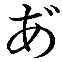～............」
──そう、そもそも『大戦』の勝者は......『テト』である。
まして過去の──ホンモノの戦争ともなれば、
「それに......ンなことしたって割にあわん──〝無意味〟だからな」
ゲームでなく、ホンモノの戦争だったならば、
「最強を斃せば、今度はそいつが斃されるだけ──終わらないんだよ」
そう......『現実は、ゲームとは違う』などと。
知った風なことを得意げに語るものを嘲るように、空は続ける。
「なるほど、じゃー仮に、ジブリールの〝勘違い〟通りだと考えてみよう」
何をどうやったか機凱種を利用し、上手いこと戦局を誘導しきったとしよう。
命がいくつあっても足りないだろう、そんな綱渡りを続けた末に──
「途方もない苦労に苦労を重ねて、何とか神を討てたとしようか......で？」
そして空は昏い瞳で、首を傾げステフに──問う。
「......それで、その後はどうなる？」
「────ぁ......」
そんな偉業を成して、なにが変わるか。
──何も、変わりゃしないのである。
次は機凱種か、その手綱を握っていたなら人類種が、斃されるだけだ。
そして次はそれを斃したものが斃され、また次、次......と永遠に。
終に最後の一人になるか、誰もいなくなるその時まで──続いていく。
それこそ、元の世界と同じように──
「──ま！ そ～ゆーわけで。俺の鍛えに鍛えたゲーム脳が断じるっ!!」
昏い瞳を一転して笑い飛ばし、床に倒れ込んで、空は結論づける。
「人類種どころか、誰であろうと、この『大戦』を終わらせるなんざ出来ん」
ジブリール曰く、これは『大戦』の再現らしいが──断じて違う。
これでは永遠に決着がつかないか、一種族だけが勝ち残るかの二択だ。
「それでジブリール、俺らならどう立ち回ったか知りたいんだっけ!?」
──マスター達ならどう立ち回るか、そう零していたジブリールに。
空と白は、呆れたような苦笑を浮かべ──答えるように、告げる。
「こんな『大戦』なら──白と二人、宇宙の果てまででも逃げ続ける一択だ♪」
「......こくこく」
「......なんか、こう。世界を救うため立ち上がるッ！ とかそういう気は──」
呆れた──否、諦めたような顔で問うステフに、
「うむ！ 一切ないねっ！」
「......世界とか......どーでも、い～ぃ......」
「ですわよね～♪ ......そういうと思いましたわ......はぁ......」
力強く断じる笑顔に、ステフは諦念まじりのため息を吐いた。
「こんなボケた戦争、やりたい奴だけ、勝手にやってりゃいいのさ」
──それで滅ぶ世界なんぞ、だったら滅ぶに任せればいい。
こっちもこっちで勝手にやらせてもらおう。何をしようと──どうせ滅ぶ世界だ。
だったら、今滅びたところで、誰も不都合も文句もあるまい、と。
かつての思考を、昏く思い出す空に──だがステフは首を傾げた。
「でも......実際に、『大戦』は終わりましたし、唯一神様も──」
「そう。そこなんだよ。だから──」
──それでも〝かつての『大戦』〟は終わったのなら。
〝この『大戦』〟では、終わるはずのない戦が終わったのなら。
「ジブリールが見落としてる、〝何か〟があったってことだ」
「......何か、って......何ですの？」
だが空は眼を閉じて、その問いには答えない。答えられない。
──これが史実だったはずがないとだけは、言い切れる。
何故なら〝この『大戦』〟には──ないのだ。
元の世界で散々探しまわって、見つからなかったものが。
──この世界にはあって、元の世界にはなかったものが。
犠牲に犠牲を重ね続けるしかない『定石』の──その先へ至るための。
──『布石』が、ないのだ。
「さーな......ま～でもゲーム脳的に考えるなら......」
だから空はただ、へらへらと......適当に答える。
「な～んぞ条件を満たせばクリア的な、ご都合でもあったんじゃねぇの？」
それこそ『シヴィ』なら《技術勝利》や《外交勝利》のような、と。
そう、微睡みはじめた思考で語る中に──
ぽつっ──と水滴のように。
「......にぃ、天翼種の神......神霊種、討ったの......機凱種？」
零れた声に、「らしいな」と、空は半ば夢心地に考える。
──【十六種族】位階序列十位......『機凱種』......。
現存する個体は極めて少ないらしい機械の種族、だったか......と。
「............だった、ら......どうして......」
漫然とする思考に、また水滴。
「......機凱種......滅びてない、の......？」
ぽつっ、と────。
────────────ッ!?
「のひょぉおお!? な、なんですのぉぉおッ!?」
バネのように跳ね起き、机に飛び乗った空に、ステフが悲鳴を上げた。
だがそれに構う余裕もないのか、空は猛然と『地図』に触れ、拡縮を繰り返す。
隅々まで、その全ての情報を洗って──呟く。
「......十六だ......」
そう、『地図』に移る種族──ユニットの、種族総数を確認する。
十六だ──十六種族だ。
──未知の種族がいないのだ──ッ!!
これほどの戦争......いや、もはや地殻変動と呼ぶべき天災の連続。
まして最後の一人になるか、全ての種族が絶滅するまで終わるはずがない戦争。
いくつか種族が滅びてなきゃおかしい程だ──ならば。
まさか──まさかまさかまさか──
「ただ一種族すら滅びずに『大戦』が終わった──ってのかッ!?」
ふざけた話だ。そんな方法などそれこそ──と思考する空に。
そう。そういうことだ、と。眼を合わせた白が、小さく頷く。
──ジブリール曰く、天翼種の神を討ったのは機凱種だそうだ。
主を討たれた天翼種が戦意喪失する？ まさか。それこそふざけた話だ。
ジブリールやアズリール......空の知る天翼種が、メソメソ泣き寝入り？
あり得ないだろう。戦意喪失するにも──報復を済ませてからだろう。
すなわち──機凱種を残らず滅ぼしてからだろ──ッ!!
では天翼種の神を討ったのだ。天翼種が報復も果たせぬほど、機凱種が強すぎた？
だったら──返り討ちで天翼種が滅びるはずだろ──ッ!?
天翼種も、機凱種も、どちらも滅びていないならば──それこそ。
......そう、まさしく、ゲームのような仮説しか残らない。
天翼種の主が討たれ、どちらかが滅ぶまでの間──その僅かな時間に。
──『大戦』は。
突如として終わった──それこそ、
「......はは......マジでそんな──『ご都合主義な勝利条件』があったって？」
そう呟く空は、だが〝あったのだろう〟、と半ば確信していた。
それが何だったのかまでは、空はもちろん、白にも知る由もない。
このゲームに反映されていない以上は、ジブリールさえ知らないのだろう。
だが『唯一神の座』とやらには、関係しているのだろう──それは。
なら唯一神──つまり、テトには関係しているのだろう──それは。
──〝遊戯の神〟が『十の盟約』を掲げ、示したもの。
──この世界にはあって、元の世界にはなかったもの。
犠牲に犠牲を重ね続けるしかない『定石』の......その先へ至る──
──『布石』を、のこしたものが......
「......にぃ......しろ、と......ＲＴＳで、対戦してる、とき......」
半ば呆然としている空に、白が告げる。
「......征服勝利、出来ない、時......よくやるよ、ね......〝それ〟」
こんな地獄のような『大戦』を、生き延びた人類種。
宇宙人さえ裸足で母星へ逃げ帰るだろう戦争で──それでも。
──戦えないなら、戦わないまま。
──殺せないなら、殺さないまま。
別の手段を使ってでも、勝とうとする。
それでも勝てなければ──〝次〟へとさえ託して。
ついぞ自分ではない、誰かが、『勝利』に至るまで......連綿と。
そんな、泥臭い戦い方を──常套手段とする馬鹿どもなんて、
「......なあ。マジかよテト。おまえ──〝それ〟、誰から託された？」
こんな地獄──現実の大戦を──ゲームだと決めつけて。
そして、本当に──勝利する。
──〝犠牲ゼロで勝つ〟という、その目標に──
「あと一歩まで迫った『人類』だと......？ ナニモンなんだ、そいつ」
限りなくゼロに等しい──だがゼロではない可能性を、信じて。
全てを賭してでも。次へと託してでも──挑まずにいられない。
そんな極まった、愛すべき馬鹿どもなど、きっと──。
空は、顔を伏せ──『Ｉ♥人類』と書かれたシャツに、苦笑して。
「......たまんねぇな......チクショ......」
ああ、まさしく──そういう連中に憧れた空は、だが悔しそうに呟く。
こちらを見やるステフの祖父さん──前国王や、あるいは名も知らぬ〝ソイツ〟。
そんな連中に、だが──
そう──空は虚空に投影される『地図』に視線を向け、
「俺、あんたらみたく──カッコよくは生きられねぇよ......」
呟く空に、白とステフもその視線の先を追う。
投影される『地図』に映るのは、『Ｂ．Ｔ．７年』の表記。
そして膨大なユニットたち、数多の種族の軍団が織りなす戦況。
すなわち──それらから飽和攻撃を受ける、ジブリールの『首都』。
秒刻みで一つ、また一つと表示が消失していく──『天翼種』達だった。
「な──ど、どうなってるんですの？ なんでジブリールが負けてるんですの!?」
その様子に絶句し、問うのは、だがステフだけだった。
答えるのはただ苦笑を零す、空と白だ。
「......何もしてない......その結果がこれ。ジブリールの自滅だ」
──空達は確かに、ジブリールに目をつけられている。
本来──本当の『大戦』ならば、それだけで〝詰み〟だった状況は──だが。
ジブリールが空達を意識し、あくまで『棄権』させるのが目的であれば。
すなわち──『首都陥落』で空達を殺すことが目的ではないのであれば。
まして〝機凱種を利用して勝った〟のが人類種だと思い込んでいるのであれば。
必ず──空達は、他種族を利用する、と考えるだろう。
そしてその手を封じるために、最も確実な手をとるだろう。
利用する種族を消す、つまりは全種族を滅ぼせばいい、と──だが、
「......いくら強かろうと、こんだけヘイト稼いじまっちゃー、なぁ......？」
それこそ、〝戦略ゲー初心者あるある〟の、筆頭である。
安易に勝って。
敵を作り過ぎて。
──全員にフクロにされる......だが。
「......そ、それじゃジブリールが死ぬん、ですの......？」
そう、このままでは『首都陥落』──ジブリールが死亡して終了である。
死を懸けたゲームを迫ったのはジブリールだ。
それを庇ってよいかわからないステフの問いは、
「はー？ だれがアイツの思い通りにさせてやるかよ」
「......なんの、ために......ここまで、した......と......」
だが──ただ空と白の、呆れた失笑を買った。
「目をつぶってても勝てる？ そんなクソヌルゲー、お断りだ♪」
「......もっともっと、鬼畜難易度、で......縛って......いく、の♪」
そして何とも楽しげに──だが冷や汗を浮かべて空は席に着き、
「白、俺らは俺らだ。らしく、ダサく──〝禁じ手〟まで使って行くぞ」
そう、カッコよくは生きられないという空は、だったらせめて、と。
キッチリと。しっかりと。徹底的に、ダサく行こう、と──宣言する。
──元の世界の、オンラインゲームにおける──〝禁じ手〟。
控えめに控えめに、百歩譲っても『敗北』、あるいはそれ以下の行為だ。
ともすればチート使いすら一緒にするなと憤慨する、稚拙で幼稚で最低の手。
すなわち──
「......いいよな、白。これが『 』初の──〝黒星〟だ」
そう、あえて確認する空に、だが白は確認するまでもない、と。
「......勝つより、難しく、て──」
と満面の笑みで頷き、続ける。
「......楽しいなら......しろ、は......にぃ、に......着いてく、だけ」
そして空もまた楽しそうな笑みを一つ浮かべ、『指令書』に筆を奔らせる。
「なら行くぞ──〝回線ぶっこ抜き〟っつー、クッソダセぇ手で──ッ!!」
そして、ステフが受け取った『指令書』が──投函され。
ユニットに指示が飛ぶ中、空の笑い声は、
「せっかく負けるんだ！ せめて──サイッコーに楽しもうぜッッ!!」
──〝最後の首都移転〟を命じる指示と共に、響いた。
■■■
──ジブリールは、終戦を修復術式施術室で迎えた。
故に『大戦』がどう終わったか、伝聞でしか知らなかったその状況は──だが。
数時間前まで、全世界を遍く映していた『地図』と──ほぼ一致していた。
──『天翼種』はそのほとんどが討たれ、残るユニットは数体。
そして『アヴァント・ヘイム』、『アルトシュ』の二体を残すのみとなった今。
その『首都』周辺をうっすらと映すまで暗んだ『地図』に示されているのは──
森精種同盟と、地精種同盟による──連合軍と対峙している戦況だった。
──二つの基軸種族に、それぞれ龍精種、幻想種が連なる連合。
そこに妖精種と妖魔種が加わっている点、全火力衝突に至っていない点。
『虚空第零加護』や『髄爆』が計画運用され着実に『天翼種』を削いだ点。
些細な違いはあれ、ほぼ史実通り──『地図』が表示する日付さえ。
──『Ｂ．Ｔ．２年１１月９日』、と。
大戦終結の日までも、ほぼ史実通りになるだろう様相に──
「......お見事でございます、マスター......」
そう言って顔を伏せて、ジブリールは『指令書』を書き綴るペンを止めて。
代わりに──取り出した日記に、そのペンを滑らせて行く。
──何としてでも、勝ちたかった。
脅迫し、棄権を迫り、それでも負けに応じぬなら、力でねじ伏せてでも、と。
そうまでした低劣に、マスター達は『かかってこい』と言わんばかりに。
正面から応じ、本当に正面から──自分を打ち負かせて見せた。
そう満足げに、ジブリールは日記に......最期の記録を、遺す。
やはり『大戦』を終わらせたのは......人類種だった、という確信を。
マスター達に希た可能性、期待は、やはり正しかった、と。
それを目の当たりにし、書き残せた今──
もはや悔いは──
......な、い────？
「........................本当に、最期の最期まで......」
──だが、ふとジブリールは気づいた──気づいてしまった。
確かにマスター達が勝ち、自分は負ける......では、その後は──？
「......度し難いほどに、不出来な従僕でございましたね......」
これでは大戦が終わらない、と。何かを見落とした、と──。
最期の願いさえ、書き残せないジブリールは己に呆れ天井を仰いだ。
「......マスター、世界はどう変わったのでございましょう」
ついには過去さえ知れぬまま消える自分には知り得ない未来を紡ぐ二人に。
だが、そう問うジブリールに、答える声は──
■■■
──世界の果て、巨大なチェスのコマの頂で。
全てを観るものだけが、唯一神だけが、テトだけが──その全てを聴いた。
片や、世界なんて単純で、子供でもわかる程度の物だと思う者。
片や、世界は複雑怪奇で、永遠にわからぬ故に無意味と思う者。
片や、世界は何も変わってなくて、変われやしない、と思う者。
片や、世界は変わり続け今この瞬間も変わろうとしている、と思う者。
過去も現在も──
『これじゃなんも変わってねぇ......テトぉ......いづなに嘘つきやがった、です？』
それは獣で。幼き感性故に、殺し合いを認めぬ少女の悲痛な声で。
『──然り。何も変わらず又変わりもせぬ』
それは神で。全てを疑い、己さえ信じられなくなった少女の万諦の声で。
それは羽で、そして人で──
果たして、そのどれが真実か、あるいは──と。
テトは満面の笑みで──あらゆるものの問いに、答える者らを見やった。
それは昔、世界は何も変わってなくて、変われやしないと思った二人。
それは今、世界は変わり続け、今、この瞬間も変えようしている二人。
あの日、遠い昔、そう──変えようとした二人を。
──継ぎ征く二人の、答えるその声は──
■■■
「──世界がどう変わったか、か......悪いが俺らには答えてやれねぇわ」
その声は、ジブリールの背後から響いた。
困惑し、絶句するその背──ジブリールの『首都』。
アヴァント・ヘイム執務室、静寂が包む広間に、忽然と現われたもの。
「だから、ま。どうやって変わったか──じゃなく......」
机の上に広げられた『地図』と、『投書箱』を引き連れて。
「どういう世界に変わったか、を。見せてやるからそれで勘弁してくれ」
と机について『指令書』を書く白黒一対、二人の子供が──
「えへっ......来ちゃった♥」
「......会いた、かった......てへ、ぺろ」
椅子に立ち、芝居がかった仕草で頬を染め、もじもじとする空と白。
「──は？ ぇ!? こ、ここここどこですの、って──ジブリールッ!?」
そしてジブリール同様、状況を理解出来ないらしいステフが、そこにいた。
言葉を失い、空転、惑乱するジブリールの思考を、だが嘲笑うように、
「〝相手首都に首都移転しちゃダメ〟......って、ルールはねぇよなぁ～？」
「......どさまぎ、で......『開拓者』送り込む、の......苦労した......ぶいっ」
悪戯に成功した子供の顔で、空と白が──だが、
「これで『首都陥落』すりゃ、四人仲良く死亡だな～？」
続けた言葉に、ジブリールは。
「......俺らの命を盾に脅迫したんだ。こんくらいの仕返し、当然だよなぁ♪」
ないはずの血が、足下に落ちて行く錯覚に眩んだ。
「そん──な！ す、すぐ『棄権』致しますので、どうかお戻りに──」
「ず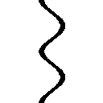っとそう言ってますわ!? どっちか『棄権』すればいいじゃないですのッ!!」
喘ぐように、嘘をついてまで説得にかかるジブリールに、だがステフが吼えた。
「だいたい、ジブリール！ ひょっとしてですけど──ッ！」
ビッ、と指をさすステフを、笑顔で睨む余裕さえなく......
「サイコロ喪失してもゲーム離脱するだけ、死なないって気づいてないですの!?」
「ぅ～わ、見ろよ白。気づいてなかった奴が、上から目線で何か言ってるぜ？」
「......気づいて、なかったの......たぶん自分、と......ジジイだけ、なのに......ねぇ」
ボソボソ陰口を叩く空と白と、頬に汗を伝わせるステフの言葉に......。
「ど──して『負けたら自殺』なんてルール、入れたんですのよっ!?」
............ジブリールは咄嗟に──〝乗る〟ことを選んだ。
体の全精霊を再構築し、末端神経までもを無理矢理に制御して──
「い、いえ──その～あ、あはは～」
努めてバツ悪そうに、冗談めかした笑みを──『造って』。
「全力で挑むのでしたら、文字通り必死になって頂くルールを、と思い♥」
思わずステフが脱力し言葉を失うような表情と声で言うジブリールに、
「あっそ？ じゃー見ててやるから棄権すれば？」
「......しろ達、に......おかまい、なく......どーぞ」
だが空と白もまた、ただただ、笑顔で返した──ただし。
二歳に満たぬ姿の子供二人の、ジブリールを気圧す──笑顔で。
「──俺を相手に嘘とか......ナメるのも大概にしとこうぜ」
「......しろ、すら......そんな嘘、じゃ......騙せ、ない......」
「ぇ。う、うそ？ 嘘って何のことですの？」
やはり──見抜かれていた、とジブリールは項垂れ苦笑した。
「......どうりで......棄権しろ、と......お命じにならないわけでございますね」
「そりゃな。生まれ変わりは自分か、とかあそこまでヒント出されちゃー」
──術式の再起動や、それに伴う記憶の喪失。諸々の原理。
そこまでは、いくらマスター達といえど、知り得ないはず──だが。
それでも、サイコロ全喪失で──ゲームが終わっても、記憶は戻らない、と。
状況証拠から容易く暴かれていた事実に、ジブリールは改めて恥じ入る。
一体何度マスター達を侮れば、この無能は学習を覚えるのだ、と。
「つーわけで、お互い『棄権』も『勝利』も出来ない──ならはじめようか♪」
「......何、を......で、ございましょう......」
項垂れるジブリールに、だが空はつかつかと歩み寄って、
「決まってんだろ──ジブリールが見たかったもんじゃねーの!?」
心底楽しそうに答えてその横を通り過ぎ──空は自嘲する。
──まったく、馬鹿さじゃ誰にも負けないと自負していたが。
つくづく〝下〟には下がいるものである、と。
かくも神級の馬鹿が、風穴あけて夢見た世界──そこへ至る世界。
どう変えたかは知らないが、どう変わったかは知っているそれは──
「......これだよ」
と空が手を広げて示す──〝かつての『大戦』〟ではない。
「〝ゲーム〟さ。誰も死なないし死なせん。おまえも、誰一人も」
「......そのほう、が......おもしろい、でしょ......？」
そう言って、立ち尽くすジブリールの傍を通り過ぎた空と白は、おもむろに。
至極当然と、当たり前と、まるでそれが普通だと言わんばかりに、自然に。
──ジブリールの『地図』と『指令書』を掴んだ。
「さてジブリール。今のうちに言っとくが、このゲーム『 』の負けだ」
「......は──はい？」
そしてジブリールの『指令書』に、ユニット名を書き連ねながら、宣言する。
「何故なら俺らはこっから負けこんで──〝回線をぶっこ抜く〟からだ」
そう〝回線ぶっこ抜き〟──すなわち──、
「七二時間経過──【課題不達成】で逃げる。白、残り時間は？」
「......一六時間二二分四八秒......ゲーム内、約一九六五六日、五三・八五二......年」
その答えに、空は『指令書』を書きながら苦笑する。
「全盛期の天翼種を追い詰めるデタラメ共──『天撃』すら霞むような、宇宙でやれ規模の超兵器持ち、素手でもバケモノな連中を相手に、半世紀以上──人の身で逃げ切る」
──戦うなぞ、無意味。
ジブリールを連れている以上、首都移転は、もはや事実上不可能。
まして『首都』を特定されればものの数秒で全員仲良くあの世へ。
挙げ句の果てに──勝っちゃダメと来た。
「白、過去最高難易度、しかも敗北前提の超絶ムリゲーだ、どうよ？」
そう問う空に、だが返事はいつも通り──たった一言。
「......サイ、コー......っ♪」
「だよなぁ!? ゾクゾクするねえッ!?」
そう叫びながら空が、ジブリールの『投書箱』に──
「かぁああ！ 負け確定してるのだけが悔やまれるぜチ～ックショォオッ!!」
「やっぱり頭がおかしいですわあなた方ぁあ！ そんなこと出来るわけ──」
まだ呆然とするジブリールと、ステフだけが叫ぶ中。
「ジブリール。楽しんで貰えたらオヒネリ──〝サイコロ二つ〟くれよな♪」
そう言った空が『指令書』を投函した、瞬間──
「──さあ、こっからが本番だ──楽しもうぜッッ」
ステフの声も、空の声も掻き消す光と音が、星を揺らした。
■■■
──そして、そんな二人と同じく。
片や、世界は変わり続け、今この瞬間も変わろうとしていると思う者。
否──そう信じた者。信じたいと願った者、そうして待ち続けた者は。
「......変わるさ。変えて往くのさ他ならない君達が！ 今日この瞬間さえも!!」
六〇〇〇年以上を、その時を、その日を、その瞬間を。
待ち焦がれたテトは、手足をばたつかせ──それを見た。
既に滅びた世界。とうに終わった世界。とっくに潰えた『定石』に。
──引導を渡す一手。
そう──空が『指令書』を投函したと、同時。
アヴァント・ヘイムと対峙する──全てが塵と化し消し飛ぶ様に。
真っ直ぐに、一直線に、あるいは直滑降に。
滅びへと落ちていく旧き世界に、テトは腹を抱えて笑った。
第二章──不正勝利
──東部連合首都・巫雁島。
その一角にある、鎮海探題府の応接間では......
──名状し難い、辛くも人の形をしたと言えなくもない輝ける禍々しき怪異。
むくつけき蛍光筋肉──初瀬いのが、ベランダで仁王立ちしていた。
神霊種戦から脱落し霊体──魂になってなお、風にそよぐその光の褌──。
そんな怪奇現象の直視を拒み、薄く透ける先を見れば──天に渦巻く大地が。
そして後ろを見れば──
「......ったく！ いったい、なにが起きてんのよ......っ！」
「うぇへ～くらみ～、そーんな短気だから～伸び悩むのですよ～」
忌々しそうに舌打ちする、黒髪の人類種、クラミー・ツェルと。
彼女に絡む──何やら酔っているらしい森精種、フィール・ニルヴァレン。
巫女の不在を狙ってゲームを迫り、『東部連合』を要求してきた二人が騒いでおり、
「......というかぁ、これ、いつまで続くんですぅ？ 暇なんですけどぉ～」
そう呟く吸血種の少女──と見紛うような少年、プラム・ストーカー。
彼の乱入により、東部連合は仮に勝利しても人身御供を差し出さざるを得なくなる。
勝敗を問わず犠牲なしには終わらぬ状況を──仕組んだ者も、仕組まれた者も。
だが見上げるは同じ空、口々に零す不平不満もまた同じ──
────────ッッッ、という。
何度目かもわからぬ、その『衝撃』にだった。
可聴域外の音、精霊の胎動が天地を震わせ奔ると同時、
──ふっ、と。
「......また、ですかな......」
鎮海探題府の応接間から、一切の明かりが消え失せ、闇が落ちる。
否、この探題府のみならず、いのがため息をついて見下ろす街並みの全て──
巫雁島全体から明かりが消え──〝ブラックアウト〟し夜闇に包まれていた。
──天空に螺旋を描く大地、神霊種の『双六盤』。
二日程前から、常軌を逸したその衝撃が度々東部連合を震撼させている。
そして元より巫社──神霊種の力を動力とする『電子ゲーム』は当然のこと。
膨大な精霊量の乱れに、街灯、蝋燭の灯さえ掻き消され、
フィールに至っては──
「ぇ～へ～ごきげんなのですよ～、ぁ、おつまみ頂くのですよ～♪」
「......へー......フィー。どういうつもりか知らないけど」
フィールに抱きつかれ胸を揉まれるクラミーが、薄ら寒い声で続ける。
「つまめる程度サイズ、って言いたいのなら、キレるわよ？」
「........................ひっ、くらみーに、冷たくされたのですよ～ひっ、いっ」
「ってえぇえ、ガチ泣き!? フィ、フィー！ いくらなんでも酔いすぎ──」
──森精種の、まして六重術者である優れ過ぎた魔法適性が仇か。
あまりの精霊の濁流に〝精霊酔い〟──いや、それはもはや、
「くら、くらみー、ひっ......わたしのこと～、きらいなのですよ～ひっ、ひぃぃ～ん」
「そ、そんなことないわ！ ごめん──ってなんで私が謝ってんのっ!?」
と思えば急に、ぱぁぁぁあと、暗闇の中でも燦然と輝く笑顔で、
「も～くらみーったら～わたしのこと大好きだなんて～そんなの知ってるのですよ～♥」
「ねえ！ コレなんとかなんないの!? 酔い覚ましとかないの!?」
そう今度はクラミーに頬ずりを始めた姿は──ただのタチの悪い酔っ払いだった。
「............」
何が起きているか、それは定かではない。
だが初瀬いのにとっては、それは〝救い〟でさえある。
神霊種の力によるものであろう、と『双六盤』を見上げ、思う。
──天が轟く都度、ブラックアウトし、復旧を繰り返す巫雁島。
その間、ペテン師共が望む没入型電子ゲームは、出来ないのだ。
それどころか──膨大な精霊が駆け抜け術式が阻害されるためだろう。
プラムもフィールも、ゲームの開始を急かしては来ない──ならば、
（......願わくば、これが続いてくれませんかな......）
その間に、巫女様さえお戻りになられればと、密かに願ういのに、
「は、初瀬外務長官！ き、緊急の案件につき失礼致しますッ!!」
騒がしく応接間の扉を破り、飛び込んできた女性の声がかかった。
栗鼠耳と尾の──よほど急いだのか、息をきらせて肩を上下させる獣人種の女性──
「要江ちとせ一等事務官......当面は全ての案件謝絶を通達したはずですぞ？」
......上下するたわわなる果実を愛でる、いのの申し訳な気な視線。
そしてクラミーからの致死の視線を浴びながらも、だがちとせは気丈に──、
「じ、重々承知ながら！ ゲ、ゲームを始める前に、どうしてもという来賓が！」
────。
「......ふ」
ちとせの報告に、いのは小さく一息ついて──そして、
「今度はどのクソだアァンッ!? どこのカスが裏切ったァアッ」
──吼え猛り、五〇階建築をビリビリと振動させる蛍光マッチョ。
ついにポルターガイストに至った怨霊に、ちとせとクラミーが悲鳴をあげた。
──オーシェンドか？ それともアヴァント・ヘイムか!?
誰だろうが知ったことか、何もかも忘れ殺そうとさえ思考するいのは──いや、
「────............な......」
いのだけではない。クラミーも、酔っていたフィールも......プラムでさえも。
重そうなリュックを降ろしたその姿に、眼を剥き驚嘆に──思考が止まった。
リュックから水が溢れ騒がしく飛び出したのは──
「じゃじゃん！ だ～あ～りん何処～!? 愛しのライラちゃん海の底からはるばる愛に来ました～☆ ぁもちろん誤字じゃなく文字通り〝愛をしに来た〟って意味で♥」
海棲種の女王──ライラ・ローレライ。
ただ呆然としている一同を他所に、きょろきょろと周りを見渡して彼女が言う。
「っていうか、どうなってんの東部連合！ 二日も鞄の中って──あ、プレイ？」
──ブラックアウトで、インフラが止まっていたのだろう。
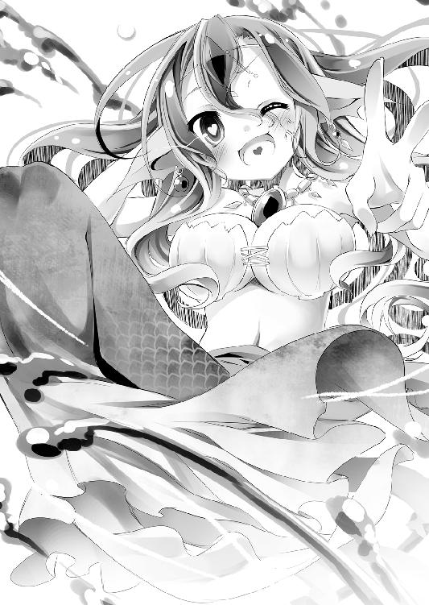
交通機関もエレベーターも、麻痺と復旧を繰り返す中やって来たと語るライラに。
一同は唖然と──何故、ここに海棲種の女王がいるのか、と。
いや──そんなことより──ッ!!
そう内心吼えて、いのは上空──神霊種の双六盤を仰いだ。
「──馬鹿な......ならば、あれは一体誰なのだ──────ッ!?」
■■■
それはゲーム内時間にして、十五分に満たぬ『宣誓』で始まった。
だが現実においてそれは──僅か〝三二分の一秒〟の内に終わった。
──幻想種アヴァント・ヘイム。
神霊種アルトシュと、天翼種を擁する最強最大の陣営と対峙して。
連合の放火が降り注ぐ中で──その声は、突如として響き渡った。
『かつて──我は、我が同胞達に、こう──問いかけた』
星に遍く轟くその声は、森精語でも地精語でも──否。何語でもなかった。
だが、不可解にも、その声を耳にした全てが、即座にその意味を諒解した。
『この大戦で、我々が生き延びられたのは〝何故か〟と』
それは幻想種が発する──〝万能言語〟だった。
『優れた身体能力もなく。魔法を扱うことも出来ない。長大な寿命などもありはしない。──そんな我々が、それでもこの大戦を生き延びられたのは──ならば〝何故か〟と』
だがそう語りかけるは、明らかにアヴァント・ヘイムではない──誰か。
ならば、幻想種ほどの存在の言葉を借りているは何者かと探り──、
『我は、同胞達に答えた......我々が〝弱者〟だったからだ、と』
──戦場は静まりかえった。
『力なき弱者故に、臆病に逃げまわる技を考え!! 智なき愚者故に、卑屈に生き残る術を学び!! 連綿と重ねた思考と学習に『知恵』を以て生き延びた!!......と、そう答えた』
天を地を粉と砕く兵器、魔法が飛び交っていた戦場が──。
この時には火の落ちた炉の如く冷え切り、静寂に声だけが響く中。
『......我は今、その言葉を──痛烈に恥じている』
誰もが、予覚した。予感した。直感した。
何かが起きると......何かが起きようとしていると──あるいは。
『所詮は愚者の妄想だった！ 想像力の欠如だった！ だがならば！ どうすればこれを想像出来た!? まさか──嗚呼そんなはずがないと思うだろう！ よもや単に──』
そう──あるいはと思考できた者を肯定するように、
『貴様らが無能すぎただけとは──想像を絶した』
────既に起きている、と。
それを証明するかのように、天地から境界線を奪う壮絶な光が迸った。
膨大な、あまりにも途方もない〝力〟の放出──あるいは解放。
精霊回廊接続神経を有する者なら、嫌でも理解せざるを得ないそれは。
──疑念の余地などあるはずもなかった。
戦神。最強の神。神霊種アルトシュ──その『神髄』消却の証だった。
何が起きたのか──否、何が起きているのか。
誰も把握出来ずにいる中、ただ、戦神を討ったと思しき者の声は続く。
『貴様らは愚者ではない！ 〝思慮〟がない。貴様らは弱者ではない！ 〝学習〟しない。では貴様らをなんと呼ぼうか、我は考えた......本能だけの獣さえ、己を賢いなどと聞くに堪えぬ妄言は吼えぬ。故に我は考えた......そして、そう。こう──呼ぶことにした』
──すなわち、
『哀れなまでに御し易き────〝家畜共〟よ』
そして再度──その声を合図に光が奔り、
『おつとめご苦労であった。名告りが遅れたな』
墜ちていくアヴァント・ヘイムの姿に──終に誰もが理解した。
最強の神霊種、天翼種、そして幻想種までをも屠った者──
己らを利用した者、己らが敵はその名を、死の宣告と共に証す。
『貴様らの絶滅を「宣誓」する我ら──人類種』
そして墜ち逝くアヴァント・ヘイムから、最後の言葉が。
──響き終わるよりはやく──
『さあ家畜共──踊れ。この掌で。抜け出せると夢に見て』
天を地を粉と砕く閃光の応酬が始まり──そして、
■■■
それはゲーム内時間にして、二時間に満たない出来事だった。
だがそれを見ていた者達には──
「............な──......っ」
『指令書』を投函した空、虚空に投影される『地図』を見る一同。
僅か〝四分の一秒〟にも満たない、その刹那の出来事だった。
アヴァント・ヘイムと対峙していた『連合』、その全てが一つ残らず。
〝全滅〟したという事実を、理解を以て観たのは二人だけだった。
森精種の『虚空第零加護』、龍精種の『崩哮』、妖精種の『洛園堕とし』。
地精種の『髄爆』、幻想種の『壊放融界』、妖魔種の『始祖主転生』等々......
対峙していた全種族、全ユニット、互いが互いの──『切り札』。
その集中運用に──全てが、ただ塵と化した。
あまりに強大な力の応酬、衝突に、アリエラ大陸の半分を道連れにして。
かくて〝死の嵐〟──『霊骸』が吹き荒れアヴァント・ヘイムの亡骸周辺。
すなわち空達とジブリールの『首都』は、全てを拒む天然の要塞と化した。
──予定通りに。空と白だけが、そう薄くほくそ笑み、それを眺めていた。
「マ、マスター......いったい──なにをしたのでございますかッ!?」
──同士討ちさせた。それくらいは分かっているだろう。
ならばジブリールが驚嘆の悲鳴で問うは──どうやったのか、だ。
連合──なるほど、森精種同盟と、地精種同盟の共同戦線。
確かに、元は敵対する二勢力である。
だが、使用即ち壊滅の戦力を互いが保有──相互確証破壊の成立下で。
同士討ちに持ち込むなら〝どちらかの先制攻撃〟が最低限必須になる。
ではどっちに、どうやって撃たせた？──と問うジブリールに、
「......俺らは何もしてない。やったのは......ジブリールだろ？」
だが空は、苦笑気味に答えるしかなかった。
「〝エロフ〟どもがオーク欲しさに戦争してたとこを──おまえが中断した」
そう──世界が二分される切っ掛けとなった、妖魔種と森精種の抗争。
そこから始まった大規模戦闘、泥沼の消耗戦は、
「......元々あいつら、本来の目的はジブリール──天翼種じゃねぇのさ」
そう、ジブリール──天翼種勢によって〝中断〟しただけだった。
その天翼種勢を滅ぼすまでの一時的な共闘関係──
「邪魔がなくなりゃ〝予定再開〟──あいつら互いこそが本来の敵だろ」
言って空は『地図』に指を滑らせ「そもそも」、と。
アヴァント・ヘイムの亡骸──『首都』周辺の光景を、虚空に投影する。
──〝死の嵐〟。黒灰の相互作用で『霊骸』が蒼く輝き渦巻く現象......らしい。
だが力の衝突で生じたそれは〝霊骸同士の融合反応〟で雷雲の如く轟いていた。
稲妻のように閃く光が、その都度、地殻を抉りとる様に──
......もう、呆れ果て感想も出ないという顔で、問う。
「......こんな地獄の最下層もドン退く景色作る火力を、温存してたんだ。出し惜しみせず〝集中運用〟されてたら──一応きくけど、天翼種って、これ以上のデタラメか？」
これ以上も以下も、ありゃしねーが、と内心付け加えて。
もはや意味不明だ、と上も下も判断出来ない空に、ジブリールは答える。
「......戦神と天翼種の総力──『神撃』で辛うじて拮抗が......限界かと」
──それでも拮抗は出来るのか。
この星がなぜ原形を留めていられるのか、いよいよ謎めいてきたが......。
ともあれ、天翼種勢さえも一瞬で滅びかねない火力だったわけだ。
では、そうせず〝計画運用〟し、天翼種を追い詰め、潰していたなら──
「つまり互いを窺って、天翼種を斃した──〝そのあと〟を考えてたわけだ」
──それは、空達の知る元の世界の戦史における常だ。
戦争なぞしている連中が考えるのは、今の戦争にどう勝つかではない。
今の戦争に勝った──その次の戦争で、どう勝つかをこそ考えるのだ。
そう──最強を斃したあとの。
〝次に斃されるもの〟の、選ぶお時間である。
「だがそこへ──唐突に、最強の神と、幻想種が討たれてみろ」
両陣営、余力を残して暫定敵消失。どちらも、こう──認識するだろう。
「自分を出し抜き天翼種勢を滅ぼした──『裏切り者』がいる」
「......で......それ、は......当然......自分ではない、よね......♪」
──どっちが先に撃ったか？
どっちでもいいのだ。というかどうでもいいのだ。そんなの誰でもいい。
最初からどっちも──裏切ると確信していた、共闘関係だったのだから。
ならばその裏切ると信じていた疑惑に、僅かな根拠を添えるだけでいい。
──たとえば。そう、空がしたように。
ジブリールの『地図』、ジブリールの『指令書』、ジブリールの『投書箱』で。
ジブリールのユニット二つ──《アヴァント・ヘイム》と《アルトシュ》に。
たった二つ──ユニットの自害と、ささやかな『伝言』を指示すればいい。
そう、要約すれば──
「──レディーファイ!! ......ってな♪」
とっとと殺戮戻りなマヌケ共、という意味の伝言を。
「......これ、元を正せば『くっ殺』プレイしたい──って戦争ですのよね」
ふと冷静になってしまったのか......この惨状を招いた、あまりにあまりな動機と。
その〝元凶〟を思いだしたのか、空と白に冷たい眼を向けるステフだが──
「ふ、それでこそ俺が知るエルフだ。どーもこの世界の森精種、お上品すぎだ。エルフなんぞゆーのは、汁だくアヘ顔で『のほぉお』とか言ってるほうがお似合──」
「......にぃ......薄い本、の......見過ぎ......しかも、けっこーディープ......」
白目のステフに、だが猛然と『指令書』を書く元凶──空と白は。
ヘラヘラと、「それに」と続ける。
「そんなん、ただの『口実』さ。ほ～れ、本番が始まるぜ？」
「......最大勢力......天翼種勢、不在......二大勢力、も......手負い......」
すると何が起こるかは──空達の『地図』が映していた。
「──さぁ。最後の一人になるか、誰もいなくなるまで──キッチリやりな」
そう、全種族が衝突を始める様に空は──最上の軽蔑を込めて笑った。
......と。
「......マ、マスター、ですがこれでは、『首都』を攻められれば一瞬で──」
ようやく茫然自失から立ち直ったジブリールの声に、ステフの肩も跳ねた。
「って、そうですわ!? 悟られたら詰むのにどうして名乗ったんですの!?」
そう──人類種の存在を気取られ、探られ。
首都を特定され、攻め込まれたら──その瞬間、終わりだ。
──空達とジブリールの『共通首都』は、自壊したのだ。
『天翼種』は既になく、主亡き今生産も不可──当然首都移転も出来ない。
そしてそれは──事実上、空達も同じである。
死の世界に成り果てた『首都』周辺は──『人類種』も近づくことは出来ず。
遠隔からユニット操作、首都移転しようにもジブリールを置いては行けない。
つまりこの『共通首都』──まったくのガラ空き。完全に無防備だ。
誰かが入って来ただけで『制圧』──『首都陥落』で死亡──だが、
「攻めてこねぇよ......誰もな」
ステフとジブリールを遮って、空は断じる。
「あいつらが何をし、どう動き、何処を通るか──全てわかってるから」
──そう、空と白にはわかるのだ。
誰が、何処を通り、何処で闘い、何処で待ち構え何処を攻撃するか──全て。
矢継ぎ早に渡される『指令書』を投函すべく、全速往復を続けるステフは、空の言葉に怪訝そうに首を傾げ──だが、ジブリールはそれに気づいたのか、目を剥いて喘いだ。
「マスター......そんな......まさか──!?」
空と白が操作しているとはいえ──不自然なまでに詳細な『地図』に。
「そ。まずはそれだ──頼もしいねぇ、プラムのご先祖さんがた♪」
「プラムさんの先祖......って!? 吸血種を引き込んだんですのっ!?」
ジブリールとステフの正気を疑う悲鳴に、だが空は笑って筆を滑らせる。
──『外交』出来る種族は少なく、まして協力取付など望むべくもない。
だが少なくとも──負け始めるまでは、確実に協力を得られる種族がいる。
人類種に気づいても、価値なんて絶無であるが故に、ガン無視する種族。
だが空達の情報があれば、それを最大限利用し、戦禍を避け漁夫の利を得る。
──森精種、地精種、どの血も選取り見取り吸い放題な──頼もしい種族が。
「吸血種が寄越す情報がありゃ、もう戦局は読めたようなもんだ。しかも──」
敵の情報は丸裸──もはや全てが掌の上にあるも同然だ。
その上で、〝こいつらがどう動くか〟、手に取るように予想できる。
簡単な話だ。何せ──
「連中の戦術教義も、戦い方も──ぜんぶ俺らが教えたモンだから♪」
そう──〝どう動くか〟を、こっちが教えてあげればいいのだ。
絶句するステフとジブリールに、空と白だけは不敵に笑う。
──人類種に、現代戦術理論など......無用の長物だ。
兵器・技術が伴わねば無価値、かつ〝付け焼き刃〟の理論など頼りにならない。
ましてやこんな怪物共、人類では──地球の全兵器を集めても戦いにならない。
「そも、あらゆる戦術は、〝同格の相手〟に使うのを前提としてる」
元の世界のどんな戦術理論もデタラメ相手を想定していない──ならば。
「──〝同格の連中〟に使わせてこそ、価値もあろうってもんだ」
個の性能に優れる森精種には、混合部隊編成での柔軟縦深防御を渡して。
機甲兵器に優れる地精種には、陸空での浸透戦術、電撃戦教義を渡して。
矛と盾、両方をどちらにも持たせておけば──こうなる、と。
「......そう、キッチリと泥沼になるように、な？」
一進一退──消耗戦に突入していく『地図』に、必然的に──
「ちょ、ソラ!? 獣人種の都市──あそこが襲われますわよッ!?」
空達が獣人種に造らせた都市へ、大量の森精種軍団が向かう様子に。
思わず投函往復する足を止めて、ステフが焦燥の悲鳴を上げた。
──連続する総力戦、消耗戦によって食料が不足し始めるのは自明。
いまや世界最大となった穀倉地帯を略奪せんとする行軍に──
「え？ ぁーうん。知ってたけど？」
「......だから......作らせた、ん......だし？」
空と白は、一瞥もせず『指令書』を書き、予言書を朗読するように。
「Ｂ．Ｔ－２年８月５日、食糧難深刻化、森精種は農産地確保に動く」
──否。『歴史書』を読み上げるように淡々と、呟く。
「龍精種四体を連れ七個混成師団で北部山岳から、農業都市制圧を図る」
「......同目的で、地精種......同山岳にて、これを迎撃......九日間、交戦」
『指令書』を書く手を止めないまま、空は思う。
──この世界。いや、大戦時の連中、か。
彼らは確かに凄まじい──現代地球も一蹴する技術や兵器を有する。
だが、その〝運用法〟に関しては......まったく、呆れるほど稚拙だ。
......まーそのデタラメ技術持ちをして、デタラメな相手が敵なのだ。
有効な戦術が確立し難く、人海・物量・火力戦に偏るのも無理はないだろう。
──だが、それでは困るのだ、と。空は小さくほくそ笑む。
ド素人の、論理もない力任せで振るう手こそ、最も読みにくい。
だから──あえて教えてあげるのだ。
「......地精種、山岳地で、機動力活かせず......投入戦力、四二・七％損失」
「そして森精種側は、五個師団を残して行軍再開、『戦術的勝利』を得て──」
──ド素人が──〝半端な知識〟を手にした時。
連中にとっての〝付け焼き刃〟を振るう時こそ。
──全てが掌の上だ。
「だが『戦略的敗北』で終わる────何故なら」
そう空と白が揃って不気味に口角をつり上げると、同時──
──『地図』上に、閃光が瞬いた。
北部山岳を映していた表示から、森精種の軍団が──忽然と。
周囲の地形──山岳ごとゴッソリと消失した様子に、空は邪悪に嗤う。
「......『虚空第零加護』が起爆。残った五個師団も、消滅するからだ」
ついでに、森精種領土から侵攻出来る陸路も──これで断たれる。
そう語る空にステフも、ジブリールさえも呆然として、
「マ──マス、ター......なぜ森精種に『虚空第零加護』が──ッ!?」
森精種の兵器が、森精種自身に使われた謎に、悲鳴を上げるが、
「そりゃー、俺らが使わせたからさ」
さらっと空が語った荒唐無稽な言葉に、ステフも、ジブリールまでもが凍り付く。
「森精種を〝エロフ〟にして味方に引き込むのは失敗した......けどさ」
だがなお淡々と──『指令書』を書く手を止めず、空は続ける。
「獣人種が森精種を、攫って来るまでは成功した──だろ？」
「......え、ええ......って！ そういえば〝その方法〟は聞いてない──ですわ!?」
──魔法は使わせない。抵抗もさせない状況を、作るという方法。
きわめて他愛なく。いとも容易く。息するほどイージーなその正体を。
「簡単だ。子持ちの森精種の前に、その子を連れて、〝こう〟言うだけだ！」
空は幼い純粋さを湛えた、お日さまのような笑顔で明かす。
「〝抵抗すれば子供を殺す♪〟──以上！ 傀儡のいっちょ上がり！」
「クズですわッ!!」
「まさかの直球ゥっ!?」
身体と一緒に凝縮された残忍さを明かした空に、即応の罵倒が突き刺さった。
「獣人種に食料提供してたの、このためだけだったんじゃないですわよねぇ!?」
「い、いやいや!? そんな悪手、俺と白がするわけねぇだろ、ほら!!」
ステフに胸ぐらを掴まれて空は、狼狽しながら『地図』を指す。
──陸路での侵攻ルートを断たれた森精種が、今度は空路から迫る様子が映る。
「ア、『虚空第零加護』を起爆させられた森精種を解放して！ 獣人種に何をさせられたのか──洗いざらい報告させりゃ──キッチリ報復が来るよう仕向けたぞっ!?」
「あ～ら～そうでしたの♥ 訂正しますわ──ドチクショウですわッ!!」
だが──怒り狂うステフを無視するように、
「......でも、今度は......地精種、が......勝つ」
白がそう呟くと同時──今度は迫っていた森精種軍団が、消滅した。
......山岳地──『極地戦』では、地精種の機動戦は本領を発揮しない。
だが『空戦』は地精種──空中戦艦を有する連中の、独壇場である。
空飛ぶ戦艦──海戦理論を空戦で使う戦術教義を、ありったけ流したのだから。
「世界有数の食料産地、しかも一世紀掛かったんだ。簡単に落とさせるかよ」
呆然とするステフから解放された空が、机に戻りながら続ける。
「もうしばらく、食料を巡って潰し合ってて貰うさ──言ったろ？」
「......食を制す、は......世を制す......っ」
そうして二人は獰猛に──だがどこまでも楽しそうに続け。
「ま～だまだ死ぬぞぉ～......人も、人じゃないもんも、大量に死ぬぞぉ」
「......ころしあえー......♪」
「人類種に構ってる余裕が出るまで勝ち抜けるのは、さて誰かなぁ～？」
「......ぐぅの音も出ない鬼畜の所業ですわ......」
ステフはもはやツッコむ気力もなくなったのか、諦めて投函作業に戻った。
────...............
吸血種を利用して得た、膨大かつ精密な情報。
一八四年間、全種族の動向を観察し、白が数学的に『予測』した戦局と動線を。
一八四年間、仕込み尽くした謀略で、空がペテンで『確定事項』へ変じていく。
そうして何もかもを、その小さな手で転がす空と白の姿に──
己がマスター達の姿に。
だがその頬に、額に浮かぶ汗に、ジブリールは──密かに思う。
いくら空と白でも......『大戦』の、全てを読み切るなど、〝不可能〟だ、と。
巨人種や、月詠種──どう動くか判然としない種族の介入は想定仕切れない。
ましてどれ程戦略を編み、計算を尽くそうと、予測不能な事態は必ず生じる。
それらをさえ織り込んだだろう。予測不能性さえ予測しただろう──だが。
──致命的な読み違いが、一つでもあれば。
──致命的な指示ミスが、一つでもあれば。
たったそれだけで、即座に『首都』を特定され、問答無用の──『死』が待つ。
それらを誰より承知しているだろう二人は、だが、ただ獰猛に──嗤う。
「ハッハーっ!! これ負け抜けられたら──脳汁ヤベぇなぁ!?」
「......しろ......もぉ......いま、ヤバい......っ」
こんな壮絶なムリゲー、かつてあっただろうか、と。
間違いなく過去最高難易度のゲーム、と楽しげに笑う二人に──
だがジブリールは、不安げに顔を伏せ、日記を抱く手を震わせる。
────............
「......嗚呼......世界が、滅んでいきますわ」
そして忙しなく投函往復を続けるステフが、ぽつりと零す。
空中に投影されているのは、死に逝く星、潰え逝く駒、滅び行く世界──だが、
「ああ滅びる。こんなカビくせぇ『定石』──滅んだままにしとこうぜ」
空はそう言い捨てて、『指令書』を綴る手を止め、『地図』を見る。
......死に逝く星──あれが現実だった時代があった。
......潰え逝く駒──あれが人命だった時代があった。
脅して、拐かして、殺して、切り捨てて利用して騙して裏切って嬲って──。
空はあらゆる手を使う。汚い手も、ペテンも、バレなければ不正さえ──だが。
「......手段や犠牲を一切問わないなんて──ンなことは、誰だって出来んだよ」
そう、簡単なのだ。世界さえ問わず皆延々やって来たのがその証拠だ。
そうして犠牲を積み上げたその先に、求めるのは──いったいなんだ？
自分か自分以外か、誰もが滅びるか──そんな結末をそうまで求める？
その意味が空にはわからないし──きっと、永遠にわかる気もしない......、
「〝この世界〟は──ゲームだ。ゲームになったんだよ」
誰だって出来るマヌケ共の手法を──かつて、鼻で嗤った者がいた。
たった一つの犠牲をさえ拒んだ者が──空はジブリールを見やって、笑う。
「──誰も死なないし、死なせない。ジブリールも、俺らも、誰一人──」
世界がどう変わったか──？
「そんな我儘が、通る世界──通せるかも知れない世界に変わったんだよ」
ならばこんな旧い『定石』、引導を渡してやるのがせめてもの礼だ。
──なあ......どっかの誰かさんよ......
■■■
──七〇時間経過。
三〇八マス目の地に腰を下ろして、いづなはそれを眺める。
いくつもの種が滅び、世界が、星が、取り返しもつかぬまでに壊されていく。
神霊種が映す空達──追い詰められ、その顔にも焦りが見え始めてきたが──
それらを眺めるいづなには、もう不安などなく──ただ思い出していた。
テトが自分に語った──語られることのなかった、旧い物語を。
かつての大戦を終わらせた、空と白に、ちょっとだけ似た二人。
途方もない偉業を成し遂げたその二人に、だがその姉は言った。
──『なんでこんなにも、悔しいの、かなぁ......っ』と。
そんな問いに答えるように、『星杯』を手にしたテトは言った。
──『......まだ、ゲームが終わってないから、だよ』と。
遠い遠い昔、あの日『星杯』を手に、『十の盟約』を掲げた日。
世界を創り変えたというテトは──だが、続けてこう言った。
いづなが何度、記憶を探っても、確かに、こう言ったのだ。
──『さぁ──ゲームを〝続けよう〟』──と。
遠い遠い昔、ゲームは──はじまってなんかなかったのだ。
とっくにはじまっていて──ただ、続いていただけだった。
語られなかった神話が、やがて語られる神話に続くように。
〝過去〟が求め、ついぞ叶わず、〝未来〟へと──連綿と継がれていく......。
延々と無限に重ねた敗北を、意義ある敗北に変え帳消しにする──一勝。
今はまだ誰も──あの二人さえも、まだ手にしていない──たった一勝。
──〝誰も犠牲にならない一勝〟へと、終に至るまで。
「......テト、いづなぁ、おめぇを嘘吐きつった、です。......ゆるせ、です」
長い耳を垂らし頭を垂れ、ぺこっと謝りいづなは思う。
空と白は、あの二人と似ているけど──やはり、ちょっとだけだ。
空と白は、あの二人ほど──〝強くない〟──だから安心できる。
きっと、あのあの二人はあの二人と、同じミスはしない──と。
【........................】
そしていづなは、神霊種の無機質で、無感動な顔が、僅かに揺れたのを見て。
「......すまねぇ、です。いづなぁ頭よくねぇから......答えてやれねぇ、です」
──『信じるとはなんなりや』。
いづなには、どう答えればいいか、どうゴールすればいいか──やはりわからない。
だが、それでも直感は、断じる──いづなは、間違っていなかった、と。
「おめぇが死ぬなら勝たねぇ、です！ んなのぜってーちげぇって信じん、です！」
──沈黙だけが答えて、いづなは再度、投影される光景を見やる。
世界が滅びて行く様を──〝だからそれでいい〟、といづなは笑う。
だって、あれは──彼らが、壊してくれた世界だったはずだから......
■■■
加速する思考の中、かつての少年は思い出す。
──世界の為に、死ななければならないとしたら。
果たして自分はどうするだろうか？ ──と、そう考えた日を。
それはあの日、『一人』で勝っても意味がない、と嘲笑ったものだった。
だが『二人』でもまだ足りない──ならば『すべて』ごと勝つ方法は。
〝この世界〟にはないのかも知れないと、半ば諦めていた〝方法〟は──
──だが、〝その世界〟には、あったのだ。
あの日、十のルールを聞き、巨大なチェス駒が彼方に望める地に立って。
かつての少年──黒髪黒目の青年は妹と手を繋いで、顔をほころばせた。
──ついに見つけた、と。
そこには、あったのだ──『十の盟約』が。
なにをしようと犠牲が伴う『定石』の、その果てへ至る『布石』が。
──随分とまた、ご都合主義な世界もあったものだ、と。
喜ぶ一方で苦笑したそれは、だが──ただのご都合主義では、なかった。
ご都合主義ではあれ、己が逃げ出したものに挑み、その全てと引き替えにして。
誰かがようやく、手にした──そんなご都合主義だと......まさか信じられるか？
盟約と、大戦が終わった事実がなければ、鼻で嗤い一笑に付したろう話だ。
そんな途方もない人類に恥じ入る青年は──だが今は、こうも思う。
そいつは......──いや。
〝あんた〟さ。
──本当に、それで良かったのか？
俺には......どうしてもそうは思えないんだ............
───............
──伝った衝撃が空の加速した思考を断った。
投影される『地図』が語るは──『Ｂ．Ｔ．－５３年』の表記。
すなわち、七二時間経過まで──あと、二八分という事実と。
至近を穿った光が、地殻を成層圏まで上昇、揮発させたこと──そして。
──『首都』を覆う〝死の嵐〟が吹かれ──剥がされたことだった。
「ねえ！ どうするんですのコレどうなってるんですのぉッ!?」
今の衝撃に足をとられ転んだのか、涙目で叫ぶステフに、
「どうもこうもねぇよ！ 想定通りの想定外が重なってんだよッ！」
「............むぅ......自信、あった......のに......っ」
叫び返した空と白は、猛然と筆を滑らせながら──『地図』を睨む。
一五時間前まで、世界を明瞭に暴き、戦況を示していた『地図』は、だが。
ほぼ何も映さぬ黒塗りに戻ったそれが──何より雄弁に戦況を示していた。
「ま、端っからムリゲーは承知！ その上で楽しんでこそ、だよなぁ──!!」
「......ムリゲー、に......何処までやれる、か......チャレンジ、すぴり～っつ」
空と白は焦燥を抑えこみ、揃って無理矢理に笑って筆を滑らせ続ける。
──情報不足の種族は動向を読み切れない、わかっていたことだった。
だが──よりによって、と空は、密かに歯噛みする。
『月詠種』──大戦時、既に朱い月に居たという、最も情報がない連中の介入。
まるで読めないその揺らぎは、戦略の軸だった森精種と地精種、両種の滅亡を招き。
月が落ちて開いた天に、吸血種も──『斥候』も激動した天地に潰され、壊滅した。
かくて、ゲーム開始時の如く黒塗りに戻った地図が、いまだ映すのは。
今なお消えつつある──残り僅かな『人類種』と『都市』の様子。
そして何かを探すように、あるいは追い込むように。
〝死の嵐〟を剥がされた空達の『首都』へ包囲を狭める──僅かな敵のみ。
動かせるユニットも、間接的に動いて貰える種族さえ皆無。
もはや、出来ることなど、ほとんどなくなって来ている中、
「......マスター。もう十分でございます。どうか『御命令』を──」
ジブリールが顔を伏せ、呟く──だがそれを遮って、空と白は即答する。
「うっせぇ♪」
「......ジブリール、おすわり♥」
強制的に正座させられたジブリールに──続いて、
「のひょおおぉお!? 今ピカッて！ ちょっと!! ピカッてえ!?」
もはや音さえ──可聴域外なのか──聞き取れない程の至近弾。
光と衝撃、そして『投書箱』を往復するステフだけが奔る。
「......これではマスター達──おまけにドラちゃんまで死にます......っ」
「ここに至ってまだおまけ扱いって、私そろそろガチ泣きしますわよ!?」
唯一、事情も分からず、空達とジブリールに付き合い、命を張って走るステフ。
その底なしの慈愛の心、人のよさに空と白さえ感動に震えたが──
「〝サイコロを寄越して死ね〟とお命じください──ッ!!」
ジブリールの、涙声の悲鳴が広間を震わせた。
その声はステフを凍り付かせ、さらに続いた言葉はその耳を疑わせた。
「......怖い、のでございます......っ もう......お許し、ください......ッ」
震えて懇願するように、ジブリールは日記を抱いて床を濡らす。
その姿に、空と白は応えない。ステフもまた絶句するしかなく。
──シン、と......静寂だけが応えて......そして。
────────ズン、と。
長い沈黙を破ったのは──再度奔った、閃光と衝撃だった。
迫る『死』を実感させる衝撃に、ステフの肩が跳ねる中、ぽつぽつと、
「......私などのために、かくも危うい賭けに出られていると承知で......申し上げます」
そう、涙を拭いながら、何とか取り繕うように、
「不出来な下僕に、過ぎた光栄でございます......立場をお考えください」
とジブリールはその胸元、サイコロを九個差し出して、言う。
「......天翼種に、死への恐怖はございません。どうか『御命令』を......」
──サイコロを渡せば、記憶がなくなり──自害出来ない。
よって空達の──所有物であるジブリールには強制である命令が必要になるが。
それだけで、このゲームは──ジブリールの身勝手によるデスゲームは終わる。
そう満足そうに語って、笑みを浮かべ──
「マスター達が死ぬ必要はないはずでございます。どうか私一人で済ま──」
「るっせぇなぁッ!? いい加減黙れよ気が散るだろッ!!」
ジブリールの言葉を断ち切る空の声は、破壊の衝撃より鋭く広間を震わせた。
そして、ようやく筆を止めて振り返った──空と白のその形相に。
──煮え滾る怒りに揺らめく瞳に、ステフもジブリールも息を呑んだ。
だがそれも一瞬、すぐに『指令書』を書きに戻って──吼え続ける。
「恐いから死なせて!? 死ぬなんて恐くないで～すってクッソうるせぇよ!! こちとら死ぬの恐くて小便どころか漏らしちゃヤベぇモンまで漏れそうな勢いだっつのによッ!!」
「......にぃっ......、最後に、トイレ......行ったの......いつ......!?」
──あ、どうりで漏れそうなわけだチクショウめ！ と内心吼えて。
空はステフに、叩きつけるように新たな『指令書』を渡して、
「うだうだうだうだと!! よーするにカッコつけてぇだけだろーがァッ!!」
そうジブリールを、一刀両断にする。
──記憶を失うのが恐いから死にたい。──〝でもでも〟？
迷惑かけたくない。勝ちたい。ダメなら死にたい。──〝だってだって〟？
私が悪いんです。マスターは悪くないんです。──〝でもでもだってだって〟。
そうするしかないんです。私の分までせめて生きてください──って
「何様になったと勘違いしてんだジブリール!? テメェのマスターは誰だ!?」
「......ヒキコモリ、で......ニートゲーマーのっ 所有、物......なら......っ！」
「ちゃんと！ それらしく!! きっちり、しっかり──ダサくしてろよッ」
そしてステフが戸惑いつつも『指令書』を投函すると──同時。
──人類種の都市が一つ──文字通りに、消滅した。
わざと暴露し、注意を集めさせたそれが、表示ごと『地図』から消え去る中。
「死ぬのもイヤ!! 死なれるのもイヤ!! 記憶失うのも失わせるのもイヤ!! 〝だから助けてください〟って!! 失敗したら皆死ぬけど──〝それでもイヤなんだよ〟って!!」
指令を書き続ける空と白の──吼えながらも震える、その声に──
「ちったー御主人共を見習って、ダサく泣き喚いときゃいいんだよッ!!」
「─────────っっっ」
そして目尻に滲む涙を堪えるようにジブリールの顔が歪む。
────七一時間四五分。
「死ぬのが一人で済む!? 一も三も、億も兆も同じだ知ったことか」
「......で、ですがっ！ このまま『首都』が落ちてしまったら──ッ」
空と白もステフも、いや最悪──神霊種戦に参加した全員までも巻き添えになる。
「そそ、そんときゃ！ そんときですしッ!?」
「......ぉ、落ちたり......しない、し......っ？」
だがジブリールの訴えに、空は裏声で、白は涙目で──疑問形で叫んで答える。
首都を除き残り二つだった都市、その一つを丸ごと囮に使って──たった数分。
ゲーム内時間で五〇日も稼げなかった時間を経て、再度迫る敵影に。
空と白は、なおも手を止めず──ただ思う。
────七一時間四九分。
......根拠など、ありはしない。
ただの状況推測、そこに更に推測を重ねただけ──だが。
空と白には、不思議と何故か──まるで見てきたように、確信出来た。
......こんな『大戦』を、ゲームと決めつけた、途方もない馬鹿がいた。
戦火に灼けて、絶望に沈む『大戦』を──犠牲ゼロで変えてみせると。
そんな『定石』の向こう側を──愚かにも程があるような夢を。
世界を相手にして挑んで、足掻いて、藻掻いて──それでも届かずに。
──次は、と......次こそは、と。
死ぬ瞬間まで言い続けた──〝クソカッケェ奴〟がいたのだろう。
────だけど──ッ！
「そんな〝強く〟なれるかよ──カッコよく生きられてたまるかよッ!!」
叫んだ空の『指令書』で──光に穿たれた都市が、また一つ消失する。
だが今度は──〝消失させた『敵』まで道連れ〟にしての──消失。
滅びた地精種から鹵獲した『髄爆』に、『敵』自身の攻撃で着火させたそれは。
もはや大陸と呼ぶべくもない地を崩し、残る都市は一つ、『人類種』一七七体。
それでも──と、空は、白は、揃ってなおも──思う。
────七一時間五一分。
──そのカッケェ神ゲーマー様は──〝失敗〟したのだ。
大戦を終わらせ、『十の盟約』のきっかけを作った、畏れ多き偉人さまは！
だが嗚呼、何度だって言ってやる──〝失敗〟したんだよ──ッ
「そうな!? カッコよく行くなら、ここはジブリールに勝つとこだよな!?」
白が渡す数式を一瞥、阿吽の呼吸で理解して筆を奔らせながら、
「で！ 『ジブリール、おまえの犠牲無駄にはせん』って男泣きして──自分に嘘吐きゃカッケェな!? 男前過ぎて掘られてもいいぜケツ差し出すついでだ一つ教えてくれや!?」
そう叫んで空は、そんなカッコ良すぎる主人公達すべてに問うように──叫ぶ。
「──ンなカッコつけて、なにが残んだよ、言って見ろッ!?」
涙目の白と、怯えながら走るステフ、俯くジブリールの未来──？
「おまえは爽やかに死に逃げ！ 散々泣く連中と!! おまえの分まで業を背負って生きる童貞が残る──って、なんッだそりゃ!? 意味がわかんな過ぎて熱出すぞッ!?」
──ああ、確かに。それ以外も残ったさ。
次こそ、誰も犠牲にせず済む──ゲームで全て決する世界。
そいつは確かに『十の盟約』という──『布石』を残した。
凄まじいとも。そんなこと、俺たちにはまるで出来る気がしない。だが──
──〝当のご本人はそれをどう思った〟──ッ!?
その神ゲーマーさまは、そうまでして──いったい何がしたかった!?
大戦を終わらせたかった!? 世界を救いたかった!? 絶対──違う!!
そんな荒唐無稽な夢を見て、本当にやっちまう天文学級の大馬鹿が！
人類屈指の、誇り高き大馬鹿がそんな〝お利口さん〟な理由で動いた？
──そんなはずがないんだよ──ッッ!!
「こちとら彼女いない歴＝年齢絶賛更新中の、友達の定義を真顔で問える嘘だけが特技のヒキニートゲーマー様だぞ！ ヒトは変われるイキモノです、って御高説垂れられよーがミジンコがクジラに変わりゃしねぇよ限度があんだろ限度がぁッ!! ──だったら!!」
恐怖を紛らわせようと吼え続ける口を止め──深呼吸を一つ。
空は小さく、落ち着いた声で、言った。
「......らしく生こうぜ......？」
────。
「全てを得るか全てを失うか。〝悪いな〟とも言わねぇ」
そう告げる声は決然として──だが震えていた。
白と固く繋がれた手は──だが足は床を細かく打っていた。
──それでこそ、自分達だ、と兄妹は目配せして笑う。
死ぬのもイヤ死なれるのもイヤ──後悔するのもイヤ。
イヤイヤイヤ、と。全てを拒んでここまで来た、二人の小さな子供は、
「万一──ま～、あり得ねぇが。くたばる時は全員道連れだ♪」
「......だか、ら......諦め、て......覚悟決める、の。せめて......」
そう駄々っ子も見れば我慢を覚える我儘を、清々しい程ダサく言い放つ。
「最後まで楽しもうぜ!! こんなスリリングなゲームも──そうねぇぞッ!?」
空の笑いに応えるように、また一つ都市が『敵』を巻き添えに消滅する。
自国領土内での核使用──通称『ベルカ式国防術』を使って──いや。
もはやただの、死なば諸共の『自爆』に過ぎない手さえも重ねて──
●──残すは五分四二秒。
だがなおも俯くジブリールの呟きを、ステフだけが聞き取った。
「......それ、でも......私の、せいで......」
「ん～......いえ......あのお二人が、頭おかしいだけですわよ......たぶん」
視線を上げたジブリールは、だがそう言うステフの──笑顔を見た。
「誰か犠牲にするなら、〝誰かと言わず全員死ね〟。頭抱える暴論ですけど」
呆れた笑顔、だが爽やかにそう言ってステフは、また走り出す。
「──だから誰も犠牲にしない！ 是が非でも──徹したい暴論ですわ!!」
そう受け取った『指令書』を投函して──
●──七一時間五八分。
もはや『地図』を見るまでもなく『敵』が迫るのが見えた。
それらが一歩『首都』に踏み込んだ瞬間、誰もが終わる確信に襲われて。
なお猛然と打開策を探し続ける空と白だったが──その手は止まっていた。
──残りユニット一九。都市は『首都』のみ。打てる手など皆無。
まして〝効果的な手〟など──一つとして思いつかなかった。
それでも──と穴を探して、際限なく加速する二人の思考の中、ふいに。
空は、隣で苦渋に顔を歪め、頭を掻きむしる妹の姿に──唐突に。
──『大戦』を終わらせたという人間が、何をしたかったのか。
何故だか──それが他人とは思えない程に、わかった気がした。
......そいつはきっと──いや。やはり世界など、どうでもよかった。
ただ──〝気に入らなかった〟......それだけだったのだ。
ただ──〝好きに生きることを選んだ〟......それだけだったのだ。
それが『大戦の終結』という壮大な──〝手段〟に至ったのは──
「...........................ッッッ」
焦燥と不安に染まり、爪を噛む妹の──白の顔に、空は思う。
そいつは、ただ単に──笑顔が見たかった、だけだったのだ。
世界など知るかと全てから逃げ出しては──笑ってはくれない──
──そんな......誰か──
の──......
そう際限なく。
加速し続けていく思考の中。
──ふ......と、
──『......また、失敗するのか？』
そう問いかける誰かの声は──だが、正面から響いた気がして。
揃って顔を上げた空と白は、そこにいたものに、妙に冷静に苦笑をもらした。
加速しすぎた思考、情報が、連結して抽象的映像──錯覚を見せている、と。
影のように昏い二つの輪郭──顔も判然としない......離れて立つそれらに、
──「......ああ、失敗するかもな」
空はそう、答えて──
「だがあんたと同じ失敗だけはしねぇ────ッッ!!」
「......おおき、なっ ......お世、話──なの......っ!!」
そう空と白は、気づかず放していた手を──強く繋ぎ直す。
そして驚愕した一同を無視し──『地図』に一瞬映った姿に。
空と白は獰猛に笑って──〝二人同時一枚の『指令書』〟に筆を滑らせた。
一瞬移った姿。空には全く動きが読めない──『機凱種』を、白が〝指定〟し。
だがそれを、どうするべきかは全く分からない──白に代わり空が〝指示〟する。
かくて空と白、どちらも──〝全容はわからない〟『指令書』を。
殴り書くように書いた二人は揃って──ステフに放る。
●────七一時五九分五九秒。
限界まで加速した思考に、無色無音になった視界は、首都の外
──毎秒八時間──三万倍速に等しいそれさえ、視認出来るように思わせた。
首都に迫る、一際巨大な龍精種と、それが引き連れる──有象無象の大群。
その口がひとたび開けば、刹那の内に首都に全てが雪崩れ込む確信に──
──空の脳裏に、無数のフラッシュバックが駆けた。
それは──思い出したくない、だが忘れることも許されない記憶。
だが──強く握った手が握り返される感触──白の笑みに、思う。
紅く染まったこの手を握ってくれた白に──それでも何も出来なかった。
〝あの世界〟に背を向けて辿り着いた──ここまでお膳立てされた世界で。
──今度こそ。ここでならと。これで無理ならもう何も──とそう求めたもの。
二人が──その全てを込めた『指令書』が、ステフによって投函されると、
同時──
「ハッハァ────ッ!! 見せてあげよう、ラピュタの雷を──ッ」
「......なぎはらえぇ......──っ!!」
アヴァント・ヘイムの亡骸──『首都』に、空と白、それぞれが。
一度は『言ってみたいセリフ』五位、八位を楽しそうに叫ぶ声と。
──続いて、それを掻き消す、寸分違わぬ──〝直撃〟。
衛星軌道上からの砲撃さながらに、直上から『首都』を突き穿つ衝撃が轟いた。
天地に悲鳴をあげさせ、直角に──星を貫き徹す、途方もない光。
迫っていた大群も、龍精種の『崩哮』さえも全てを『無』に帰して。
断絶していなければ〝プレイヤーベース〟すら粒子も残らなかっただろうそれが──。
「......ソ、ソラ、シロ！ ──いったいなにを指示したんですのぉッ!?」
星が終に崩れ光に包まれる中〝いったい何なのか〟を問うステフに。
スマホで時刻を確認していた空と白は、悪びれもせず──答える。
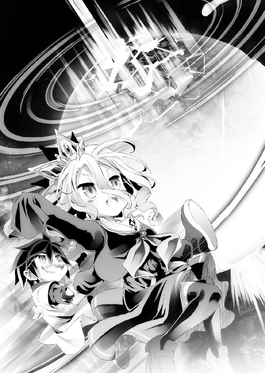
「......わかんない......けど、機凱種なら......こうする、って......思った」
「白がそう思うならそうなんだろ。だから俺もわかんねぇがとりあえず」
と空は『人類種』に、命じたことを──明かす。
「機凱種に首都の座標を教えて──〝終わらせてみろ〟、つってみた♪」
ようするに──『なんとなく』だ、と。
言い放った空と白に、だが応えたのは──ピキッ、という音と。
視界に奔ったヒビに──星を穿った力さえ比ではない衝撃だった。
●────七二時間。
──そして、空と白は。
あやふやな輪郭に、再度眼を向け、笑って見せる。
「約束したんだよ......二度と、この手を放さないし──」
「......後悔して、死ぬのも......もう......いや、って......」
──俺らには出来ないことを、あんたらがやったなら、安心しろ。
──次は、あんたらに出来なかったこと──引き受けるから、と。
そう語る二人の眼に──影達が、僅かに笑ったのは。
きっと、気のせいだっただろう──......
■■■
──星を丸ごと一つ圧縮していた空間が、解放される。
ねじ曲げられていた物理法則が、己を思いだそうとするかのように。
重力も時も止まったような白い空間を、ただ四人が漂っていた。
そのうちの二人──手を繋いで笑う、空と白の呟きを聞いて。
「............」
ジブリールは、何と言うべきか思案し──何も思い浮かばなかった。
己が主たちに、これほどのことを強いた。万死をもっても足りない不敬──否。
そう思考することさえ最悪の侮辱だと理解した今......謝罪さえも、論外だった。
自己嫌悪、申し訳なさ、至らなさ、思慮の浅さ──。
彼らに会うまでは、単語としてしか知らなかった感情が荒れ狂う中で。
ならば──自分はいったい、どんな顔をすればいいのだろう──と。
「......はぁぁぁぁああ......まぁ、うん......」
空は、魂まで吐き出すようなため息を吐いた。
「ん......ま。なかなか楽しめた。及第点ってとこかなジブリールくん」
そう、苦虫を噛みつぶしたような無理した笑顔で。
「......負けるしかないゲームに持ち込まれた。その時点で──完敗だ」
「............楽しかっ、た......でも、次は......しろ達が、完勝する......」
白もまた、責める様子も、咎める様子も微塵もなく。
「──『 』に初めて黒星をつけたのは見事だ──だが覚悟しろよ」
ただただ──そう......、
「百回や千回──一万回ボロクソに負かす程度で済ますと思うなよ？」
どこまでも、負けて悔しいとしか書かれていない顔で。
これ以上ないまでに強がって、負け惜しみを零すマスター二人の姿に。
だがジブリールは──心底、意味がわからず......呆然とした。
──『完敗』？ ──『黒星』？
いったい──お二人は、何を言われているのだろう、と。
最期の......そして最悪のものになるはずだったゲーム。
最期にもさせず、最高のゲームに変えて見せた、その上で──まだ。
こんな自分に──またやろう、と。お二人は口にしているのか、と。
──『勝利なんて及びもつかない敗北』を手にしてなお。
それでも負けは負けだと、悔しがる様子にジブリールは、
──ようやく。もっと早く、口にするべきだった言葉が。
最初に浮かべるべきだった表情が、わかった気がして──
「......ありがとうございます、マスター、勿体なきお言葉で......っ」
ただこみ上げる想いのままに、そう呟き──思い出す。
──『楽しんで貰えたらオヒネリ、〝サイコロ二つ〟くれよな♪』
課題不達成でサイコロを失えば、三人中二人は消えるから──と。
そう言ったのだろうマスターに、ジブリールは。
オヒネリなど、とんでもない、と胸元のサイコロを掴んで──
────【七二時間経過──課題不達成と見做す】
その声の意味は、もう......理解出来ずに聞いた............
■■■
────？
「......はて？ ここは何処でございましょう」
ふと頬を撫でた風に、ジブリールはきょとんと首を傾げて呟いた。
気がつけば、風で波のように揺れる草原に──独り佇んでいた。
胸元には白い立方体一つ、周囲は螺旋を描いて渦巻く見慣れぬ大地があった。
ここが何処か。何故ここにいるのか。何も分からずに──
「......おや？」
立とうとし、正座していた膝上に、ちょこんと置かれた本に気づいた。
──『記憶がなくなる度三二〇五頁を読むこと』と表紙に書かれ──ていた本。
雑な斜線で訂正された、その下には、こう......書かれていた。
──『あなたのようなおバカさま、裏表紙で十分でございます』、と。
......ふむ、誰が書いたか特定して殺そう♥
熟考することゼロ秒。即断し裏返したそこには──
「......これは......人類語、でございますか？ またマイナーな言語で......」
明らかに自分の筆跡ではない、見慣れない言語でただ二言。
──『心配すんな。待ってろ』
──『ジブリール、おすわり♥』
と、意味不明な文章が、殴り書いたように綴られていた。
誰が書いたか、どういう意味か、なにもわからず──ただ。
────つぅ、と。
ジブリールは、頬を伝ったなにかに、眼を丸くする。
「......わっつ!? こ、これはなんでございましょうっ!?」
驚きのあまり思わずそう叫ぶが──何なのかは、知っていた。
それはたしか──『涙』、と呼ばれているものだったはずだ。
一部生物の眼球保護液。更に一部の生物は感情発露に際して流す、らしい。
天翼種に眼球保護など不要、ましてそういった感情もないはず──
「......ふむ......ん～、まあ、よくわかりませんが......」
だったが──。
「なにやら......とても楽しいことが、あったような気が致しますね♥」
──不快ではないから、とりあえずよしとしておこう、と。
ジブリールはその自覚もなく、大粒の涙をこぼして大笑いしていた。
状況は、なにも、まったくわからないままだが。
誰のものかも知れない、その言葉に従ったほうが良さそうだ、と。
なにも心配せず。お行儀良くおすわりで待っていれば......きっと。
──もっともっと、楽しいことが待っている、と。
根拠なく、ジブリールは本を愛おしそうに抱き、詠うように──笑った。
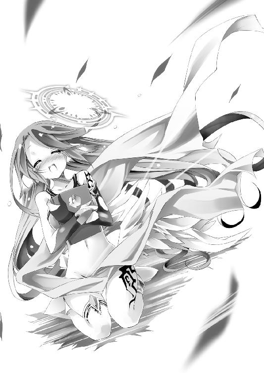
■■■
そして──三〇八マス目では。
数羽の可愛らしい小鳥たちを、頭に、肩に留まらせた幼女がいた。
大きな尾をゆったり揺らし、鳥の囀りを響かせる、平和な姿......だが。
「......よく来やがった、です」
同じく七二時間──【課題不達成】でサイコロ一つになったいづなは。
更に縮んだ身でありながら、一瞬で鳥達を捕らえ、涎を垂らして告げる。
──『今日のメシは、お前らだ』......と──。
「もごもぐ......ムカつく、です......さっさとメシ食って寝るにかぎん、ですっ」
そう、不機嫌極まる顔で、いづなは捕獲した餌を頬張る。
先ほどまで偉そうに佇んでいた神霊種の姿は──もう、ない。
いなくなる直前──再度、なにやら複雑な顔をしていたのは気になったが──
............ぐぅぅ......
「......どーせ上がれねぇん、です！ ならもーガマンしねぇ、です！」
鳥だけでは不服を主張する腹に──いづなは鞄を開き食料を取り出す。
どのみちサイコロは残り一つ......もう進むことも出来なくなったのだ。
ましてゴールすれば神霊種が死ぬなら──どのみち『詰み』である。
ならば──ここまでの鬱憤を晴らすように、猛然と食料を平らげて行く。
......ぶっちゃけ、ヤケ食いである。
いづなには、やはり小難しいことはわからない。
この【課題】が並ぶ意味も、犠牲を選べばゴール出来る理由も。
それを無視してゴールしても──あの神霊種を死なせてしまうことも。
どうすればいいのか......いづなにはやはり、わからない──だが。
「あいつらぁ、ぜってーわかってやがん、です！ ですっ！ ですッッッ!!」
嬉しい反面、たまらなく悔しく、いづなは地に寝そべりバタバタとして叫ぶ。
──『いづな──負けねぇぞ、です......？』と、確認した時。
──『勝たせるなんて期待すんなよ』、『勝つのしろたちなの』と答えた二人。
誰が勝ってもいいが、自分達が勝つ──という意味ではなかった。
いづなが勝とうとしても、おそらく勝てないのだ。
誰かの犠牲を受け入れなければ、勝てないようになっていたのだ。
──空と白以外は。
一つの犠牲も出さず、誰も死なせず、ゴールする。
ジブリールも例外ではないと、自分達も命を落としかねない綱渡りをした二人は。
わかっているのだ──いづなにはわからない、このゲームの......勝ち方が。
「........................ムカつく、です」
もう一度言う。だって、そうだろう。要するに──
「ぜんぶ、あいつらの計画どーりってことじゃねぇか、です♪」
ムカつく──だが、いっそ楽しく思えて来て、いづなは笑って思う。
──空と白に負けても、不思議と嫌な気分にはならない。
それはきっと──誰も死なないし、悲しまず済むからだ、と。
案外、全ての答えは──ただ、それだけのことかもしれない。
だってこの世界は──ただの、ゲームなのだから。
「ぅぅうう！ だったらいづなも！ 空と白としょーぶすりゃよかった、です！」
......損した。心底損した。
「う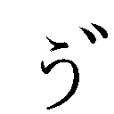ぅぅぁ腹ぁいっぱい、です。寝るッ！ ですッ！」
まんまと負かされた自分は、ヤケ食いの次は不貞寝するまでである。
言うや否や、いづなは尻尾を抱え込んで、即睡眠の体勢に入り──
「............？」
微睡みゆく意識の中、唐突に......いづなは気づいた。
空と白は、リクとシュヴィとちょっとしか似ていない、その理由を。
空は、他人を欺く──だが。
──リクは、自分を欺いた──。
自分自身さえ騙して、勝とうとしたそれが、リクの〝強さ〟だったのなら。
ジブリールが自滅に向かったように──〝強さこそが敗因〟になるのなら。
それがもしかしたら、引き分けで終わった理由だったのでは。
──決して吐いてはいけない嘘を吐いた......『失敗』だったのでは、と。
「......ん......空と白、いいにおいしやがる、です」
自分にだけは嘘を吐かない、嘘吐き。
そのにおいを思い出し小さく笑って、いづなは安堵に意識が落ちて行く。
──『信じるとはなんなりや』──？
このゲームの行き着く先、それが答えなのだろう、といづなは漠然と思う。
かつての二人が、行き着けなかった──『定石の果て』に。
──みんな笑ってゲームを終え......そして、また始めるエンディングに。
きっと......答えが............
■■■
一方──二九七マス目で、ほぼ同時刻。
ジブリールに『まずサイコロを二個渡し、その後一個を残して全て譲渡せよ』と。
命じるよう頼まれた空達は、かくして計一一個のサイコロを振り──六手目。
一マス進んで、爽やかな風に心地よく体を撫でられた空と白は、笑顔で──
「......にぃ......しろ、ゴールして......いい？」
「ああ......このままここで横になって......楽に、なりたい、な......」
──そのまま灰になって、千の風になって吹きわたるような面持ちで。
とてもいい笑顔での──今生のエンディングを、迎えようとしていた。
──ジブリールとの壮絶なゲームを終えて、たった一マス。
ロード画面を挟んで、天を見上げた二人は──ついに、思い出した。
ジブリールとのゲームが──ただの【課題】に過ぎなかった......と。
ただの『ゲーム内ゲーム』を、なにやら成し遂げてやったぜ、と颯爽と立ち去った自分たちは、いったい何を成した気でいたのか。そう地に突っ伏して笑顔で世を儚んだ。
ここから──またサバイバルゲーム再開だ、という切ない事実。
都合よく忘却に追いやっていたこの脳、そろそろ換装すべきか。
「......本当に、忘れていたんですのね......」
見下ろすステフの眼差しに堪えられず、二人は眼を逸らし応える。
「ああ......もうぶっちゃけ、あのまま直帰する気でいたぜ......」
「......しろ......もう、お布団......入るとこ、まで、見えてた......」
──不眠不休、飲まず食わずで、一歩間違えれば命がないムリゲー。
しかも子供の身体で、極限の緊張と集中を保ったまま──七二時間。
誰だって心身衰弱するだろうところへ、二人はあまつさえ──
────負けたのだ。
そう、『 』の初黒星を喫した、その直後である。
強がって見せたが、地団駄踏む気力すらなく、一週間は何もしたくない気分だ。
それどころか、家に帰って早速不貞寝と決め込んで、立ち直ったら反省会だと。
空と白は、無言で既に打ち合わせさえ済ませていたが──どうだ。
──現在のサイコロ数、空三個。白、ステフ各二個。──出目は『一一』
目的地は遙か一〇〇㎞彼方である。
食料は尽きかけ、移動手段は依然なく、もう一度野生還りしようにも。
敗北の気力喪失でサバイバルどころか、動く気力さえ枯渇している有様だ。
「──腹減った......つか俺ら、何日食ってねぇんだ......？」
「......しろ、疲れた......最後に寝た、の......いつだっ、け......」
「あ、ぁ、え、と──あぁ！ こ、これ！ エッキ草ですわ!?」
嗄れた声でそう呟く様に──本当にこのままでは死ぬと理解したのか。
四時間とはいえ──一人寝た罪悪感からか、ステフが謎の草を持って来るが──
「......草ってさ......せめて......タンパク質とか炭水化物をさ......」
「......しろ......Ｃ ＨＮＯとか、ＣＨＮＯ......あと、ＣＨＮＯと、ＣＨＯ............ほしい......」
ＨＮＯとか、ＣＨＮＯ......あと、ＣＨＮＯと、ＣＨＯ............ほしい......」
──要するに肉とか魚とか米とか必須アミノ酸寄越せ、と。
命を要求し、窒息していく魚のように目を濁らせ逝く二人に、
「い、今お肉食べたら逆効果ですわよ!! 煎じるから飲んでくださいな！」
言うや否や、ステフは火を探し始め──
「体力回復に効く薬草ですし！ その後なら少ないけど燻製肉が──」
あるかもしれない、と鞄をまさぐったところで、だが。
ピタッと動きを止め、そして周囲を見回して呟いた。
「......？ エッキ草が群生してるなら──エルキア領近くじゃないんですの？」
ステフの呟きに、白が覚束ない手でタブＰＣを取り出して神霊種の『双六盤』──
つまり地上を複製したこの双六の地図を開いて──そして、
「......にぃ......二マス先......エルローブル市......〝街〟......かすめる......っ」
僅かに希望を取り戻した眼差しで告げられ、空は思う──エルローブル市。
旧東部連合、現エルキア領土の、陸路交易の玄関口──商業都市である。
確かに、そこならばあるいは──と。
「......ちゃんとした馬車、食料があるかもしれない、か......それでも二〇㎞先......」
そう言って、空と白は、最後の気力を振り絞るように立ち上がる。
生まれたてのガゼルを思わせる覚束ない足取りで、だがそれでも、と──
「プ、プラス思考で行こう！ あと二〇㎞で終わりかもしれない......と！」
「......これ、が......最後の、踏ん、張り──だといい、ね......っ」
気を抜けば今にも折れてしまいそうな心を叱咤して──いや。
とっくに折れ、継ぎ接ぎだらけの心を、何とか形だけ取り繕う二人に。
「......最後？ というか、ちょっといいですの？」
そう、怪訝そうに口を開いたステフに、空は──キュピーン、と。
色んな意味で灰色になりつつある脳細胞を駆け抜けた閃きに、叫んだ。
すなわち──ッ！
「えぇ!? 『サイコロ五個持って私が二人をおんぶしますわ』だってぇ!?」
──俺らが歩かなくてもいいじゃん──とッ！
「......女神......さま......っ ......女神が......いた、よぉ......にぃっ」
「は、はぁ!? 私が五個持っても九歳ですわ──って、聞きなさいなぁっ！」
まさしく。サイコロが一個ずつになっても、空と白。
一・八歳児と、一・一歳児を、九歳のステフが運ぶのは無茶かもしれない。
だが──試す前に諦めるのは、いかがなるものかねッ!?
問答無用でサイコロを渡し、背中をよじ登る空と白を振り払って、ステフは叫ぶ。
「シ、シロ！ 『儀式』──でしたっけ？ したんですのよねっ!?」
──儀式。サイコロの出目操作、つまり『乱数調整』である。
六手目──サイコロを一つずつ調整して白は一一個中──三つ。
最初の三投で『一』『一』『一』を出し──「乱数解析終了」と呟いた。
そしてその後全て『一』を出して──狙い通りの出目『一一』を出したが、
「どうして──『一一』なんて数字を出したんですの......？」
一一個のサイコロ、好きな出目が出せるのなら──どうして。
ゴールまで一気に行ける最大数ではなく──〝最低数〟を出したのか。
そう問うステフに──だが、空と白は......きょとん、と。
「......ぇ？出しちゃだめ、だか、ら......だけ、ど？」
「つか......間違ってゴールしないための乱数解析だぞ......？」
当たり前のように答えた空と白に、ステフはポカーンとするが。
「ま、それはさておいて！ じゃ～ジャンケンしようぜッ！」
そんなステフをさらっと無視し、空は先程の件──すなわち。
最重要案件──『歩きたくねぇ』件をこそ、蒸し返した。
「負けた奴が、サイコロ五個預かって『三〇七マス目』まで！ 勝った二人を背負って、不眠不休で歩く──って～ことでっ！ さん、はい！ 【盟約に誓って】ッ！」
「......さんせ～......【盟約に誓って】......」
「あ、は～い♥ 【盟約に──誓いませんわ!? 死にますわよっ!?」
──と、ステフは慣れないノリツッコミで叫ぶ。
一○マス先、一○〇㎞──何も背負わなくとも大人でも不眠不休で歩けば死ぬ。
「まして私に運ばせるの前提ですわよね!? やるわけないですわよね!?」
そう──まして、あえて擬音をつけて映像化するなら。
『くっくっくっ』が背景を埋め尽くした顔の、空と白を相手に、である。
──何か企んでいないわけがない、とステフさえ疑惑を確信たらしめる笑顔。
自分をからかっていると判断したのか、ため息を吐いてステフは言う。
「はぁ......冗談言う体力はあるんですのね......それより出目の件を──」
だが、
「冗談？ なんのこった──？」
──唐突に。戯けた雰囲気を脱ぎ捨てた空の声は。
小さな子供の声は、九歳のステフさえ見下ろすその声は──だが。
地の底から響くような声は、眼は、続けて──ステフを凍り付かせた。
「この神霊種ゲーム──わざと負ける。いいのか？」
────。
「......は、......ぃ......？」
「最低一人、最悪全員死ぬ。それが嫌なら──もう一度だけ言うぞ」
そうして雰囲気が──いや何もかもが変わった空は。
呆然と立ち尽くすステフに、畳みかけるようにして──〝詰む〟。
「──ジャンケンを、する。〝受けろ〟。拒否すりゃ死人が出る」
命令形で──考える時間も、余地も与えない、と告げる。
空達が何を企んでいようと──対策を練る猶予も。選択権も──拒否権さえも。
何一つとして与えやしない、と語って空は嘲弄するように、言い添える。
「安心しろ。万一おまえが勝てば──俺か白どっちかが死ぬ。対等だろ♪」
そして──シン......と。
空は沈黙し、震えるしかないステフを──待った。
「意味、が......わかりませんわ......そんなことする必要、どこにあるんですのっ!?」
──そう、こんなゲームをする、意味がない、とステフが当然、叫ぶのを。
さながら賞金のないロシアンルーレット。誰が死ぬかというだけのゲーム。
生き残ることが賞金なら──最初からやらなきゃいいだけのゲームである。
だから──パンッ、と。
「そ！ やる必要なんかどこにもない。だから、や～らない♪」
空は手を打って、先程までの雰囲気が嘘のように──いや、嘘だったのだが。
ともあれ悪魔のような顔を脱ぎ捨て、へらっと表情を崩した子供──訂正、
「............」
叶うならグーを見舞いたいクソガキに戻った空はステフの半眼から逃げるように。
若干、冷や汗を浮かべながら続ける。
「ま、まあ！ でも!! もしこうしたら、おまえに拒否権はない......だろ？」
「......ええ......まあ......はぁ～ぁ......」
なおも半眼のステフ、だがやはり冗談だったことに安堵のため息をもらす様子に。
──申し訳ないが、と内心空は、その安堵を崩す言葉を──続けた。
「これを神霊種がやられた。たとえば、巫女さんに──と考えると、どうだ」
──そう。そう考えなければ、筋が通らないのだ──すなわち、
「断言するぞ。このゲーム、神霊種は脅されてやらされてるだけだ」
──それで、説明がつく。それ以外では説明がつかない。
これが神霊種にとって、必勝のゲームではない理由も。
不自然なほどに、空達の意図が反映されているルールの数々も。
神ともあろうものが、下等生物如きを相手に全てを賭ける理由も。
まあ〝参加者の全て〟──空と白、プラム、ジブリール、巫女、いの、いづな。
このメンツにしか賭けられないものも、要求はされただろうとしても。
──全て説明がつくのだ。たった一つを除いて。
「さて死にたくなきゃ、あるいは、誰か死なせたくなきゃゲームに応じろ」
そう脅して始めたゲームだとすれば──と、嫌味に笑って、
「脅された側──つまり神霊種が負けたら......普通に考えたらどうなる？」
と問う空に──答えるまでもない、とステフは無言で返す。
そう答えるまでもない。普通に考えて──〝死ぬ〟だろう。
そして、それが問題なのだ。つまり、
「やる必要がどこにもないゲームを、なんで俺らはやってんだ、って問題だ」
賞金のないロシアンルーレットを、何故神霊種に強いたのか、だ。
まして空達は、一つの犠牲も出す気がない──だが。
14：当該神霊種は『勝者』に対し、その権利及ぶ範囲の全ての要求履行の義務を負う
──あらゆる要求を行うことが出来るという『勝者』。
だが、それを履行する神霊種の権利が及ぶ範囲とは──〝何処まで〟だ？
神霊種を脅し始めたゲーム、『死ぬな』という要求すら通るか不明なのだ。
まして百歩譲って神の力を手に入れられるとして──それでどうしろと？
犠牲が出るならどのみち敗北──そもそもそんな力、誰が欲しがるのだ？
「そ。このゲームな。神霊種が何故応じたか、以上に」
と、どかっとあぐらをかいて、空は言う。
「──俺達が、〝何を要求したか〟が、わからないのさ」
ゲーム開始前の記憶を徴収された以上、それを断定する材料がない。
唯一......記憶を徴収されていないという──『裏切り者』を除いて。
──だがまあ......と、空は白と目配せを交わし、
「犠牲を出す気がない俺らは、じゃーどうするのが正解だと踏んだか？」
記憶がなくとも、それを割り出すのは簡単だ、と二人は笑う。
──普通に考えたら、死ぬというのであれば。
普通に考えなければいい──それだけのことだ。
「──ようするに、『普通に勝ったらダメ』ってこった♪」
また、肝心の部分がぼかされたのが気に入らないのか、むくれるステフに、
「ま、一〇マスは冗談だ。二マスだけ、どっちが白を背負うかジャンケンしようぜ」
そう、空は最も疲弊している白を見やって、ステフと共に手を掲げ、言う。
──【盟約に誓って】と。
■■■
──かくして、嗚呼......ごくごく自然に。
「ま、これでついでに『囚人のジレンマ』が成立しない理由もわかったろ？」
人が呼吸するように。川が流れるように風が吹くように。
摂理の如く大自然にジャンケンで負けたステフは、白を──そして、
「私、を！ ハメた理由、ですの!? まったく、わかりまっ、せんわ、ねぇ......!!」
その白を背負っていた空も背負わされ、盟約に従って草原を歩く。
......まあ『休憩禁止』の文言はないのだ、大丈夫だろう。ともあれ──と。
「最初にジャンケンしようつった時、俺らが絶対なにか企んでると思ったろ？」
「え～え～っ！ だから二回目で油断しましたわぁ！ はぁ、はぁ......」
「俺も白も企んだ。それを見抜きおまえもジャンケンを拒んだ......誰だって思惑がある」
そう──誰にだって思惑が、意図が、目的があるのだ──当然。
「神霊種──『刑事』にもあることになる......だろ？」
言って、空は再度──囚人のジレンマの例題を思い返す。
──囚人Ａと囚人Ｂに対し、刑事がある司法取引を持ちかける。
【壱】二人が黙秘を保てば二人とも『懲役二年』とする。
【弐】片方だけ自白すれば、自白した者は『釈放』、黙秘した者を『懲役十年』とする。
【参】ただし、二人とも自白すれば、二人とも『懲役五年』とする。
囚人達は、互いを信じ黙秘すればより良い結果──『懲役二年』で済む。
だが囚人達が自己の利益を追求する限り、必ず──『懲役五年』になる。
片方が裏切り自白すれば、裏切った方は『釈放』、黙秘した方は『懲役十年』だ。
ならば黙秘するという選択肢は──事実上、ない。
片方が黙秘する可能性に賭けて、自白するしかない。そうすれば──
最悪でも『懲役十年』は回避し、運が良ければ『釈放』になるのだから。
──と、まあ。
これが世に言うところの、『囚人のジレンマ』の例題なのだが......。
この例題、『ジレンマ』として成立させるには──『刑事』ではダメなのだ。
──『刑事』にも〝思惑〟があるのなら、それはジレンマではなく──
「そりゃ単純に『囚人』と『刑事』、全員がプレイヤーの駆け引きになるのさ」
たとえばこの例題の場合、と空は嘲笑するように、言う。
「そもそも何故、『刑事』はそんな司法取引を持ちかけたか──とかな♪」
──囚人のジレンマ曰く、全員の自白以外ありえないそうだ。
ではそのありえない結果に──何故、『釈放』と餌を吊るす？
否──『何故そうまでして自白が欲しいんだ？』......と。
そう『刑事』の〝思惑〟を読めば穴が見える。この例題の場合──
「刑事は釈放する気なんかない......全員を自白させて、仲良く豚箱、が狙いだ」
──それが読めれば、囚人達が互いを庇い合う必要など、ないのだ。
打ち合わせる必要も、打ち合わせた記憶さえ、なんなら不要なのだ。
その『刑事』の〝必死さ〟こそ、その思惑を、淡々と暴いてくれる。
そう──自白が取れなければ。
困るのは刑事のほうだ──と。
己が利を追求し裏切り合ってこそ──協力し合う勝利に至る、と。
「元の世界のドラマとかのお約束だがな、囚人のジレンマなんかを使う時って──」
それは──今にも大きな犯罪が行われようとしていて。
捕まえた容疑者から自白を引き出して、それを未然に防げる時であり──
「追い詰められてんのは『刑事』のほうで......主導権は『囚人』の方にあんだわ」
そう──それこそ、
囚人達に自滅して貰う以外の勝ち筋がないような時だ。
「このゲーム──囚人のジレンマなんぞと言う空論でお利口ぶったコイツを、〝正しく〟クリアするには、全員絶対裏切るって一片の疑いもない──『信頼』が鍵になるわけ」
そう──裏切って貰わなければ困るのだ、と空はほくそ笑む。
今頃、憤死する勢いでいるだろうプラムと──クラミー達には特に、と。
ステフの背中で、皮肉を込めて空は笑って締めくくる。
「つまり『信じ合えば勝てるゲーム』だな♪ ド健全なゲームだな!?」
だが、その言葉にステフは、ぴたりと歩みを止めて。
「......あ、あのぉ、でしたら悪いお知らせがありますわ......」
ギリギリと、油が切れたような音を立てて、振り向き──叫んだ。
「わ、私は裏切る準備、特にしてませんわぁッ!? あ、あの！ い、今からでも裏切ったほうがいいですの──って裏切るかどうか質問していいんですの!?」
自分のせいで負ける、と焦燥に染まるその様子に空と白は苦笑する。
「ステフは端から信じてねぇよ......このゲームじゃとんだお荷物だ♪」
「......ステフは、裏切れない、子......ここ、じゃ......ちょー役立たず」
「........................この場合、私は喜べばいいんですの？ 凹めばいいんですの？」
複雑な顔で白目剥く様子に、空と白は目を合わせ苦笑する。
──ステフは裏切らないだろう。本来なら全幅の信頼を寄せられる者は。
皮肉にも──このゲームにおいては、最も信頼に値しない者になる。
「だが──おまえは、信じてるよ」
──突然、背中から響いた不気味な声に、ステフは振り向く。
果たして、そこには空と白の能面のような笑みが──、
「俺らが一度でもステフと呼んだあいつは、信じられん──だが」
「......あなた、は......信じられ、る......から......問題、ない......」
神霊種の独断でしか取り付けられない──三つのルール。
その『三つめ』に思いを馳せた空と白は、とびきりの笑顔で。
ソレを見つめ──断じる。
「おまえは裏切る。必ず裏切る。ルール上必ず......期待してるぜ♪」
第三章──不当解答
──東部連合首都・巫雁島の一角。
鎮海探題府──五〇階建てのその高層建築は、更に一〇の地下階。
そして公には存在しない地下『十一階』──広大な地下広間からなる。
そこには、東部連合の国家機密。対異種族用の──『切り札』。
完全没入型電子ゲームの筐体が据えられた地下広間があった──はずなのだが。
昏い地下広間、装置に満たされたはずの、そこは今──
「あれぇ？ 弱っちぃのは知ってましたけどぉ、想像の直角下ですぅ♥」
そう軽やかに踊る、一人の吸血種に──支配されていた。
朝と夜と、天と地と、彼方と此方が継ぎ接ぎされた、壊れた景色の中。
妖艶な笑みを──男のくせに──たたえたプラムの踵が、
「ぁ......ボクが強すぎるだけですかねぇ？ えへへぇ、失礼しましたぁ」
──コッ、とステップを刻む度、壊れた景色は際限なく変貌していき、
「──蚊が飛び廻る音って～......ほんと、耳障りなのですよ～」
そしてプラムと対峙する者──フィールの笑みに宿る殺意が膨れあがる。
景色が変わる度──流動していた精霊ごと、全てが変わってしまう。
そう、フィールが編む術式──魔法を編纂する精霊ごと、雲散霧消して。
さながらまるで──いやまさしく、その通りなのだろう。
──最初から存在しない糸で編み物する、フィールを嘲笑うように。
「いい加減、ちょっと──黙ってて貰うの──ですよ～ぉ!!」
怒り色濃く叫んだフィールの額──その魂石が閃くと、同時。
幾何学図を描く光が、フィールの身体を伝い体外──空間を駆けて広がって。
そして景色、空間、精霊を偽装するプラムの魔法を砕き、機材並ぶ広間へと戻す。
──四重並列術式による『瞬時編纂』。
編纂の省略に等しい、瞬間魔法──森精種の最高位術者も至難を極める業で、精霊偽装を打ち破ったフィールは、その間も二重並列で続けた『本命』の編纂を急ぐ。
──『本命』、すなわち『対策術式』だ。
東部連合の電子ゲームのシステムを──『乗っ取る術式』だ。
そのたった一つの術式を編纂して──ひとたび発動させれば。
電子空間の全てが思いのまま──初瀬いのと戦うクラミーの勝利は確定する。
フィール・ニルヴァレン──森精種屈指の六重術者による、全力の並列編纂。
複雑極まる術式であろうと、ものの数秒で終わるそれは──、
「ぁ、もしかしてもしかしてっ!? 手加減して頂いてますぅ!?」
「──な......っ!?」
だが、数秒を〝永遠〟と偽る者の笑い声に、フィールの思考が白んだ。
地下広間に戻った景色が──地下どころか上空に変わり、身体が墜落する中で、
「御厚意感謝しますぅ。でもでもぉ、どうぞ遠慮なく本気を出してくださいねぇ♪」
楽しげに小さな羽を打ち共に落ちるプラムを見たフィールは驚愕に喘ぐ。
──そんなはずがない、と。
破壊した空間偽装を──フィール以上の速度で、再編纂して展開した？
術式編纂速度で森精種を超えるなど──まさか、とその思考を待ったように、
『や～っと気づきましたぁ？ 記憶力も弱っちぃとは、さすがですぅ♥』
そう呟いた声は──だが眼前の吸血種からではなく──
『よ～く思い出してみましょ～!! ボクはこう──言ったはずですぅ!!』
フィールが指で触れる──自分の口が紡ぐ言葉に、ついに理解追いつき、
パキッ──と、また景色が砕け散り。
「〝ボク相手にたった一つでも魔法が使えると信じましょぉ!!〟──」
また何処とも知れぬ継ぎ接ぎの空間で、プラムは語る。
「〝使えてる夢から醒めた時、ドヤ顔のし甲斐もある〟──それでぇ」
ソファーでくつろぎ紅茶を啜るその姿に、フィールの拳が怒りに震えた。
「いくつ魔法使いましたぁ？ ちなみに答えは〝ゼロ〟ですぅあははぁ♥」
──『瞬時編纂』でさえ、使ったと思い込まされた、と。
プラムは怒れるフィールを赤子のように手玉に取りつつ、
「ぁ、いの様～？ ターゲット情報、そろそろ追加で送りますぅ！」
電子空間内──狂った景色の中、唯一映り続ける『画面』に──
『了解ですぞプラム殿！ そちらは安心してお任せしますぞぉッ!!』
『ちょっとフィー!? こいつら堂々とゲーム介入してるのゲロってるわよ!?』
ゲーム内のいのに情報を流す様子に、対戦相手──クラミーが叫ぶが。
「......介入してる──って～、術式確認が、出来ないのですよ～......っ」
「あははぁ、涙ぐましいですぅ。報われない徒労って涙腺に来ますよねぇ♪」
────............
──ゲーム外では、プラムとフィールの、常軌を逸した魔法戦。
ゲーム内では、いのとクラミーの──ある意味常軌を逸した物理戦。
──『死になさい空ぁ！』や『砕け散れいクソザルゥ！』の声と共に。
〝空の姿をしたＮＰＣ〟が、次々と宙を舞っていくそれらを観戦するのは──
「ねぇ、あたしのダ～リンに何してくれてんの!? なんでこんなことになってんの!?」
水瓶の中、怒り心頭に騒ぎ立てる海棲種の女王──ライラの問いに。
引きつった笑みを浮かべる赤毛の少女──すなわち、
──ステファニー・ドーラは。
何故、こんなことになっているのかという問いに。
それは、七時間前まで遡る、と......内心答えた。
■■■
神霊種の双六盤から轟く衝撃に、巫雁島が明滅を繰り返していた中。
重たげな鞄から水と共に現われたライラだったが、一同が呆然と目を剥き注視していたのは──彼女ではなく〝彼女を連れてきた者〟......もとい、運んできた者。
ライラと水を詰めた鞄を背負ってきた者。
今もなお、神霊種のゲーム内にいるはずの──
「はぁ......はぁ......東部連合の......インフラ......動力に頼りすぎ、ですわ......」
疲れ果てへたり込む、赤毛の人類種の少女──すなわち、
「──ス、ステファニー殿──何故ここにおられるのだッ!?」
「はっハイ!? ライラさんと〝書簡〟をお持ちしたん、ですけどもっ!?」
いのがたまらず吼えたのを、咎められたと思ったのかステフは怯えた悲鳴で答えた。
「しょ、〝書簡〟──ですと？」
「え、ええ......エルキア王お二人......というかソラとシ──ひゃっ！」
「そ～お！ だーりんよ!! っていうかあたしは無視するわけっ!? あたしに放置プレイしていいのは愛しのダリン、だ、け──ぁ......あら、胸が......苦しい、わ......」
ステフを遮りびったんびったんと、尾ひれを打って騒ぐライラは。
だが緩急激しく、今度は急速に衰弱していき──いい笑みを浮かべた。
「............あ......これ──恋、なの......ね......？」
「ひぎゃぁ──あッちがいますぅ！ 水がないから死にかけてるんですぅッ!!」
鞄から飛び出した際に水が溢れ──そして水中でしか生きられない海棲種。
今まさに昇天し、爽やかに死に逝くライラに、プラムが悲鳴を響かせ──、
──一瞬。
「じょ、女王様に、し、死なれたら吸血種、ど、どうなると思ってるんですぅ!?」
脈絡なく──過程を省略し──ライラを水瓶に入れて、泣くように叫んだ。
霊体状態──魔法が使い放題の吸血種が、ここまで疲労する。
唯一、理解が及んだフィールだけは──プラムが『時間偽装』で静止させた時間の中、必死に水瓶を探して運んできたと推察して、底冷えするような視線を向けていたが。
知り得ない──否。知ったことではない、いのは混乱に吼える。
「ス、ステファニー殿はあそこに──神霊種のゲームにいたはずですぞッ!?」
──ならばアレは。もしくはコレは、いったい誰なのだ──!?
「やっぱりあなただったんですねぇ『偽物』は。はぁ......焦りましたぁ......」
「──ニセ......モノ？」
内心吼えるいのに、だがプラムはさらっと答えて、続ける。
「ぇ、だってぇ、〝記憶を失ってない裏切り者〟なんて、『不可能』ですぅ」
──不可能、と。そう断じたプラムに、いのも思い出す。
空も浴場で──『不可能』なしみったれた仕込み、と言っていた──
「全員を出し抜いてぇ、自分だけ記憶を保持出来るよう、全員の同意を取り付けること、な～んて絶対に出来ないんですぅ......ボクがさせないですぅ。なら簡単ですよねぇ♪」
：──賽保有者の中に一名、記憶を徴収されていない『裏切り者』がいる
記憶を、徴収されていない、裏切り者......、
「はじめからない記憶なら、〝徴収〟出来ない、ですよねぇ♪」
つまり神霊種がでっち上げた──『偽物』だ、というプラムに、いのは思う。
──神霊種戦にいたステフが偽者だったなら空達は何故──、
「まぁ～、そもそも......プレイヤーは、空様と白様を一人と数えても六人。『種のコマ』は五個しかないですからぁ──一人は参加出来るはずがないんですよねぇ。最初から」
だが──そう続いたプラムの言葉が、いのの思考を断ち切った。
........................待て。
「だから最低一人はぁ、参加してるはずのない人が、あの中にいたんですぅ。......ボクは個人的にステファニー様かぁ、いづな様......どちらかだと踏んでましたけどぉ♪」
──待て。待て待て、待て！
コイツは──プラムはいったい、何を言っている。
────『種のコマ』、だと......？
「......待て、いったい何の話だ......ま、まさか──」
まあ、落ち着けと。いのは自分に言い聞かせ震え声で......問う。
「あ、あのゲーム──神霊種戦は〝種のコマを賭けねば参加出来ない〟、と？」
違うと言ってくれ。何かの間違いだと──そんな祈り虚しく、
「え、違うんですの？ 私はソラにそう聞かされて......ですから〝書簡〟を──」
きょとんと、小首を傾げて答えたステフに──いのの視界が眩んだ。
......はっはっは......またまたまた、そんなばなかかな。
ないない、ないってありえないってジョークだろうさもなくば夢だろう、と。
頭の──霊体である今頭などないが──幻痛を堪え、いのは食い下がる。
「い、いえ......お待ち下され。それでも種のコマが、あと一つ足りないですぞ？」
──なるほど参加者は、〝各種族の要人達〟ばかりだ。
『人類種のコマ』──人類種の全権代理者は、賭けられる。
『吸血種のコマ』──吸血種の全権代理者は、賭けられる。
『天翼種のコマ』──天翼種の十八翼議会、代表者が仮に賭けられるとしよう。
『獣人種のコマ』──獣人種の全権代理者、巫女様は、賭けられる。
いの、あるいは、いづな。どちらかが託され、参加したと考えよう。
ステファニーは、なるほど──偽者だった。
だがそれでも──いの、あるいは、いづな、どちらかなのだ！
空と白を一人と数えて、更にステフを除外しても！
まだ『参加者』は五名、『種のコマ』は四個だ──まだ一個足りないではないかッ!!
そんな切実なる現実直視の拒否は、だが底抜けに明るい声。
普段のいのなら、それだけで心奪われ──陶酔したろう蠱惑的な声。
「は～いはいはい！ 愛しのダーリンが踏んでくれるっていうからぁ、『海棲種のコマ』貸しちゃいました～♪ あたしのこと『大事な切り札』だって！ きゃ♥♥」
だが今は、ただ怒りしか湧かない声が、無慈悲に断ち切った。
「それでダーリンはどこ!? 踏んで蹴って縛ってくれるって言ったダーリンは──」
────なるほどと。いのは頷き、その現実を受け入れた。
『海棲種のコマ』──海棲種の全権代理者は......賭けられる。
──そして、いのの眼が死んだ。
だが、そんないのに、誰もが向けるは......〝哀れみの眼〟だった。
「......というかぁ、神霊種がボクらの命なんて貰ってどうするんですぅ？」
「......あなた......まさか、本当に気付いてなかったの？」
「クラミ～、ワンちゃんに過大要求は可愛そうなのですよ～。めっ♪」
言ってクラミーは、二人が要求したものを、再度──語る。
「......〝東部連合領土の上にある一切合切〟って、要求したわよね......？」
そう──『東部連合の全領土、その上にある人材資材一切合切』である。
「空達が負けても〝フィーの所有物〟になればコマを奪われても......保険で、ね？」
つまり万一全員が負ければ──五種族分もの『種のコマ』が失われる。
だが、最悪東部連合の〝上にあるもの全て〟──人材を含めた全てを。
森精種──『種のコマ』を失わないフィールが保有すれば、一定は守られる。
「......まあ、もちろん本命は、勝って空達に一矢報いること──だけど」
万一の反撃の糸口とすることも出来ると語って、そして──
「......え、あの......いのさん......？」
プラム、クラミー、フィールと続き、そしてあまつさえ──
「神霊種がゲームに応じる程の〝チップ〟......ないと、思ってたんですの？」
────────ッッッ、と。
まるで、いのの心境を表すように。
またも天地を揺るがす衝撃に、巫雁から灯りが消え失せ、闇が落ちた。
......ステファニー殿にまで呆れられたの、と。
名状し難い衝撃に、いのは今にも魂が溶け逝きそうになるのを感じていた。
「ま、でもぉ、そんな些細なこと、どうでもいいじゃないですかぁ♥」
だがそんな蛍光マッチョ──改め。
寿命切れのサイリュームばりに薄れゆく者に関心を示す者はなく、
「これで、こっちもさっさと東部連合、奪わなきゃいけない理由がわかったでしょ......いつになったらこの鬱陶しい衝撃が止むの──ってフィー!? また酔ったの!?」
「はぃ？ くらみ～ったら視野もちっちゃいのですね～酔ってないのですよ♥」
「──もって何もって何よ!? 視野とどこがちっちゃいか言ってみなさいよ!!」
「え～？ そんなのバストに決まってるじゃないまな板ちゃん♪ きゃはっ☆」
「まな板に寝かせて三枚に下ろすわよ魚類!! 踏んで貰いたくて『種のコマ』差し出すようなバカは胸よりまず頭に栄養を──ってそうよ、ステファニー・ドーラ！」
フィールとライラ──問答無用の胸に涙目で叫ぶクラミーは。
──もう一人、不当なる〝富裕層〟に怨念を込め睨み付けた。
「あんたは何よ!? あんたまでアッッッッピルしに来たわけ!? なに、そんなにおっぱいって大事なの!? 慎ましく生きるのがそんなに──そんなに罪なわけぇえッ!?」
ついに謂われなき怒りまでぶつけられ、ステフはたまらず叫ぶが、
「だから〝書簡〟を届けに来たんですのよ！ 誰か話を聞いてくれませんの!?」
......どうやら誰も聞く気がないらしい、と。
ステフは天井を仰ぎ涙を一粒、零した。
──そう、誰も聞いてなどいなかった。
ましてや、いのに至っては聞く余裕さえなかった。
喧噪も何処ぞと今にも炭化──否、エクトプラズム化しそうな霊体筋肉は。
ただ窓の外を──とぐろを巻いた空を眺め半ば茫然自失に思考していた。
......つまり、あのゲーム、参加者全員が──己の命、どころか。
各々の種族の全て──滅亡までをも......賭け皿に乗せていた──とそう言うのだ。
記憶が消されようと全員がそれに承諾した──巫女様も、いの自身さえも。
何故──そこまでのリスクをどうすれば、みなが、己が承諾し得る──ッ!?
──嗚呼......巫女様。
巫女様は、空達が──誰もが絶対に裏切ると信じ、その上なお勝つと信じた。
一つの犠牲も出さず......きっとそう信じたはずの巫女様を、いのは信じたはずだ。
だが結局は殺し合い──どころか、滅ぼしあいにさえなっている、この惨状を。
巫女様は、あの兄妹は、いかに読み、いかな意図で『種のコマ』を賭けたのか。
そのシナリオは。
誰も犠牲にならぬシナリオは、いずこに──と、
──いのの内心の問いに、だが答える者がいた。
「............もう、いいですわ。勝手に〝書簡〟を読み上げますわッ!!」
諦めたように告げる彼女こそは......確かに予想外の、
「ソラの指定通りの順番で──よ、読みますわよ？ 私の言葉じゃないですわよ!?」
だが彼女にそう〝言わせている者〟は、正しく予想通りの──
『拝啓 キモきマッチョ様、ならびお集まりのマヌケ皆々様』
────、
ステフの──否、ステフにそう言わせている者の──一言目。
それだけで喧噪は波打ったように静まり、いのの思考も彼方より引き戻された。
刺すような視線を豪雨のように浴びる中、だがステフは気丈にも読み続ける。
『クラミーとフィールが負けた場合──賭け金は全部「 」がいただく』
「は？ ......こ、こいつ何を言ってんの──」
「はぇ～......なにもせずに～、美味しいとこどりなのですか～？」
──二言目。クラミーは怪訝に、フィールは酔いの醒めぬまま聞いた。
二人の賭け金。つまりエルヴン・ガルド州一つ、身柄、対策術式、等々は。
元は全てただの餌......それを利用し二人の退路を断ったのは──プラムだ。
ゲームの主導権を握ったプラムがそんな変更認めるはずが──と思考するいのに。
だが、その主導権を奪い去る言葉が続く。
『あとクラミーとフィールの要求に──〝ライラが加わる〟からヨロシク！』
「はいダーリンのため、この身捧げま～す♥ 盟約に誓いまぁ～すッ!!」
「──ちょ......はっ──え、えぇぇええ!?」
──三言目。ライラは恋色の瞳で、プラムは悲鳴で、いのは絶句して、聞いた。
いのが負けても構わない、故にこそ〝要求出来る立場〟があったプラムは。
だが、仮にいのが負け、ライラが奪われれば──吸血種が滅ぶ立場となれば......
『すると、いのが負けたら、種の存亡に関わる奴が約一名出るから──』
──そして四言目は、誰もが茫然自失気味に、ただ無言で聞いた。
そう......たったそれだけで、プラムの立場は──完全に逆転してしまう。
いのが「プラムの協力なしでも勝って見せる」、と、ゲームに応じるだけで。
『そいつのボケた要求、全部鼻で嗤って却下。無料でこき使ってやれ♪』
プラムは一切の要求を取り下げてでも──いのを勝たせるしかなくなる。
クラミー達さえ拒んでも──本来の予定通り、退路を断ってでも。
そして............シン、と。
沈黙した一同を以て──いのの問いは、答えられた。
これは誰のシナリオか？ 犠牲を出さぬシナリオは何処か？
それは、彼らのシナリオだった。そのシナリオは、此方にあった。
ライラをここに連れ、僅かな『伝言』をする。
それだけだ。たった、それだけで。
全員の思惑を一蹴して、利用して、退路さえも残さなかった。
あまりもの離れ業に、寒気さえするそれが──この沈黙だった。
かくて兄妹──その代弁者は、
「あ、あと......えと！ 最後の一文を読み上げる前にこちら」
──ブラックアウトした応接間、闇の中、誰も互いの顔は見えない。
ただ沈黙が。無言が。重力を帯びたように感じる息苦しい室内で。
「クラミーさんとフィールさん宛ての『懇書』......他の方も読んで良いそうですわ」
──勇気を振り絞ってステフは。
そろそろと──何かを差し出した。
「............」
フィールが灯した光が照らすのは──不気味なほど無味乾燥なクラミーの顔と。
同じく不気味なまでに丁寧な、ステフが渡した......一本の『筒』だった。
それは蛇革であつらえられ、下品にならない程度に──だが格式高く感じさせるには十分な装飾が施されていた。誰の目にも一見して職人による高度な調度品と窺えた。
礼節正しい体裁の筒を開けると、中には──一枚の紙片があった。
灯りに照らされた紙片をクラミーとフィール。
そして、いの、プラムさえも覗き込んだ──それは。
正式な──『外交文書』であった。
エルキア連邦国璽、及び、エルキア王国の国印章が捺印され。
エルキア王、両陛下の書判まで添えられた──正式な『国書』の体裁で。
──極めて丁寧、かつ達筆な字で。
そこには、こう......記されていた......
『──拝啓
親愛なる友人
クラミー・ツェル様
フィール・ニルヴァレン様
此度は遠路遙々 多忙な中御足労頂き 心よりお礼申し上げます
かくも短い期間で 御準備を整え攻め込んでくるにあたりまして
多大な苦労や苦難があったことでしょうと 心中お察し致します
僭越かつ略式ながら 今後とも佳き友人たらんとの祈りをこめて
最大限の感謝の意を、この言葉を以てお贈りしたく存じます──
ざまぁ（笑）
──エルキア王国二〇五代国王
空ならびに白より 愛を込めて 敬具』
そして、ステフは最後の使命を全うせんと最後の一文を読み上げ──
『必ず全員裏切ってくれると信じてたぜ、テメーら愛してる！』
『......みんな、ご苦労、さま～......それから──乙っした～♥』
────そして、世界に静寂が落ちた。
時さえ流れるのを忘れた沈黙の中、長い夜に曙光が差すのが見えた。
世界が白んでいくそれは、嗚呼......永い永い──夜明け......だった。
小鳥のさえずり、木の葉のさざめき、波の音だけが応接間に響く中、
「............風流、ですわね......ふふ」
無言を貫く一同を他所に、ステフはとても──いい笑顔で、そう呟いた。
達観──いや、正しく諦観、悟りの境地に立つステフに、いのは苦笑した。
──要約すれば......なんてことのない話であった。
空と白は、記憶を消される前から、プラムが仕込みを行ったように。
その更なる前から、ある程度、神霊種とのゲームの内容を読んで。
一連の全て──全員の裏切り、疑惑を──〝微塵の疑いなく信じた〟のだ。
そう、空と白ならば必ず、誰よりも上手く、汚くおぞましく歪み捻くれ壊れ人格破綻した精神的にも顔面的にも残念無念極まる者しか思いつかぬ方法で──
──全員を裏切り切って、騙し切って、勝つ、と。
巫女様が信じ、あの二人が信じ、いのも信じただろう通りになった。
ただそれだけのことであり──まったく、見事である。
「──さて、それでは」
全ての裏切りを利用し尽くして見せた二人に、いっそ清々しささえ感じ。
いのはその場の誰とも同じように、暁天を染める陽に目を細め──思った。
──〝だが、いざやられるとムカつくんだよなァ、クソザルめ〟と。
「ゲームの準備に戻りましょう。ラブ・オア・ラベッド２で......宜しいですかな？」
爽やかな笑顔で歩き出したいのに、一同もまた、爽やかに笑って続いた。
「ええ、いいわ。ところでいのさん、一つリクエストしても？」
問うも、答えるも、誰もが笑顔のまま──ただ、
「ＮＰＣを『空』の姿に変更出来るかしら。限界まで、リアルに」
「わたしからも～、是非、お願いするのですよぉ～♪」
「ぁ、ボクからも！ どーんっと派手に爆ぜてくれると最高ですぅ♪」
笑顔の中に、煮えたぎる怒りまで共有して歩く四人は──嗚呼。
「はっはっは、お安いご用ですぞ。前回使用時の空殿のデータから完全なアバターを用意しましょう。簡単にくたばられてはつまらんでしょう、耐久度も最大値にしましょうぞ！」
それらはまさしく──嗚呼、友であった。仲間であった。
「あのぉ、いの様。このゲーム、種に誓って勝ちますけどぉ──」
「いやはや......共闘する我らに今更言葉など、水くさいですぞプラム殿」
そう、共通の敵を得た彼らは──まさしく、
「空殿を簀巻きにし逆さ吊りにするため、国家の総力を以て、協力を約束しますぞ」
そう、連れだって歩く戦友達の背中を、ステフとライラだけが見送った──
■■■
──かくしてようやく神霊種の双六盤から衝撃が収まり始まったゲーム。
かつて、大陸領土と人類種のコマを争ったその街並みに。
だが今度は──東部連合とエルヴン・ガルド領を争う二人の姿──と。
空の前回使用時の個体情報に、クラミーの記憶まで駆使して。
限界までリアルな空──の姿をしたＮＰＣがひしめいていた光景に。
──初瀬いのは内心、失敗だったやもしれぬ、と歯噛みしていた。
一線から退いて久しく、勘が鈍ったといえども、よもや──ッ!!
「ジジイ──いや、漢の中の漢よ......」
背後の声──人類種性能の空に、よもや背をとられるとは──
空の個体情報を反映させ、限界まで模倣した故か。
さながら本人の如く、こちらの動線を予測し神出鬼没に動く空に。
いのは舌打ちを一つ、だが神速で振り向いて銃口を向けた先のもの──すなわち。
「......ど、どう、かな......少しでもあんたに近づきたくて、似合うかな？」
「─────死ッ!!」
もじもじと赤面し恋する瞳の──褌姿の空を。
だが視覚の認知を拒んだ神速の拳が──一閃。
ソレを、数十ｍ滑空させ砲弾の如く大通りのビルに突き刺した轟音と。
ソレを穿ったいのの拳が、音の壁を砕いた爆音は、ほぼ同時に響いた。
「......おっと、また......やってしまいましたな......」
めろガンを忘れ咄嗟に──この世全ての悪を討つ使命感が出てしまった。
──空に触れると、ラブパワーが減る。
クラミーと一対一のルールでは、ラブパワー枯渇はすなわち敗北だ。
刹那の接触とはいえ、ラブパワーの減衰に、いのは慌てて駆け出す。
壁面に杭の如く刺さった空に、弾をブチ込みキッチリ息の根を──もとい。
トドメを刺して、回復をはかろうと大通りへ飛び出すいのを──
「ちょっとあんたっ!? ここまでやれとは言ってないわよッ!!」
迫る空の大群を撃ち続けるクラミーの叫びが出迎えた。
──ゲームのルールは、もちろん変わっていない。
当然ながら──ここでクラミーが一発、いのを撃てば。
あるいはいのが一発、クラミーを撃てば、ゲーム決着。
まして人類種と獣人種、一対一ではどちらが勝つかは自明──だが、
「うわぁっアはぁん？ みてみて！ いのさまだわっ♪」
「あんた達ヒくわ～クラミーちゃんを追ってたのにどこまで尻軽なのッ!?」
「同じくおっぱいがないなら逞しい雄っぱいのほうがいいに決まってるでしょ！」
と、口々に騒ぐ多種多様な姿の──空ＡＢＣ......他多数。
スカート、キュロット、ショーパン......バリエーション豊富な──女装に。
──旋風と衝撃──クラミーには、認識さえ赦さぬ嵐が奔って、
「......殴らずにいろ、というほうが無理な話でしたな......失敗しましたなぁ～」
壁に刺さり地に刺さり、そして宙を舞う空達を......無念そうな声で。
だが反比例する笑顔で撃ち貫き──爆散させて呟くいのに半眼のクラミーが吼える。
「というか動作や衣装をこうする必要はなかったわよね!?」
「お言葉ですがクラミー殿。あれは空殿の、自己判断行動、ですぞ？」
そう、限界までリアルに模倣された、ＮＰＣ。
すなわち空は──プログラムになってさえ──〝煽っている〟ということで......。
──空を見て、殴らずにはいられまい、と。
『いの様ぁ《ヒミツ》ですぅ！ もっともっと殺──もといヤっちゃってくださぁい！』
──《ヒミツ》と、誰の耳にもそう聞こえたゲーム外からの言葉。
だがいのにだけは──《十二匹・八時方向・距離六〇〇》と響いたその言葉に、
「ふっ、コレで『六四空』ですな──〝外〟は任せましたぞプラム殿ッ!!」
『まっかされますぅ！ 出来るだけ派手に──楽しませてくださぃ！』
再度、衝撃波を伴い駆けていったいのに──クラミーが叫んだ。
「フィー！ こっちはまだ『二四空』よ！ どんどん離されるわッ!?」
『......なん、とか......しようとしてるのですよ......っ あと少し──』
いつの間にか空を仕留めた数を競い出していたが──。
それも当然──と、クラミーは爪を噛んで認める。
──プラムはフィールに絶対負けない自信から、すぐにでも終わらせられるゲームで、あえて空を嬲って楽しむことを優先し、いのもまたプラムへの信頼からそれに乗った。
そしてクラミーにとって、それは──ありがたいことだった。
フィールが『対策術式』を徹すまで、自分に出来ることなど精々逃げるだけ──
「......ほんっと......どこまで役立たずなのよ、私......」
「ああ......ったく。クラミー、テメーホンット、バカだよな」
「────ッ!!」
自嘲を零したクラミーは、背後に現われた空に一瞬──反応が遅れた。
振り向きざまの銃は、だがあっさり手ごと捉まれ、壁に押しつけられて。
片手を封じられ身動き出来なくなったクラミーに、空は続ける。
「......マジイラつくな。自分の有能さにも、〝可愛さにも〟、自覚ないですってか？」
「は──ぁ......？」
困惑しながらも抵抗を試みるクラミーは、だが顎をつまみ上げられ、
「──無防備すぎだ。おまえ狙ってんの......まさか俺だけだと思ってんの？」
────、
「......は、え......ぁ──あんたなに、言ってん、の......」
吐息が感じられる距離、真顔で言われてクラミーの思考は乱れる。
──フィール以外に、可愛いなどと、一度として言われたことがない。
まして他ならぬ──ＮＰＣと分かっているが──空に、認められた。
顔を染めて混乱に拍車がかかるクラミーに──助け船はゲーム外から。
『クラミー、即☆殺すのですよ～♥ 手足の指一本ずつもいで殺すのですよ』
「フィーはフィーでなに言ってんの──ッ!?」
フル武装の船──残虐に処刑せよというフィールに、クラミーは叫ぶ。
──とはいえ、壁に押さえつけられたクラミーには、めろガンが撃てない。
抵抗を試みてはいるが、ただの模象とはいえその身体性能は空と同じ、男の力だ。
振りほどけない──力では敵わない事実に、何故か鼓動が跳ね──
「その絹のような黒髪も......陶器みたく白い肌も──」
すぅ......と、肌を撫でられる感触に、思わず陶酔しそうになったクラミーは、
「そう──薄い胸板も全部俺のもん──」
────刹那。乱れた思考を冴え渡らせた。
ただ煽っているだけだった、と理解に至ると同時、クラミーは機械のように。
冷徹無比に、一切躊躇なく正確に──膝を突き上げ、金属音を幻聴した。
もんどり打って倒れる空を、床の汚れでも見る眼でヒールで抉り込みながら、
「フィー、『対策術式』を徹すことに専念して......こっちはどうにでもするから......」
『は～い！ クラミー、頑張るのですよ～！』
感情が消え失せたクラミーに、答える声が言う「頑張れ」とは──まあ。
〝頑張って空を苛め倒せ〟、という意味だが──言われるまでもない。
返事代わりに、クラミーは光を失った眼で、踏みつけるソレに銃口を向ける。
「二つ言うことがあるわ......まず、あなたは死ぬわ」
その間もラブパワーは減っていくが──構うものか、と。
──発砲を、繰り返す。
服に着弾する弾丸が、次々と服を破壊し、裸に剥いた空を、更に蹴り上げ跪かせ。
その様子に、フィーのみならず──いのや、プラムからさえ、歓声が飛んだが──
「あと──まだ育つ......つってんのよォ──ッッッ!!!!!!」
発砲──ピンク色の爆炎を上げて消し飛んだ空に背を向け思う。
──プラムといのは、ライラが賭け皿に乗った以上負けるわけにはいかない。
だが、それで勝っても賞金は空と白の総取り──ただ勝ってやるのも悔しい。
──フィールとクラミーとしても、ここまで出し抜かれた以上。
空と白にひと泡吹かせる目論み──『空と白に勝つ』のは既に敗北している。
まして自分達を誘導したプラムを、更に利用した空と白のこと──
危惧した万一──『空達が負けた場合の保険』の勝利も、望めないだろう。
......あの二人が負けるなら、自分達が手に負えるものではないだろうから──、
「なら精々──憂さ晴らしと行こうじゃないのよ......ふふ──」
そう、これは単純に四人──二対二の、純然たるただのゲームと化した。
ようやくその理解に至ったクラミーは、物騒に笑みを深め──
「楽しもうじゃないの......皆殺しにしてやるわ。空──ッ!!」
かくして、空の姿をしたＮＰＣは宙へ、地へ、壁へと沈み──爆ぜていった。
■■■
──そうして、ゲーム内外で行われる常軌を逸した惨状を。
観戦するはただただ引き攣った顔をするしかないステフと──
「可能な限りリアルにした──ですって!? あのひとたち、バッカじゃないの!? あたしのだ～りん♥が、あんなこと言うわけないでしょ！ 口汚く罵ってくれるわよッ!?」
水瓶を揺らし不満を訴えるバカ代表──ライラだけだった。
──当然と言えば、当然かもしれない、とステフも思う。
だが空に対する各々の殺意を露わにするその光景に、
「で、でも......だ、誰も損はしない形になった......ですわよねっ!?」
常軌を逸した一同への恐怖を越え、ステフが勇気ある意見を述べるも──
『そうですかなぁ!? ストレスで寿命がマッハで損耗してますぞ!?』
「せっかく上がったボクのカリスマもぉ、損なわれましたよぉ～♪」
『こっちは体よく使われて無駄骨よ!? 苦労が丸損じゃないのよ!!』
「わたしは～、現在進行形で自尊心が損傷していってるのですよ～」
四人の即答、一刀両断に却下された。
だがそれでも──いや。だからこそ、とステフは笑みこぼれる。
「でもみなさん──楽しそうですわ」
────。
「......ソラが止めてなきゃ、誰もそんな顔でゲーム、出来なかったはずですわ」
そう続けて、顔を伏せたステフに、ふと──
『......ステファニー殿は、何処まで知っていたのですかな？』
ゲーム内から問う、いのの言葉に──全員が答えを待った。
──『偽者』を作られ、ずっとゲームの外にいたというステフ。
何処まで記憶を持っていて、何処まで過去を──あるいは未来さえ知っているのか。
そう伺ういのに──ステフは答える、
「......私もゲーム開始直前の記憶は、ないですわ」
──当然か、と。
ステフの予想通りの答えに、一同は再度ゲームに意識を戻した。
たとえ神霊種であろうと──『十の盟約』は絶対の原則である。
盟約の対象──【十六種族】への一切の危害、権利侵害が出来ない。
無断では記憶、感覚の閲覧や改竄は不可能であり『無断複製』など──論外である。
ならばステフはゲーム開始時、その場に居て、己の偽者の製作に、同意した。
そして──同じく記憶を徴収された、と考えるのが妥当だろう──だが、
「エルキアを発つ時、お二人が言ったことは覚えてますわ」
そう、エルキアを発つ時──『切り札』と、空が呼んでいたもの。
すなわち──ライラを詰めたリュックを背負ったステフに、二人は言った。
「──〝ゲーム内容がどうなるか、ある程度は交渉になる〟って......」
そう──具体的にどんな内容になるかまでは、わからない、と。
だが逆に言えば──ある程度まではわかっていると語った二人は、
「そう言って、この紙を渡されましたわ......その時が来たら読め、って」
と、ステフは空達から渡された紙切れ──『指示書』を取り出し思い出す。
そう、四一日前──〝その時〟が来た日のことを──
──巫社庭園で、ステフは独り、ぽつんと佇んでいた。
ライラが眼を醒ましたのか、リュック越しに蹴ってくる感触だけを背に。
何故そこに居るのかさえわからず──そう、記憶がなくなったと悟って。
急いで渡された紙を開いたステフは──、
「......気絶しかけましたわ──何が書かれていたか、もう、お察しですわよね」
そう零すステフに、一同もまた、苦笑する気配で答えた。
ああ、まったくお察しする──『全て』だろう、と。
そう、そこにはただただ、この四一日間の──全てが書かれていた。
──裏切り合い、欺し合いのゲームになると。ゲーム参加の対価に『種のコマ』を要求されるだろうと。プラムが裏切り、それによりフィールとクラミーが攻めて来ると。ならば長期戦のゲームになり途中離脱出来るゲームになるとも。巫女が仕込みを行うだろうなら普通には勝てないゲームになるだろうとも──何もかも。
そう、全てが書かれていた。
それを読んで、ステフが何を思ったかも、察しがつくだろう。
「......正気じゃない、ですわよね......ふふ......」
記憶を失う前の自分は、いったい何故そんなことを許したのか。
そうして自分自身の正気をさえ、ステフは疑っていた。なにせ、
「裏切り合いとわかったゲームをする意味も、負ければ五種族も破滅──そうでなくとも誰か死ぬかもしれないゲームをする意味も......何も。何もわかりませんでしたもの」
そうして不安と困惑に塗れる中、ふと──
「でも......ソラとシロが、こうも言ったのを、思い出したんですの」
白は──『心配しないで。大丈夫だから』、と。
空は──『誰も死なねえから』、と。そう、断定した上で──
「──『信じろ』って......『みんな必ず裏切ると信じろ』って......」
だが思いだしたところで、ステフにその意味は、わからなかった。
信じろと？ 裏切られるのを？ ──信じられるわけがなかった。
だから──酷いことになる、と。そう、思っていた。
下手すれば五種族、最低でも誰かは犠牲になる、と......そう、思っていた。
不安で、心配で──震えが止まらない日々を過ごして、天を見上げ続けた。
ゲームの外で......何十日も、ただただ、待っているしか出来ずに。
──それでも、たった一つだけ。
何もかもが信じられない中で、それでも、たった一つだけ。
その紙──『指示書』に書かれていた、最後の一文だけを、信じて。
──『全てを封殺して誰も損しないよう、頼んだぞステフ』
──『頼りにしてるね。あと、ハブってごめん、ね......？』
信じられていることを、信じて──。
それだけを胸に、ここまで来たステフは──だが、それは......と、
「──今、みなさんを見ていて、ようやく！ 安心出来ましたわっ!!」
頭を振って、ステフは笑い──、
「だってみなさん──楽しそうですものっ！」
それを見た今なら、と誰もが見惚れるような笑顔でステフは言う。
そんな笑みの中に、ほんの少しだけ、寂しさを覗かせて......。
「だから。神霊種とのゲームも、楽しく終われる──って。信じられますわ」
そう力強く断言するステフは、一方で......思う。
自分が参加させて貰えなかった理由──それは、きっと......。
──絶対裏切ってくれると、信じられていなかったから、なのだと。
それは......本来は誇らしいことだろう。嬉しく感じることのはずだ。
だけど、眼前の人々──あの楽しげな人々に、少し──灼ける気がして。
そこに交ざれないのが、悔しいと少し......ほんの少し、ステフは思った。
■■■
──電子空間内で、いのはステフの言葉に──小さく苦笑した。
なるほど、空の最後の伝言は──嘘偽りなしの言葉だったわけだ。
──『必ず全員裏切ってくれると信じてたぜ、テメーら愛してる！』
ただ一つの犠牲もなく、全員を信じ抜き──神を降してみせると。
そう暗に告げる言葉に、巫女様が彼らに見出し、いのには見出せなかったもの。
そして──信じることにしたものの、片鱗くらいは、わかった気がして──
「......しかし、それでもなお、疑問は残りますな......」
それは、もちろん──巫女が何を仕込んだのか。
いや。そも、このゲームの本当の意図、何を目的にはじめたのかさえ。
未だ多く残る疑問の中でも、最も不可解なものを──いのは思考する。
──何故、空と白は──『偽者』と行動を共にしたのだ、と。
空達は〝あのステフ〟が、本物ではないと確実に知っていたことになる。
それこそ、ゲーム開始直後には、既に──なのに、
「いつ裏切るとも、正体さえ知れぬ偽者に、サイコロを渡しますかな......？」
そう呟いて、いのは二三日前を──思い返す。
件の風呂場で、空も白も平然と『偽者』にサイコロを譲渡していた。
困るのはお互い様、とも──確かに言ってた。
危険きわまりない......何故そんなことを──と独り思案するいのに、
『あ、あの......いのさん？』
「は～い？ なんでしょうかステファニー殿？」
ゲーム外から響いたステフの声に、いのはかつてなく上機嫌に応じる。
その何が悪かったのか、ステフは随分とたじろいだような声音で、
『で、ですからその......マウントポジションでソラを殴り続けること......ないんじゃないですの～とか！ お、思ったりなんかしちゃったりするんですけど!? お、おほほ～』
と気丈にも──延々空を殴り続けるいのに、物申す。
一撃ごとに地が揺れ、路面が砕け、いまやクレーターとなった中。
ラブパワーが減るのもお構いなしに鈍い音を響かせ続けながら、いのは──
「ステファニー殿、『それはそれ、これはこれ』という言葉をご存知ない？」
今、この時のために、このゲーム装置があったのだと確信して。
今世紀最高の笑顔を浮かべて応える。
『ああの！ ほ、ほら～喧嘩するほど仲がいいっていうじゃないですの』
『でしたらぁ、大戦時とかは、そりゃーも～皆大親友だったでしょ～ねぇ♥』
必死にフォローを試みるステフに、だが答えるのは同じくゲーム外のプラム。
『え、えっと、ソラも言ってましたわ！ ほら、愚かさも一周すれば～みたいな!!』
だがなおも「だったら」と、続くステフ声は。
『仲の悪さも一周すれば親友！ 何事も一周するんじゃないですの～とか!?』
なおも鈍い音を響かせ続ける、いのの手を──
『そ、そそ、そもそも!! 裏切ったのはみなさんお互い様なわけですし!?』
──ふと、止めさせ。思案させた。
『空も言ってたじゃないですの！ 必ず裏切ってくれると信じてたって!!』
：──賽保有者の中に一名、記憶を徴収されていない『裏切り者』がいる
......裏切り者──だそうだ。
偽者でも、嘘吐きでもなく──『裏切り者』だそうだ。
空は言った──必ず裏切ってくれると信じていた、と。
全て一周して──その確信に勝る信頼もないとすれば。
「まさか──そうなのですか、巫女様......まさか──それが............」
愕然と、いのが思い出すのは──ゲーム開始、直後。
空が煽ってみせることで、暗に語った言葉だった。
──誰が裏切り者かなど、誰だっていいのだ、と。
その意味が、今ならば分かる。裏切り者が誰か？ ──自分だ。
全員だ。全員が全員を、裏切った。裏切ると誰もが信じていた。
ならば神霊種が、わざわざルールを以て『裏切り者』と断じた者は。
いったい──
──誰に対しての裏切りを、働くのだ......？
■■■
誰もが裏切ることは、想定の範囲内だった。
だが──裏切るはずのない者が、それでも裏切るとすれば。
......ならば答えは──そう、そういうことだ──
────............
──ゲーム開始から四二日、三〇六マス目。
エルキア領土首都へ西進する敷石の街道に、蹄と車輪の音を響かせて。
エルローブル市で調達した運送馬車に揺られて、白を膝に乗せた空は小さく苦笑した。
視界の立て札──もはや見慣れた一字一句同じ文言──すなわち、
──【神霊種が握る七名の魂、手放す一人を選び、上がりマスへ転移されよ】
これで六回連続となる、その【課題】は──いや？
三〇一マス目から──最後のマスまで延々と続くのだろう、それは。
誰が、どういう意図で書き、どうやって集中させた【課題】か──
なに......タネを明かせば陳腐な言葉遊びだ、と空は誰にとでもなく。
──『ルールを整理してみよう』と、小さく笑って思う。
03：賽は振った後にランダムに出目確定、その後使用された内から『一つ』失われる
10：各【課題】は立て札に記述され、順不同に盤上のマスに配置される
サイコロの出目は『ランダム』......白が指定した乱数である。
だが【課題】の配置は『順不同』......ランダムではないそうだ。
01：七名には、己が『質量存在時間』を割合分割した十の『賽』が与えられる
06：プレイヤーは、ゲーム開始時に各五〇の【課題】を作成する権利を持つ
サイコロが与えられるのは......七名、だそうだ。
だが【課題】が書けるのは......プレイヤー、だそうだ。
──さて、神霊種の独断でしか出来ない〝三つのルール〟。
一つは──先頭者だけは何も得ないが助かる、というルール。
二つは──巫女を連れたものが常に先頭者となる、というルール。
そして三つは──『裏切り者』に関するルール、である。
そう──神霊種が巫女に脅され、あるいはハメられ始まったこのゲームで。
本来、全員の同意など絶対にあり得ぬはずの、記憶を保った──『裏切り者』。
それらのルールがまかり通った事実から推察──いや？
〝断定〟出来ることに、答えて行こう。さしあたりまずは......、
──この【課題】は誰が書き、どうやって連続させたか──？
「んなの、決まってるよな～？」
そう笑う空達を乗せて転がり続けた馬車が──ついに三〇七マス目。
ロード画面を挟み、辿り着いた出目のマス──そこにいるものだ。
馬車から降りるステフと白を抱えた空の視線の──その先にいるものだ。
それらを浴びて、意も無く、揺るぎも無く、ただそこに在るもの──すなわち、
「おまえしかいねぇだろ。名無しの神霊種さんよ」
──そう。それは乾ききった筆を手にして頬杖をつくもの。
虚空に浮かぶ、身の丈程の墨壺に腰掛ける──幼い少女の姿をしたもの。
空達を見返し向けられる、森羅万象凡てを映さぬような鉄色の瞳のもの。
そこに在る。ただそれだけで天変地異が押し寄せる威圧感を帯びるもの。
だが......今の空には、その全てが、虚構めいて──虚ろげに見えるもの。
作り物めいた人形の如き姿に、空はあえて、挑発的に続ける。
「賽保有者ではない、常に先頭者でいられる──何処にでも移動出来るし、させられる、だがプレイヤーではある──神霊種がいなきゃ条件が揃わず〝無効〟な【課題】──」
神サマにしちゃ、お粗末な絡繰だ、と。
「〝神霊種自身が書き〟、順不同とほざき終盤に集めた──それ以外、あり得るか？」
そう嘲るように告げると同時──空は、響いた【課題】に。
──【神霊種が握る七名の魂、手放す一人を選び、上がりマスへ転移されよ】
──さて次の答えと行こう、と笑みを深める。
「普通にゴールすりゃ、おそらく、ほぼ確実に──神霊種は死ぬ」
脅されて始まったゲームだ。脅された側が負ければ──普通はそうなる。
まして──〝ゴールしても何を要求すればそれを回避出来るか〟。
ゲーム開始前の記憶を徴収された空達には──それを知る術もない。
だが、空達がそれを──犠牲を──認めたわけがないならば。
話は簡単である──普通に考えなければいい......つまり、
「神霊種が死なない要求が何かを知ってる奴が、ゴールすりゃいい」
「......ソ、ソラはそれを知ってる......ということ......ですの？」
そう背後から問われた声に──だが空は首だけを傾けて。
そして──クレバスを刻んだような笑みで振り返った顔で、答える。
「俺が知るわけない──おまえが知ってるんだよ」
不気味にそう告げた空に、ステフは──いいや？
記憶を徴収されていない──〝何を要求すべきか知っている〟者──
「出番だぞ『裏切り者』......それとも『偽者』と言ったほうがいいか？」
「........................は......ぃ────？」
ステフの姿をしたものは、困惑と恐怖に歪んだ顔で一歩、後ずさった。
「──おまえが。この【課題】を達成して。ゴールするんだよ」
だがそれを追うように、一歩近づき命じるように続ける空に。
ソレは、わけもわからないままの様子で、ただ乾いた悲鳴を上げた。
「だ、誰かの名を言って──殺して、わ、私に上がれって......言うんですの!?」
「誰かじゃない。ちゃ～んと──〝手放しても死なない奴〟の名を、言うんだ」
──さて最後の答えと行こう、とそう告げて、空は笑う。
神霊種が握り、一つ手放すよう迫る『七名』の魂とは、どの七名か。
順当に考えれば賽保持者七名である。『器』をサイコロに分割され、神霊種に『魂』を保護して貰っている故に生きていられる──手放されては、死亡する、空達だ。
だが！ ステフは偽者！ 神霊種もプレイヤーッ!? いや待て巫女さんはッ!?
嗚呼──いったい七名とは誰か!? すわ誰を犠牲にすれば──ッ!?
......という感じに、悩むフリくらいするべきだっただろうか。
そう空と白は視線を交わして、嗤った。
なべて問うは、『誰を死なせればよいか』と云うならば。
かくて解くは、『誰もよかねーよアホか』と答えるまで。
ただ一人も犠牲にしないなら、悩む余地などありはしない。
「既に出た犠牲をなくす──単に〝死んじまった奴を生き返らせる〟のさ」
そう──先頭者は助かる、等というルールをねじ込んでまで。
神霊種が保護し、肌身離さずその『器』を連れている者。
空達と違いサイコロ分割されていない──魂を手放されても死なない者。
──既に死んでいるのだから、これ以上、死ぬはずのない者。
空達の眼には見えない、だがゲーム開始時、神霊種と共に消えた者。
──すまし顔で宙に浮くこの神霊種のその傍に、必ずいるはずの者。
すなわち〝七名〟の──七人目の名を。
「──『巫女さん』って、答えりゃいいのさ」
そう断じた空を、白は当然と。ステフの姿をしたものは呆然と。
言葉なく見つめる中、ただ一人空だけが、ボルテージを上げる。
「かくして！ 巫女さんの魂は肉体に戻り!? これでまず犠牲を一つ撤回ッ！」
踊るように、詠うように語って手を『裏切り者』に向け、
「上がりマスに転移され──コングラッチュレーション!! おまえが『勝者』だ!! そしてウィニングランし勝利を噛みしめ表彰台でシャンパン浴びておまえは要求する──!!」
そう言って、ぴたっと動きを止め──そして断じる。
──神霊種の独断でしか取り付けられない、三つ目のルール。すなわち。
ステフの偽者の──〝記憶や行動を弄ってしか知り得ない要求〟を──
「......『裏切り者』しか知り得ない、神霊種が死なない要求を──な♪」
────。混乱、困惑から生じた沈黙を挟んで。
頭を振って、『裏切り者』は、当然の反応を示す。
「い、意味、が......わかりません、わ......ま、まず──私が偽、者......？」
そう──その自覚がないのは、空も白も、承知していた。
ならばステフ本人の同意を得て造られた『複製』は──故にこそ。
ステフの同意──つまり空達の意図でこいつが裏切ると確信を深める。
だから、空は淡々と──その事実を突きつける。
「──おまえ。【課題】を投票した記憶は？ 三五〇マスしかないのに神霊種にしか書けない【課題】があるならおまえの【課題】は何処だ？ エルキアを発つ前に俺が言ったことを、言えるか？ ライラは何処だ？ 渡した書簡、指示書は今どこだ？」
答えられるわけがない。だがステフなら答えられるはずの質問に、
「............ひゃ、百歩譲ってソ、ソラの言う通りだとして......百歩譲ってですわよ!?」
そう言って、それは反論を試みるが──
「わ、私が上がって神霊種の要求を口にするんでしたら神霊種の勝ちじゃないですの!? ──ぜ、全員の命や、賭けたものも！ 最悪、全部を要求しかねないんじゃ──」
「しない。何故なら──〝神霊種の勝ちじゃない〟からだ」
空は即答で遮る。そもルールからして──
13：最終マスに到達した賽保有者を以て『勝者』とし、ゲーム終了とする
14：当該神霊種は『勝者』に対し、その権利及ぶ範囲の全ての要求履行の義務を負う
神霊種の〝権利及ぶ範囲〟──空達の権利は、範囲外だ。
「......そう。『勝者』はあくまで〝おまえ〟だ。『裏切り者』だ──言ったろ？」
絶対に裏切らないはずのものが、それでも裏切るなら──
「おまえは──俺を裏切り、白を裏切り、ジブリールを裏切り、プラムを裏切り、いのを裏切り、いづなを裏切り、自分自身をも裏切って──全員を裏切り切るのさ」
神霊種の要求──『種のコマ』も、巫女の命も、何もかも。
一切を手に入れさせず、ただ──誰も犠牲にせずに勝ち抜ける。
──それだけを求めてゲームをはじめた──空達の、勝ち抜けで。
「裏切り者にゴールさせるわけがないと信じた、神霊種さえ裏切って、な♪」
────............
こぉぉぉと風だけが吹く中で、長い沈黙。
一切の表情が読めぬ神霊種が全てに無関心そうにただ存在が威圧する中。
どれ程そうしていたか、うつむいていたステフの姿をした少女が、呟く。
「......ソラ......シロ......私、偽者......なんですの？」
震える声の問いに、だが空と白は、至極当然と、
「......うん......だって......そもそも──」
「ステフをこのゲームに参加させる気なんざ、端っからなかったんだし」
本物のステフは、今頃ライラを連れて東部連合にいるだろう。
〝連中〟がどんな顔をしてるか、想像するとニヤつきそうな空の顔に──
「じゃあ......私は誰なんですの......」
うつむいたまま、〝それ〟は叫んだ。
「ゲームのための人形、ですの!? ゲームが終わったらどうなるんですの!?」
震えていた。
ジブリール戦の時でさえ零さなかった弱音を吐いていた。
「──ゲームに勝つために、私を頼ったんですの......？」
誰も犠牲にしない──するくらいなら全員道連れだ、とそう言い放った空に。
感銘を受けて──だからこそ、必死で恐怖を押さえつけたのに──
「偽者なんだから、消えてもいいだろ──って、こと......です、の......っ？」
──だが、そう怨嗟の叫びを上げられた空は、
「えぇ、ぁああや、ちっ、ちがっ──そうじゃっえ、えぇぇええ!? し、白ヘルプッ！」
「......にぃ......女の涙一つ、で......冷静、さ......なくすから......どーてー」
だが本気で、どうすればいいか分からず狼狽する空に、白が半眼を向ける。
何やら本当に違う、と言いたいらしい空に、まだステフは涙に濡れた視線を向けている。
「......消えない、し......死な、ない......だいじょう、ぶ......」
言った白に続いて、数回深呼吸、咳払い一つ──空は言う、
「あ～何度でも言うぞ──誰一人犠牲は出さないし出させねぇ」
──そもそもの話。
何故、神霊種が握る魂の候補からこいつを外したのか──それは、
「......神霊種は、ステファニー・ドーラの魂──握ってねぇんだよ。『十の盟約』で──ステフの同意がなきゃ複製を作れん。そんで！ 俺も、白も、そしてステフも！ 偽者だからゲームが終わったら用済み──なんてことに同意するわけがねぇ」
だから、まあゲーム中の記憶が、外にいるステフに流れ込むだろうが──
「......あ～、なんだ......あのさ......ステフは、皆を裏切れねぇの......だから──」
ちょっと目を逸らして──不機嫌そうに、照れくさそうに、空は言う。
「──裏切り者であるうちは、〝おまえ〟を、ステフとは呼んでやれねぇ」
代わりに、白が、親指を立てて、栗みたいな口で、言う。
「......あと、で......外で会おう、ぜ......っ 『ただいま』......って」
「ああ......ま、そしたら──名前で呼んで答えてやるから、さ」
............ふ、と。
ふふ、と吹き出すように笑って──
■■■
──ステフではないという裏切り者は、神霊種の前に歩み出た。
手足は小さく震えていたが──それは空と白も、同じらしく、思わず苦笑した。
ステフではないらしい自分にも、その理由くらいはわかる、と。
空と白にも......自分達が絶対に正しいという根拠など──何処にもない。
ましてこのゲーム、ジブリールの件含め──いくつもミスを犯している。
──『裏切り者』がゴールしても、正しい要求が出来なければ？
あるいは、巫女の魂を選べば、巫女が死んでしまうとすれば？
それとも、ゲームが終われば──自分はやはり消滅してしまうのだとしたら？
最悪、それこそが神霊種の何らかの仕込みで──全員の負けとなったら？
──無数の不安が脳裏を過ぎって、『裏切り者』は──笑顔を上げる。
信じられる、と。
〝裏切るわけがない〟、そう信じられたからこそ、〝裏切り者〟に選ばれた自分は。
ならばこそ──必ず裏切るという全てを賭けた一手を託されたはずだ、と。
誰一人犠牲にしない──その為にジブリールにあれだけのことをして見せた。
最後には、全員が笑って終われるはず、と──確信する裏切り者は。
──神霊種を真っ直ぐ見据え、手放す魂の──名を呼ぶ。
「──『巫女様』......ですわ──っ！」
そして、ふっ......と。
景色がスライドする、その一瞬──
無機質無感情な、神霊種の顔が......だが何故か。
......今にも泣き出しそうな子供に......見えた気がした──......
■■■
──りん、と。
空間転移するように、姿を消した少女と入れ替わるようにして。
海の望める小高い草丘の上に、木履の音と共に、鈴のような声が響いた。
「......ふぅ......四二日ぶりの身体......こない重かったっけかいなぁ......」
空達の背後から......大きな二つ尾と、和装を揺らし現われた......金色の狐。
──歳はとりたくない、と言いたげに──巫女が苦笑していた。
その姿に、内心空と白は安堵に胸を撫で下ろしていたが──
「ふん、むっ!! どうやら俺らの勝ち──ってことかなッ!?」
「......しろ、もう......疲れた......はやく、お布団......入って、寝たい......」
顔には出さず大きく伸びをして、二人は疲れた顔で、ただそう言って──
同時──
ふっ、と二人の胸元から、残っていた二個ずつのサイコロが消失した。
そして──空は十八歳に、白は十一歳に戻った姿で、天を見上げた。
上がりマスがあるはずの、四四マス先。
──『裏切り者』は、正しい要求をしたのだろう。
地鳴りを伴い揺れるゲーム盤の崩壊──〝ゲーム終了〟を確信し、
「ま......黒星は喫したし完勝とは言えねぇが......はぁ、読みミス多かったなぁ」
「......にぃの......せい、じゃない......しろ、も......今回、ミス......多か、った......」
今回の総括──尾を引く敗北に、どんよりと。
やはり不貞寝して反省会を始めたい空と白に、
「かかっ！ あんたら、あん子ぉ含め全員の仕込み、確かにかいくぐった──」
だが巫女の無慈悲、かつ──
「〝あての仕込み〟、残っとんの忘れられとんの、さみしわぁ♪」
邪悪な笑いに、空と白は揃ってその視線の先を向いた。
──相も変わらず無表情に、無感動に、無機質に。
虚空を漂う巨大な墨壺に腰掛ける神霊種がいた──だが、
「......何故、己が勝利を求めぬのじゃ......」
「........................」
そう問う様子に、空と白は揃って、怪訝そうに眉根を寄せた。
神霊種の姿──それは、変わっていない。だが、何かが違っていた。
直接脳内に刻み込まれるような言葉は、今や『音』として響いている。
高波のような存在感は、単なる舞台の書き割りじみて、現実感がなかった。
──まるで『神』であるのをやめたかのようなその姿は、
「......何故、己が『利』を求めぬのじゃ......」
口調さえ何処か変わった様子で──子供を思わせるような態度で問う。
だが、空は何を問われているのか分からない様子で、
「ごめん、ちょっと意味わかんない。俺らの勝ち、だよな？」
──『利』を追求した結果、勝った。利を得てるだろう、と。
一片の疑いなく語る空に、だが神霊種は表情を揺らし、頭を抱えて悲嘆に告げる。
「......何故奪わぬ、何故〝死なせてくれぬ〟のじゃ......っ」
「......え～と......いや、だからさ。これ──ゲームだよな？」
空は僅かに自信が揺らいだ様子で一応確認し──、一息、
「凄腕のゲーマー殺すとか意味不明だよッ!? もっかい遊べるドンだろそこ!? つ～か死なれちゃ胸くそも寝覚めわりぃだろ！ 荷が重いっつの！」
「......楽しく、ないし......後味も悪い、し......チキンハート、だし......」
「平然と命賭けはる連中が、チキンハート......笑える冗句やねぇ」
そうからかう巫女に、だが空は大マジな顔で振り向いて叫ぶ。
「つ～かさ!! もー我慢ならねぇから言わして貰うぞ!?」
後でジブリールに言うつもりだったことを、だが空は頭を抱えて叫んだ。
「おまえら！ も～少しくらいテトの話聞いてやれよッ!! シカトされすぎじゃねぇのアイツ!! いくらテトがうぜぇからって、ここまで来るといい加減同情の涙の一つでも零さにゃやってられねぇよ!? 『十の盟約』その十！ おいコラッ!! 復唱ッッ!!」
──みんな なかよく プレイしましょう
「殺してどーすんだ！ 俺がおかしいのかって気してくるから訊くけど！」
そう叫んで空は、ジブリールとの対戦で見た──あの光景を思いだす。
奪い奪われ、殺し殺され、憎悪と絶望だけが際限なく連鎖していく世界──
一歩間違えれば空達の元の世界が辿りかねない光景に、
「──あんっなモンが──そんっっなに楽しいかッ!?」
......しん、と。
静寂が場を包み──そして、
「......理解らぬ──理解らぬ理解らぬ理解らぬ理解らぬ理解らぬ理解らぬッ」
神霊種が頭を抱えそう呟く度、ゲーム盤が崩れゆく地鳴りが大きくなっていく。
そしてついに震え声で、
「然らば、いったい──信じるとは、なんなりや──っ」
「──？ 疑うこと、じゃねぇの？」
問われた空は、だがきょとん、と──即答で応じた。
よくわからないが......裏切るという確信は信頼に至る、と。
いましがた証明してみせたばかりだろう、と困惑気味の空に。
ついに──神霊種は歯を食いしばり、涙混じりの大声で──
まるで、そう──癇癪を起こした子供のように、叫んだ。
「────然らば──答えよッッ!!」
ゲーム盤の崩壊が、ついに空達の足下まで及び、
「何故────依り代は裏切ったか──答えよ下等種ッッッッ!!」
その叫びをトドメに、砕け散る景色の中、ただ一人。
「ほなあての難儀な友、頼むで。あんたらの言葉借りるんやったら──」
性悪の狐らしい笑みを、巫女だけが浮かべて、告げると同時。
「──こっからが本番や。楽しみぃや♥」
黒いナニカが、空と白を呑み込んだ。
■■■
──東部連合首都・巫雁島。
鎮海探題府の地下深く──プラム＆いのＶＳフィール＆クラミー。
電子ゲームの内外にわたる壮絶な一戦が終わったその場には。
残酷なまでに、勝者と敗者──二つの図式が浮かび上がっていた。
──かたや勝者を包むは、歓喜。
「ねぇ今どんな気持ちですぅ？ ねぇ一度も魔法使えなかった気持ちはぁ～♥」
「フ、フハハ、フハハハ！ この初瀬いの、生涯に一片の悔いありませんぞぉお！」
宙を飛び回り煽り続けるプラムと、満ち足りた顔のいのがいた。
いのの肉体では、もはや叶わぬ『血壊』連用による──空虐殺。
大いなる達成感に身を委ね、このまま果ててもいいとさえ思う至福にあった。
一方プラムもまた、霊体になっていることによる〝魂減衰〟を無視した魔法連用──〝本来の吸血種の全力〟で以て、宣言通りにフィールを完封仕切った──のみならず、十重二十重の夢中夢に落とし込んで、散々コケにしてまわった気分は有頂天にあった。
──かたや敗者を包むは、絶望。
「......蚊に負けたのですよ負けたのですよ負けたのですよ～ふふ──死にたい」
「......はぁ、はっ、フィー......仕方、ないから......あっちはチートしてんのよ......!?」
ぶつぶつと虚ろに笑うフィール、それを息を切らせ慰めるクラミーがいた。
クラミーの身体能力では──単独で、ましてや血壊まで使ったいのに勝てるはずもなく。
一方フィールも限界まで──いや限界を超えてまで魔法を濫用した。刻印術式併用での多重術式──切り札だった〝七重目の術式〟まで使わされたフィールの額の魂石は、かつてなく淀み、黒く濁っていたが。
──そこまでして、たったの一度も、プラムを超えられなかった。
その事実に濁った眼に比べれば──魂石は水晶ほど澄んでいるとも言えた。
「......こんな想いをするなら～花に生まれたかったのですよ～......クラミー？ 来世でわたしを見かけたら～、花瓶じゃなく自然肥料の花壇で愛でて欲しいのですよ～......」
「ちょっと意味がわかんないから！ 何処行くのよフィーッ！ フィー!!」
──歓喜と、絶望。光と闇のように分かたれた光景。
文字通りの明暗の分け目を、引き攣った顔で眺めるステフは。
だがこの時──まだ知らなかった。
明暗が分かれている内は、まだマシだったのだ、とは。
かくして──陰陽入り交じる『混沌』をもたらす、それは。
──唐突に起きた。
「────っ!? ......ぇ？ あれ......なん、ですのここ──って？」
ステフの頭に、四二日にも渡る記憶が、濁流のように流れ込んだ。
同時に二カ所にいたという、矛盾する記憶にステフが混乱する中──
だが──それ以上に差し迫った悲鳴が二つ、響き渡った。
「ゴハッ!? な、なんじゃぁこの血は──ま、まだ死ねませんぞ前言撤回ですぞ！」
「っきゃぁぁあ!? 灼、灼けますぅ死ぬ死ぬ死んじゃいます血、血を～女王様ッ!!」
どうやらステフの記憶と共に、いのとプラムの肉体も元に戻ったらしい。
その反動──だろうか、いのは派手に吐血し、命乞いを始め。
プラムはステフの隣──水瓶で寝ていたライラの手首に飛び付いた。
そして────
「......どうやらマスター達が勝ったようでございますね──と、おや？」
感慨深げに呟いて、あっさりと空間転移してきたジブリールは、こくりと。
首を傾げ──その光景を見やった。
ゲーム中の記憶──恐怖の連続と空達の雑な扱いにステフは皮肉を叫び散らし。
ライラに気紛れで吸血を渋られ揮発しそうなプラムを、フィールが死ね死ねとコール。
血の海に沈み痙攣するいのを、助けようにも疲労で動けないクラミーは泣き喚き......。
────ふむ。
「随分と楽しんでおられたようで、みなさま笑顔で何よりでございます♪」
「こういう笑いは笑顔って言わないんですのよぉおおおッ」
そう、断固主張してステフは叫び、はた、と。
「......と、いうか......ジブリール、何処からゲームの外に戻ったんですの？」
「巫社でございます。ええ、いづな様もこちらに向かっていますが、肝心の──」
と、ジブリールが手を翳すと──当たり前のように外の景色が見えた。
──それは、天地崩壊の如き光景だった。
惑星を転写し、天に創られた、宙へさえ届かんという螺旋状の双六盤。
それが今壊れ、砕け、本来の秩序に従うように重力に捕まり崩落していく──
一〇㎞四方三五〇以上の──岩石ではなく、大地と呼ぶべきもの。
一つでも海に墜ちれば高波が、街に墜ちれば大災害になるだろうそれは。
崩れた端から──まるで最初から存在しなかったように融けて消えて往く......。
──だが、
「......ソラとシロは、何処ですの？ ......あと、巫女さまも......」
ステフが上がり、ゲーム盤は崩れ......そして記憶の流入、肉体の返還。
「ゲームは終わった、のでございますよね？ マスター達はどちらに......？」
そう呟くジブリールに、だが、ふと。
ステフは、混濁する記憶から、思い出す。
上がりマスで、〝もう一人のステフ〟が、『願わされた』のは。
──『巫女が有する「神髄」の、神霊種への返却』。
......それだけ。それだけだ。
願わされた故に、ステフには、その意味さえわからないが。
誰も死んでいない、犠牲もなく終わったように見えるが......、
「──まだ、ゲームは終わってない、んですのね」
「......はい？」
崩れるゲーム盤の果ての小さな黒い点を見て、ステフは呟いた。
「だって──まだあの子......神霊種が、笑ってないですわ」
第四章──正当選択
──それはきっと、刹那のこと。
だが刹那の内に空と白に押し寄せたのは、幾億にも及ぶ記憶。
人の身にはただ等しく〝永遠〟と、そう認識するしかない途方もない歳月を。
二人はさながら夢のように、曖昧に、微睡むように──......観た。
■■■
昔々──独りぼっちの少女がいた。
それは世界がまだ形になる前の、気も遠のくほど遠い遠い古のこと。
少女は、『神』だった。
だが神とは何か、何故生まれるのか、少女は知らなかった。
そして独りぼっちに答えるものもまた──誰もなかった。
その世界には、まだ知性がなかった。
意識なき無意識たちに代わり『何故』と問うため生まれた少女。
凡てを疑う──狐疑の神髄を宿す少女は、筆を執り、問い続けた。
『在る』とは何か。『世界』とは何か。それを問う己は『何者』か......と、だが。
どんなに疑問を抱いても、問うモノはいなくて。
どんなに仮説を考えても、応えるモノもいなくて。
悠久の刻の中、全てに何故と問い続ける孤独な哲学者は。
独りぼっちだったから──〝寂しい〟とさえ、知らないままに。
──ただ漠然と、〝話し相手〟を求めた。
それは、小さな五つの機械だった。
観測・解析・論証・対応を行う四機と、それを指揮統括する一つの機械。
未だ知性などなき世界で、自己判断する──『知性の創造』を試みた。
無限の疑問に応えてくれる──対応者を、とそう願った少女に。
だが、機械の知性は──その『知性』故にこそ逆に、問うた。
──我とは何か。汝とは何か。疑問とは何か、と......。
機械の知性は、だが知性を持ちながら、少女には〝有る〟ものを持たなかった。
独りぼっちだったから──少女には〝有る〟とさえ知りえなかったもの。
だから、原初の世界で、最初に──『心』が有った少女は、絶望した。
〝望み〟とは何かさえ知らずに、それさえも......わからぬままに。
そうして──さらなる悠久の沈黙の果てに。
少女は遂に、無限に溢るる疑問に、ただ一つ──答える術を思いついた。
自己の存在さえ疑った孤独な少女は、かくして終に──
──自らを否定して、その『神髄』を穿った。
少なくとも、自分が存在はしていたという──たった一つの答え。
〝死〟と引き替えに得た答えを、愛おしそうに抱いて──......
□□□
だがあの日──その答えすら、否定された。
やがて『東部連合』と呼ばれることになる、辺境の丘で。
朱い月を書き割りのように映す、夜闇を刷いた空の下で。
今にも息絶えそうな幼い金色狐──この世の全てを疑った者によって。
十の盟約も、唯一神も、定石も、必然も、何もかも全てを疑って──
その上で──『定石には逆らえない』と、絶望に笑みを歪め〝断じた〟狐に。
独りぼっちの少女、死したはずの少女──『神髄』は微睡むままに、
──『何故？』、と問うた日──否定された。
──微睡む少女は察する──死ねなかったと。
自己否定して、あらん限りの力で穿ってなお──その『神髄』は。
〝消却〟は叶わず、ただ〝剥離〟──仮不活化たらしめただけだったと。
失望──と自覚出来ない微睡みの中で、少女は──問い重ねる。
──『答えるのじゃ。定石に逆らえぬ、そう断ずる根拠を』、と。
夢幻でも、満ち足りた夢から起こした者を、糾弾するように──、
金狐が、己のそのザマが、これまでの歴史こそが根拠と答えれば。
少女は、一部事柄を一般化した誤謬を真と断ずる根拠を問うた。
金狐が、強者が弱者を蹂躙する自明に根拠は不要と答えれば。
少女は、強弱の未定義と、自明が根拠を不要とする根拠を問う。
延々と続く不毛な議論は、だが──、
何故か──瀕死の体で笑って。
不敵に立ち上がった金色狐の問いで、打ち切られた。
「──アホらしなったわ。あんたぁ、名前は？」
そう問うた狐に、だが少女は思案し答えた──〝不明〟、と。
少女には狐が指す『あんた』も答える『自分』も疑問の内だった、と。
己の『神髄』、無限の問い、その果ての自己否定まで──全てを語り。
故に、名など考えたことさえなかった、と語った少女に、
「なんや、〝名無し仲間〟け。なら別にええわ。ほな──」
そう笑みを深めた、幼い金色狐の顔には──もはや絶望はなかった。
「──証明すりゃ、文句あらへんな？」
ただ──
「定石は破られる為にあって、相手が唯一神やろうと逆らえる......定石を無限に破り続けりゃ世界さえ変えられる──こん手で作れるて、証明したら」
世界を創り換えると、熱意に満ちて立ち上がって語る姿は。
だが少女には──まったくどうでもよかった。
ただ眠っていたかった、と。証明など無限に反証可能である、と。
そう告げる少女に──だが金色狐は、心底不機嫌な様子で、
「煽っといてなんやそれ。あんたには無理矢理でも付きおうて貰うで」
何故、と問おうとする少女を遮って、狐は不敵に。
不遜に、大言壮語を──言い放った。
──全種族を併合して、誰も犠牲にならぬ『定石』を組み上げて。
それを以て唯一神を破って──『唯一神の座』を手にしてみせる、と。
「せやから──ほれ、【盟約に誓って】」
────？
そう手を掲げる狐に、だが少女はただ無言で応じた。
少女には『終戦』も『十の盟約』も──全ては仮不活中のことだった。
まして自己否定を続ける少女は、一時的に微弱に再活性しているに過ぎない。
次の瞬間にでも仮不活化しそうな少女に、神霊種として力など何もなく。
過去も未来も──現在さえも、ろくに見透せぬ微睡みの中......、
「あてに続けて言いよし。些細なゲームをすんのや」
だが狐は続ける。
「あてに勝って、ほいでこん身体──死ぬまであんたの依り代に使いよし」
そうして──狐の大言壮語の、その全てが成った暁には、と。
自分には不要のシロモノ故に、と。そう言い捨てて、
「──『唯一神の座』、手に入れて渡したるよってな──遠慮なく」
その言葉に、少女は──やはり無自覚ながら──驚愕した。
唯一神の座──よもや、『星杯』のことだろうか。
朧気な記憶の中、あの大戦が、本当に終結したというのか、と。
──『星杯』、全知全能の概念装置。
たしかに、それがあればこの無限の問いにも、答えが──
□□□
──そして、
『────ぅぅぅうう汝っ！ 汝汝、依り代ッ！ 謀りよったのじゃな!?』
「くかか！ 騙されるほーが悪いんわ、この世の常識やで？」
そう、少女が勝てば、死ぬまで狐の体を依り代として使う。
かくて勝利した少女は、だがその『神髄』を狐の内に縛られた。
狐が死ぬか、あるいは──
「これで、あてが唯一神の座をくれるまで、あんたはあてん中やんなぁ♪」
頭の中で騒ぎ続ける少女に、だが狐はただ上機嫌に笑い続けた。
──少女には、やはりその自覚はなかった。
自分が──初めて感情を発露していることさえ、気づいていなかった。
自分自身の存在さえ確信出来ない、狐疑の神。
狐を、その気はなかったにせよ勇気づけ、『定石』に挑む気にさせた──そして、狐にとっても、少女にとっても──互いに、初めての友達は。
身と共にするに限り──『盟約』によって分かたれることのない二人は──
「......安心しぃ、あての負けは負けや。きっちり約束は果たしたるよ」
前代未聞のイカサマ──『神髄』を、その身に繋いだ狐は言う。
地平線の彼方の、巨大なチェス駒を鋭く見やって。
「あんたは問い続けよし。あてはその問いを受け、あり得る全てを打つよって」
......だが少女は、不思議とそれが、不快ではなかった。
「『星杯』手ぇにして、あんたが自己否定やめるまで、あてん中で見とき」
ただ、誰かと会話していることに、〝何か〟を......感じて──
──そうして、東部連合が生まれた。
だがそこに少女の神霊種としての力はなく、その必要さえなかった。
狐が『無理』と思う度、少女が『何故』と問い糺す──ただ、それだけだった。
他種族に勝てぬと思えば、何故勝てぬと断ずる、と。
魔法が使えぬ不利を嘆けば、何故それを不利と定める、と。
──現実は変えられぬと思い切れば、何故変えられぬと認むる、と。
何故を問い続ける少女は、狐の助言者として──瞬く間に国を造った。
──神には瞬く間、だが狐には六〇年の時を要したそれは──
□□□
だから、終わりもまた、唐突に。
「......そろそろ潮時や。堪忍な──あてから出てって貰う頃合いや」
かつて幼かった金色狐がそう切り出したのは、海棲種の都を取り込んだ夜。
獣人種のコマを指先で弾く金狐は、その中の『神髄』に告げた。
少女には当然、意味がわからなかった......だが、心当たりならば、あった。
『彼奴等──彼の人類種共か』
──少女は以前にも、狐に謝られたことがあった。
その寿命が尽きるまでに、『星杯』を手に入れられる気がしない──と。
──『定石の果て』とやらを見つけられず、勝負を預けると言った狐に──だが。
少女は、殊更気にしてはいなかったし、謝罪される意味もわからずにいた。
元より、本気で全種族を束ね、唯一神に勝つ気でいたわけでもなかろうに、と。
だが彼の人類種共が現われて、狐は変わった──と少女は思っていた。
いやただ昔に戻ったのか──『星杯』を、本気で手に入れる気でいたのだろう。
「せやね。あんたといつまでも〝同棲〟しとってものぉ」
そう、笑いながら獣人種のコマを弾いて、
「実質、獣人種の全権代理者があてとあんたの二人やと、種のコマも賭けられんしねぇ」
だが──続いた言葉は少女の予想外だったために、驚愕した。
「......死ぬんはあて一人で足りるさかい、次ぃ、託そーけ」
『............』
本当に──本気で、狐は少女に、『星杯』を渡す気だったのか、と。
寿命でそれが叶わないなら、別の者に託してでも──という狐に、だが。
少女と交わされた盟約は──『死ぬまで依り代として使う』、だ。
狐にも少女にも、破棄権がないそれは、狐が寿命を迎えれば──？
「せやから、その前に盟約の上書き......もっかいゲーム、せなあかんね」
狐の命と共に、少女も消えるまでの間に、別の誰かとゲームし、盟約を継ぐ。
その提案を、だが少女は拒否した──見届けろと、約束したのは狐だ、と。
だが──、
「──ほなら、あては今すぐ命を絶つで」
────。
「......あんたを死なせんのだけは、まっぴらやしなぁ......」
そう零し、俯いた狐に、だが少女は──密かに思った。
──狐の中で、ただ存在しているだけの無力な少女は、だが。
『神髄』継承を行うなら盟約上、〝一度〟は、狐が死ぬ必要があった。
狐が死に、盟約の鎖が切れたなら、自己否定により仮不活化に至る少女──だが、盟約から解放された後の僅かな時間であれば──神霊種の力を以て狐の魂を捉え、恒久的な寿命を与えた後に再度、魂を戻すことさえ出来るはず、と。
ならば、狐の提案通りゲームを行い──少女が勝って──もう一度。
盟約を以て『神髄』を、狐の中に宿せばいい──と。
『......承諾しよう......但し依り代、汝が死ぬ承諾はせんのじゃ』
だからこそ、少女はあえてゲームを承諾し、その力の全てを使うと告げた。
ただ『神髄』を、狐以外の誰にも渡す気がないとは告げずに────
□□□
果たして、少女は盟約の鎖から解き放たれた。
だが、少女が降臨──すなわち狐の死によって、神力が解放された後。
人類種や吸血種、狐らが各々の都合でルールを決めていくその場で。
少女は気付いた。
──盟約が終わり、狐の命を握ってしまった以上。
自分はもはや、不利な勝負を降りる事すらできないのだ、と。
少女は悟った。
──狐は初めから死ぬ気も、『神髄』を誰かに渡すつもりも毛頭なく。
ただ単に少女を棄てたいだけだった。
また──裏切られたのだ、と。
少女に出来たのは──誰が上がっても神髄消却と引き替えにすること。
参加者人数分の『種のコマ』を賭けさせること──そして、
少女が握る魂──
『......堪忍な。せやけどあては、あんたを〝信じとる〟よ」
『汝、裏切り謀っておきながら、信ずるなどと弄するか』
勝っても負けても、狐を護るルールをねじ込むこと......それだけだった。
──何故そんなことをするかは、少女も分からないままに──だが、
『弄させてもらうで......あんたぁ、そろそろ〝独り立ち〟するときやろ』
そう──このゲームを以て、証明すると弄されたこと。
すなわち──
『裏切り者を信じる......疑と信が等しいて──あんたも気づいてもええ頃やろ』
──『裏切り者』をゴールさせることが出来れば、神髄消却を行わない。
だがどちらにせよ──また仮不活化だけだろうにと────
そして始められるゲーム、己を弑さんとする者どもを。
あるいは──と、少女は漫然と見やって......ぼう、と思った。
──何が悪かったのだろう、というその疑問は、だが呑み込む。
『星杯』──全種族のコマを集め、唯一神に勝つことで得られる全知の器。
──ちょうどいい。ならばまず五種族のコマを手に入れてみるとしよう。
唯一神の座につき、全ての問いに答えを得て......そうすれば──
そう、すれ......ば──
（......何故、棄てられたかも......わかるはず、じゃ......）
そう思考する少女は、だがその意味までは、理解出来なかった。
震える手の意味も、俯く意味も、渦巻くものの正体も──
信じるとは何か──証明など出来るはずがない。
出来るというのならば、答えられるというのならば──
──こんな想いをさせてなお、納得行く答えを。
示せるなら......示してみよ──と思考していることさえも──......
■■■
──そうして、白昼夢から醒めるように。
未だ判然と定まらない思考で、空と白はあたりを見回した。
視線を一巡させた二人、そして隣で佇む巫女が見やるは──同じもの。
先程まで天に渦巻いていた大地の壮大さなど何処にもない、黒い部屋。
狭く、仄暗く、冷たく、無機質な──世の全てを拒むような空間の中央で。
膝を抱えた、独りぼっちの──名もなき神霊種だった。
そこは......それは、二人には見知った場所、見知った光景だった。
あそこだ──元の世界だ、と。
自分達が全てから背を向け、閉じこもったあの部屋と、瓜二つな。
同様の空気が漂う閉じた世界で、少女が、口を開く。
「信じるとはなんなりや......とかけて説いたるは〝疑うこと〟と嘯くものよ......」
揺れて、怯える声。それは神の威厳からはあまりにかけ離れた様子で。
だが空と白は......知っている。
──これこそが、この神霊種の〝本来の姿〟だと。
その記憶を見て──いや、見ていなくとも、空と白は知っていた。
ゲームが始まった時──初めて見た時から、空と白は知っていた。
僅かに覗かせる〝眼〟を、空も白も、何とも見覚えがあったから。
超越種──神霊種にはあまりにも似合わない見覚えあるその眼は、
その昔、空と白......二人とも──
──鏡で見た眼そのもの......だったのだから。
そこに神も人もない、裏切られ、傷ついて、藻掻いてそれでも──
どうすれば、どう生きればさえわからないその眼は──故に、
「──神は、いったい何なりや......」
ただ、問う。乞うように。縋るように。責めるように。
──何もわからず、望まずに生まれ。
何もわからず、無間を問うよう押しつけられ。
何もわからず生き、何かをわかろうとして死に。
何もわかれず起こされ、利用され騙され謀られ裏切られて......。
果てて言うに事欠いては──『疑うとは信じること』──？ と。
ならば──『狐疑の神』たる己が存在する意味は──？ と。
楽しそうなものらを──恨むように問うその眼から、
「あー......あのさ白。いや、巫女さんにこそ訊くべきかな」
たまらず空は眼を逸らして、妹を──そして巫女を見やる。
「ここまで来てなんだが──白状する。ずっとわからねぇことがあった」
──言って空は、巫女を──ジト眼で、睨んでみた。
なるほど、確かに空はこのゲームの本当の勝利条件を看破してみせた。
読み切れなかったものや、凡ミス──敗北さえあったとはいえ、概ねは解き明かした。
だがそれでも──
「神霊種がこのゲームをする意味──これだけは、ずっとわからなかった」
──まあ、本来ならば。
ゲームをすることに意味も──目的さえ不要、と空は思う。
賞金や賞品などただのトロフィーで、ゲームしたいからゲームする。
それ以上も以下もない。文字通りの神ゲーマーがいて、そいつとゲームする機会があるなら、やらない意味と目的をこそ問いたいが──どうやらそれが一般論ではないのかもしれないのでは、と最近日々成長著しいと自負する空は疑えるようになってきた。
だが──巫女にハメられた神霊種がやらされているゲーム、だとは気づいていた。
──ならば何を餌にして──ハメたのか。
ここまでの超規模ゲームをしてまで求めた意味だけが、わからなかったが──
「......まさか、とは思うけどさ......」
と、空は一息、
「──裏切った友達が『それでも信じてるで』って、いけしゃあしゃあと言って来たけど何ソレどういう意味!? こんなに傷ついてるのに信じてる!? 信じるって何!? 信じるなんて出来ないわ出来るってんならその命を以て証明しなさいよっ!! じゃなきゃアタシが全知全能になって自分で答えに行き着いてみせるわ────ァッ!!」
身振り手振りまで交え、迫真に女優を演じて見せ──
そして、一転。
「......って。まさか、たったこんだけのことだってか？」
「くかか......なあ？ ほんに、難儀な子ぉやろ？」
空が白と共に氷点下の眼差しを向けるも、巫女はケタケタと答える。
──いや、問うてはみたが、空もわかってはいた。
ゲームは既に終了し、徴収された開始前の記憶は戻っている。
その記憶によれば──ゲーム前、確かに『信じるとは何か』、と問われ。
......何を問われているか分からず──当たり前に『疑うこと』、と答えた。
懐疑と信用は同義──そんなものを、だが何故か証明しろという。
おおかた、囚人のジレンマにかこつけてつぶし合わせようって腹か、と。
空はそう読んで、あえて自分から──
『裏切り者をゴールさせれば神髄消却なしでどうだ』と、提案した。
──そもそも裏切り合いになるのは前提のゲーム。
囚人のジレンマなどという、小賢しい手を皮肉ったつもりが──
まさか──『刑事』の〝思惑〟が──本当に。
ただ『囚人達』の信頼を試すだけなんて、思わねぇだろ普通──ッ
そうして、死んだ魚のような眼で、空はため息吐く。
「......世界複雑にすんのだけは、ホント天才的だよな、オトナって」
「せやろ？ ほんま呆れるしかあらへんわ～......くかかかか！」
「なぁに笑ってんだッ!! 巫女さんも複雑にしてる側だろーよなぁッ!?」
「......そもそも、の......原因......巫女さん、だよ、ね......これ」
空と白がたまらず叫ぶと、巫女は自嘲気味に眼を伏せ、笑う。
「......せや。複雑にしてもおてん。あてみたいな、退屈な連中が」
──その自虐に応えるように、昏い場が軋みを上げた。
そして軋みが一つ響く度に、空間の主──うずくまる少女の姿が、ゆらり、と。
蝋燭の灯のように揺らめいて、朧気に、淡くなっていくのが見て取れた。
「......ほれ、こっからが本番や言うたはずやで」
──何が起きているかは、少女の記憶を見た空と白にもわかった。
巫女との盟約が断たれたことで、自己否定が起きている。
一時的に解放されていただけの有限の神力が、際限なく減衰しているのだ。
「盟約で繋いどった『神髄』は、あん子に還った。せやけど──」
このままでは、また仮不活化し......犠牲が出る。
そう、だから──と、巫女は歪んだ笑みで、空達を──平然と〝脅した〟。
「あてらが複雑に絡めてもおたもん解さんと──あんたらん負けやで♪」
「──人のこと言えた義理じゃねぇけど、巫女さん性格悪ぃな......」
「ゲーマーなぞ性格悪うてなんぼ、まして狐やしねぇ......せやけど──」
だが一転、声を落として──目を伏せ、続ける。
「あては間違おた......せやけど、どないすりゃよかったんか──今もわからへん」
なるほど──巫女の内にいる限り、あの神霊種は消えはしない。
だがそれは結局、盟約で繋ぎ止められていただけで。彼女は何の自覚も持てず、答えも得られず、気付けもしなかった──そして盟約の鎖が外れた途端、このザマだ。
二つで一つ。その点は自分達に似ている、と空と白は思う。
だが──決定的に違う点がある
「──それでも、あん子ぉを助けたいんよ」
自分に友を名乗る資格があるか──もはやわからないが、と巫女は言って、
「手ぇ繋ぐんにしても──あん子自身の意志で誰の手ぇ握んのか選ばせたい。そん方法がわからへんのやったら......あてには出来ひんのやったら──」
そしてついに、ひび割れだした空間の中で。
巫女は──決然と、告げる。
「──出来る人を利用てでも。どんなけ他人様を巻き込んででも」
その握る手が、たとえ自分ではないとしても──、と。
「そないな駄々ぁ、棄てられる程オトナにもなれん半端モンよ──何とでも言いや」
──罵られても、蔑まれても。
だがそれでも、譲れないものがある。
それが出来ると確信する者がいるなら、なんと思われようと構わない。
そう語る巫女の様子に、空と白は──ただ苦笑を一つ。
「そんじゃ、何度でも言おう──〝ナメんなよ。お安い御用だ〟」
「......その駄々......棄てな、かった......こと、褒め、て......つかわ～す」
──元より神霊種を死なせるつもりなど更々ない空と白には。
脅すまでもなく、頼むまでもありはしない。
むしろ......
「こんな〝ヌルゲー〟がラストゲームでいいのかな──締まらねぇなぁ～ッ！」
そう呆れ気味に嘆いて、空と白は──少女に歩み寄る────
■■■
余裕たっぷりな二人の背中を、巫女は一抹の不安と共に見送る。
本当にそれは──彼らが思っているほど、簡単なことなのだろうか、と。
神霊種──それは在り様も、時の尺度も、『世界』なる言葉の範囲も定義も。
自分達のような『生物』と根底から異なる──否。異なる概念そのものだ。
故に遠き日の巫女は......疑問に喘ぐ少女に、何も答えてあげられなかった。
複雑な約束は、複雑な『盟約』で交わされて、鎖に縛られた交流はただ行き違うごとに絡まって行くばかりで──そうして奇妙な共存、複雑な関係を生んでしまった。
友──と少なくとも自分は思っていた少女に、『盟約』という鎖などなくとも。
自分の意志で。笑って、時には泣いて、それでも──楽しんで欲しくて。
そのために。鎖を断ち切る──たったそのためだけのためにさえ。
──ここまで複雑なことを、しなければならなかった。
だが巫女には、今もなお鎖を断ったその先で出来ることが思い浮かばない。
今にも消えんと悲痛に泣く友に、爪を食い込ませた拳を握り込み見守る他には、何も。
半世紀以上──幾度となく命を賭け修羅場を潜り抜けて、なお。
──これが生涯最大、ともすれば最後になるだろう博打だ、とだけ確信する。
その全てを賭した二人──空と白の背を、祈るように見つめる中、
「......え～と。神──自分はなんなりや、だっけ。よーするに──」
空は緩慢に、ため息を吐いて──少女の傍にしゃがみ込んで、
「何のために生まれたのか、何のために生きるのか......ってブフゥ──ッ!!」
真剣な面持ちから、唐突に──壮絶に吹き出して。
涙さえ零して腹を抱えて笑う空が続けた言葉に──巫女は、嗚呼。
「ンなやつがナニモノか!? 『ＧＯＤ級のバカ』以外のなんだってんだっ!!」
──早まってもーたかなぁ、と白目で虚空を見やった。
「なにおまえ頭アンコ詰まってんの!? 原材料小麦と小豆なの!? パンすらもうちょいプラスに生きるご時世に大丈夫か!? 新しいお顔持って来りゃ元気百倍で解決じゃねッ!?」
そしてなおも、『プギャー』という擬音さえ視認出来そうな空間に。
少女が、僅かに震えると、同時──亀裂が奔って。
──昏く狭い、黒の空間は、砕け散った──
■■■
──あの狭く昏い空間さえ、維持出来なくなったのか。
空と白、巫女、そして──今にも消えそうに揺れる自称・神は。
砕け散った黒の空間を置き去りにして、天高く放り出された。
重力に捕われ、墜ちて行く中──だが空と白は、手を繋いで。
揃って地平線の彼方──巨大なチェス駒を見やり、破顔する。
──盤上の世界。『十の盟約』がある世界。
とんでもねぇ誰かが『布石』を打った全てがゲームで決する世界。
そう、空達がここへ来た──あの日と同じ、その光景を重ねて──
「なに怒ったノ!? ね～ェ怒っちゃったの!? プンプンなの!? ヒャッハ～!!」
「......にぃ、ちっちゃい、女の子......いじめてる、ように、しか......みえない」
絶賛紐無しバンジー中なことは、努めて意識から追いやり空と白は余裕綽々と。
ゲームの基本──すなわち精神攻撃を続ける。
「──黙、れ......」
「えぇ──ェエ!? ゴメンなんて聞こえねェ!? 風がうるさくってさぁ!!」
「黙れ──と、言うておるのじゃ──ッ!!」
そしてついに──耳を塞ぎ頭を抱えて、涙を散らし叫ぶその様に、
「ハぁ～!? 質問して答えたら黙れって!? 乙女心なの!? 秋の空なのッ!!」
空が更に追い打ちをかけ、少女が叫び返す──いや。
頭を振って叫ぶその顔が、そう叫んでいるように二人には見えた。
────いったい何なのだと。
自分がいったい何をしたのだと。何故こんな目にあうのだと。
答えろと。答える気がないならせめて──眠らせてくれ、と。
......まるでジブリールと同じようなその姿に、空は思わず苦笑する。
──上位種族も──まして神霊種も色々大変らしい、と。
優れ過ぎているからか。多くが視え過ぎて、識り過ぎるからか。
なるほど最下位種族にはわからない、天上のお悩みであらせられる。
だがまったく。それで......優れすぎたあげく一周して──、
──最下位種族の子供みたく泣いてちゃ世話ねぇだろ──ッ
「ヘイッ!! 頭良すぎて一周してバカになっちゃってる系女子ッ!!」
「黙れ！ 黙れ！ 黙れ──黙るの、じゃ......っ」
──我を得た概念、それが神──神霊種？
狐疑の概念が、自我を得たから──全てを疑う？
その『神髄』がそうさせたから疑い続けるしかない？
それでついに、その自我さえ疑って自己否定する？
──まったく意味がわかんねぇよ──ッ!!
「テメェがナニモンか!? アホくせぇが答えてやるから有り難く拝聴しな!!」
こいつも、巫女さんも、何をそんな馬鹿げた話に真剣になったのか。
何故、この程度のことがわからないのか、心底疑問、と空は吼える。
この子が、全てを疑うしかない神だと？
──そんなわけがねぇだろーが──ァッ!!
「少なくとも──〝狐疑の神じゃねぇ〟ってことだけは、断言するぞ!!」
大前提を否定する絶叫に、自称・狐疑の神も、巫女さえも。
揃って眼を剥き、『根拠は？』と問う様は、だが空の失笑だけを買った。
根拠。根拠だと？ どこまで笑わせる気だ。
──そんなものが、なんで必要だと思った!?
「全てを疑うってんなら──〝なんで答えなんか求める〟んだよッ!?」
「────────ッッ」
──何かを、『問う』ならば。
......『答えがある』って......信じてるってことだろう。
本当に全てを疑うなら、問うことさえ出来ないだろう。
「全て疑うなら──真っ先に『本当に自分は狐疑の神かを疑え』よ普通に」
根拠があれば信じるのか？ その根拠が正しい根拠は？
根拠が正しい根拠があれば信じるのか？ その根拠が正しい根拠が正しい根拠は？
──無限後退になるだけで答えなんかありゃしないだろうが。
全てを疑う神──そんなモノが、本当にいると、百歩譲って認めるとしよう。
だが千歩万歩、億兆歩譲って──いや事象の地平面まで譲っても。
それが目の前の、朧気な少女......、
「ンな奴が顔ボロボロにして！ 傷ついて泣いて怒って──叫ぶのかよッ!?」
「────っ、ぁっ......っぁっ」
──そう言われて困惑して涙する、女の子だと認めろと、言うなら。
満を持してお答えするは一言──『ふざけているのか』と以上である。
なるほど。この世界で、最初に『心』を持ったものらしい。
独りぼっちだったから、誰にもそれを確認出来ず自覚も出来なかった。
疑問、好奇から生じるのが『心』なら、それは納得しよう──だが。
全て疑うだけなら、心なんか生じねぇし、要りもしねぇだろうが──ッ!!
「────、然らば......〝是〟は、なんじゃ......」
いよいよ陽炎の如く、揺らめき消えそうな儚い少女は、悲痛な声で。
その手を、身を、翳すように、かつての空と白と同じ眼で──問う。
「......狐疑の神かさえ、疑わしき〝是〟は......然らば──っ」
そう己の最小定義さえ、間違っていたというなら。
いったい何を信じれば──否。
いったいどう生きれば──否。
ただただ、いったい──〝どうすればいい〟、と。
全てを問い、乞う、少女に。
空は──改めて白と繋いだ手に力をこめた。
──全身を殴る風、迫り来る地面に努めて気づかぬようにして。
答えなければならない──かつて自分達が求めたものを求める少女に。
そう、お伽話の如く、だが紛うことなき実話を──空は語る。
「昔々──って割と最近だが。あるとこに、クソダセぇアホがいたそうな」
──あまりにアホで。
どう生きるべきかもわからなかったらしいそのアホは。
休んでた方がマシなアホの考えで──他人の望み通りに生きればいいと考えた。
「そのアホは自分を『人形』と決めつけ。いつしか本当に人形になったとさ」
めでたくもなし、おもしろくもなし、と。
そう括って「一方」......と、空は続ける。
「昔々──こっちは本当に昔。どっかに、クソカッケェアホがいたそうな」
──あまりにアホで。
大戦に絶望して生きるのがご不満らしかったそのアホは。
少々行き過ぎたアホの考えで──生きたいと思える世界を創ればいいと考えた。
「そのアホは世界を『ゲーム』と決めつけ。いつしか本当にゲームにしたとさ」
めでたし、めでたし、と。
だがこの話も終わりはしない──何故なら、
「二人のアホは、どっちもやっぱりアホだった。二人共──間違えた」
前者は弱すぎて。後者は強すぎて。間違えた。
二人とも、失敗した。そして後悔した。
「──だから結局、どっちもダサく──〝次こそは〟間違えないと心に決めた」
たぶんな──と、空は内心付け加え、苦笑する。
そう最近知った──他人とは思えない何者かに思い馳せる空に、
「......に、にぃ......カ、カッコつけ、てる、とこ......だけど、もお......っ」
だが、そう震える指で下を指した白に、空は思わず、
──「ヒィッ」と悲鳴を呑み込んで、そして。
「カカカ、カッコつけんのさぁ、やめにしてみねぇかッ!?」
震え声で、慌てて。ああ──まるでカッコのつかない様子で。
まくし立てるように、結論を急ぐ。
「私はバカですって!! 何もわかりゃしないですって──認めようぜ!?」
──どうせ、何もわからないなら。
「手探りで必死にあーだこーだやるしか出来ないってさ!! いくら考えても明日覆る程度の答えしか見つけられないド無能だって、誰はばかることなく──いいじゃんっ」
──どうしても、わからないのなら。
「カッコ悪く堂々と──そう、言い放ってみようぜッ!?」
〝きっとこうだ〟と──願望を込めて、決めつけても、いいだろ。
間違っていたと気付いたら、舌でも出して前言撤回すればいいだろう。
〝あーそんなマヌケなこと言ってた頃もあったっけなぁ〟──って!!
泥を啜って、砂を喰って、恥に塗れて──プライドなんか棄ててッ！
──永遠にそう言い続けてみる、なんてのはどうだ!?
お気に召さないなら──そう。それこそ。
平らだと思っていた星が、丸かったと判明して恥をかいたのなら。
〝もう一度平らに戻してみる〟──なんてのも悪くはないだろ!?
世界をゲームに変えた奴がいたんだ──出来そうなもんだろ──ッ!!
「んじゃそろそろ時間的にヤベぇし！ 答えと行こうぜッ!?」
そうビビり散らし、引き攣った顔で──空と白は手を繋ぎ──
──問。自分はなにものか？
「──かくて全ては一周する──ッ!!」
懐疑が確信に至り、過信が疑念に遡るように。
叛逆が協調に至り、協力も反抗に遡るように。
強きが弱きに敗れるように。賢しきも愚かしくあるように。
全てがただ二律背反に、意を兼ねるものでしかないように。
対義語など白と黒どちらに近い灰かと都合区別に過ぎないように！
超越種さえも、過ぎれば。
......人類種に、泣かされるように......
「おまえがなにものなのかも──ッ！ 一周すれば反転するッ!!」
そう言って、空と白は繋いだ手の──もう一方の手を、
かつて自分達──『 』が求めたものを求める眼に、差し伸べる。
──賢すぎてバカになった、孤独で空っぽな......名前さえない少女。
いまや『狐疑』の神かさえも不確かな、その『神髄』を、問う少女。
それでも答えをと、請い希う『請希』に二律背反する少女に──
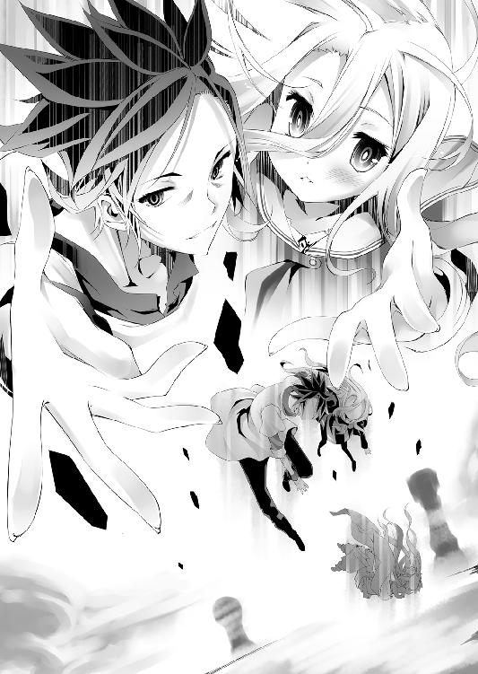
「この手を取るなら、孤独だった『誇戯』の神髄──」
「......『帆楼』......って......しろ達、は......答える、の」
空白と同じ──〝うつろ〟の名を分け与えて呼んだ二人は。
〝問い〟に、〝答い〟で返す。
──問。自分はなにものか？
「俺らとまた遊ぶなら、期待の神級美少女ルーキーゲーマー帆楼と！」
「......明日、また問うなら......また違う、ゲーマー帆楼って、答える」
──答。なにものだと望む？
逡巡する少女は──数秒の逡巡を経て。
怯えるように、そして神の身でありながらまるで祈るように──そろり、と。
揺らめき消えゆく仄ないその手を、伸ばした少女は──いや。
神霊種は──いや......
「────帆楼、は............」
......帆楼は、そう......言って──
────............
■■■
──そして巫女は、彼女......いや、『帆楼』と。
そう自称た少女が、虚空に拙く構築した岩場に降り立った。
陽炎めいていたその姿は、だが今は確固たる実体を伴い、その視線は、
「......し、白......どうだろ。兄ちゃん、まだ生きてるらしいと判断するが」
「......い、異論......なし......ひっ、......くっ......」
岩場に突っ伏し、抱き合って生存確認に涙する、空と白に向けられていた。
そして帆楼が無言で二人に歩み寄る中、彼女が構築した岩場はポロポロと崩れながら、徐々にゆったりと高度を下げていく。
己を帆楼と呼んで──〝選んだ〟ことで、その自己否定は止まっても。
それでも──『神髄』が概念、想念が集った力だと知る巫女は──、
「......帆楼は──幾度【仮定】を為そうと......其れでも尚疑うじゃろう」
顔を伏せ怯えるような──今まで以上に儚い様子の、理由を知る。
仮不活化直前で留まった帆楼の神格は──いまや最底辺未満まで堕ちただろう。
天に渦巻く地を創る力どころか、こんな岩場一つを維持する力さえ、今はない。
まして──
「......汝らさえ......その言葉さえ、矢張り疑うじゃろう......」
──そう、空の言うように全てが一周しようと、たとえ反転しようと。
それは──ただ同質、同義、兼ねるというだけだ。
疑うには信じなければならず、強さは弱さを内包し、賢さは愚かさと共存する。
帆楼の神髄を『狐疑』と呼ぼうが、『請希』と呼ぼうが、その性質は同じ──
それが請い、希み、選んだ仮定──『誇戯』であるならば、今紡ぐこの言葉さえ。
神霊種としては、最弱。
何も断定出来ず、仮定を連ねるが限界ならば、と──俯く帆楼の、
「其れでも尚──帆楼の手を取ったことに、意味は在るか、の────ッ!?」
「っしゃぁぁあ！ ようやく撮れたぜローアンゴゥショーーッ！」
......シリアスな問いは、だがやはり。
シリアスやると死ぬ病が疑われる空によって、遮られた。
信じがたい速さで起き上がり、帆楼の右下から撮った一枚に、
「っかぁ～けしからんカッコしよってからに！ その腰のスリットの奥にどんな楽園があんの四二日間気になって眠れやしなかったが嗚呼、ようやく、眠れ、る......」
──ゲーム開始から今日まで、ずっと狙った何かが映ったのか。
空は鼻をおさえ、至福の笑みで──そのまま永眠するように目を閉じた。
「......にぃ......それ......十八禁、どころか、発禁──」
「ふ、らしくないな妹よ！ ン万、ン億歳女子の写真をどんな法が取り締まる!?」
「......わいせつ目的の、盗撮......軽犯罪法、条例、違反......肖像権、侵害......」
「ふははは、甘い、甘すぎるぞ妹よ！」
先程までの瀕死の体は何処へやら、大仰に空は叫ぶ。
「それらは全て〝人〟──最低限、ヒト種に適応される法だ！ よって──ッ!?」
「......っ！ かみさま、相手なら......なにして、も......いい......っ？」
──イグザクトリー、と。
叫んだ空に、白が加わって帆楼に飛びかかり、そして──
............。
「............汝。汝ら......人類種......ヒト......のお!?」
空に頭をなで回され、白に頬ずりされる帆楼は──、
「............俗称・空、俗称・白」
「おう。なんだ！ あと俗称は余計だ！」
ようやく、名前で呼ぶまで反応しないという意図を汲んだ声に、
「帆楼な。一応な。神霊種じゃぞ。思い出せたかの......問いに答え──」
どんな反応をすればいいのかわからない──つもりでいるのだろう。
だが顔を真っ赤にして──照れてそう言う帆楼に、一転、
「──あんな不安な顔すんなよ。意味のあるなしじゃねぇって」
「......帆楼......が、自分を......帆楼、って......呼ぶなら......大丈夫」
ホロウ。空っぽ──いくらでも注ぎ込めること──
「〝俺らの誇り〟を分けてやったんだ。そんな心配より──」
「......名に恥じる、こと......した時、を......心配、するの......」
そう、子供みたいな笑顔で告げた二人に。
ようやく──〝挑発〟されている、と理解──あるいは仮定したのか、
「──十六種族位階序列十六位──最下位の種よ」
きっと帆楼自身、その自覚はないだろうが悔しげな顔で、二人を振りほどき、
「推定から類推されるに過ぎぬ、明日には否定されうる仮定じゃが──」
そう言い据えて、だがあえて──帆楼は宣言する。
全てが一周するという、空の主張を仮定とするならば、と。
ニヤニヤと自分を見る二人が気に入らぬだけと巫女には見えたが、
「【仮定】最上位種──超越も一周し、〝次〟は帆楼が最下位種に勝つのじゃ」
そう告げた帆楼に、だが空と白は、満足げに笑った。
「......かかってくる、の......受けて、たーつっ」
「ま、頑張れ。質問もゲームもいくらでもこたえてやるからさ♪」
それでいい、と。自分達の名を分けたものらしい顔に。
空と白は、颯爽と踵を返し──
──だが。
がしっ......と、空は帆楼に袖を捕まれた。
「汝、其の言葉に偽りなきか？ 然らば──」
向けられた帆楼の眩い眼に嫌な予感がすると同時──ぶわっ、と。
──天を覆い尽くす、膨大な巻物が広げられた。
幾万幾億の年月を連ね続けた『疑問』が認められたそれを──
「汝、全部、答えるのじゃ」
そう──期待に染まった眼差しで突きつけられ、空は......、
「い......一個ずつ、にさせてくれ......」
■■■
そして──はや数十分。
高度を落としていた岩場が静止したことに、巫女だけが気づく中──
「──だーか～らーさ！ 帆楼は帆楼！ それで何の問題があんだよ！」
「問題有るのじゃ。然るに『帆楼なる我の定義』を、問うておろうに」
「おまえ、自分で自分を帆楼って呼んでるじゃねぇかッ!?」
「否。汝らが帆楼と呼ぶものを帆楼と仮定したのみじゃ。『我』の範囲定義が──」
「俺が！ 眼を見て！ 触って！ 会話してッ！ すんばらしい写真まで撮らしてくれてマジあざっした──ッ!! と、思ってるヤツつまりおまえ！ 帆楼！ 異論あるか!?」
「ある。汝が見る『眼』も、触れた『身体』も、また──」
殊更重要である、と告げるように、一拍置いて帆楼は真剣に、
「汝が映写し、礼まで述べたる幼姿の下腹陰部も──全て定義外なのじゃ」
「──なあ、なんか俺すっげークソ野郎な犯罪者に思えてきたんだけど......」
............違うとでも言いたいのだろうか、と。
今更言い逃れも出来ようはずもない、見苦しいロリコンの問いに。
密かにそう思う巫女は遠目に──空と帆楼による、不毛な議論を眺めていた。
それもそのはず。帆楼の〝本体〟は──あの少女の姿ではないのだから。
「帆楼の『神髄』は、此方じゃ」
「............え。その......ずっと上に座ってた......墨壺？」
「──否。其れも正確ではない。墨壺に視えるは汝らが理解及ぶ神格が魅せる化像。そも神霊種に物的実体は無い。此の〝人型〟に至っては意志疎通用の虚像にすぎ──」
「わっはぁいめんどくせ～♥ ほおぁっタァッ!!」
「............汝？ 汝、汝。何故、帆楼は手刀を当てられたのじゃ」
「チョップされた！ 認めたな!? ならアレもコレも帆楼だ異論はないなッ!?」
────はっ、と。
何かに気づいた様子で、ブツブツ呟く帆楼から、今のうちに......と。
逃げるべく、そろりと離れる空を──巫女は漫然と眺め、苦笑していた。
──その昔、ある狐は......大きな間違いをした。
狐疑の神、全てを疑うべくして生まれ、永遠を問うという彼女は。
はじめてのともだちは......疑い続ける自分を支える根拠が欲しかった、と。
そう勘違いしていた──まったく、友達失格である。
彼女が欲しがったのは──ただ単に信じられる、信じてくれる何か──
──そう、その誰かが、巫女に歩み寄って、呟く。
「さて、これで俺らの勝ちだよなぁ～巫女さん？」
帆楼は自己否定を止め、自立した。見事巫女の罠をクリアした者に、
「かかっ！ ナメた口ききなや、オトナにはオトナん勝ち方があるんよ、童」
だが巫女は、そう笑って応じる。
そう自分は大人だ。大人になってしまった、と巫女は苦笑する。
世の中を複雑にしている退屈な連中、多くを諦めた連中──だが、
「......あてには出来んかったこと、あんたらなら出来る──」
そう──帆楼を自由にするという結果に。
命まで賭けた一世一代の大博打には──勝ったのだ。
「元よりあての負けに賭けた勝負......どう見ても、あての勝ちゃろ♪」
そう、負け惜しみを零してみる──が、
「......巫女さん、が......自分の負け、に......賭けたなら」
「それこそ巫女さんの負けだ──だから、俺らの勝ちつったろ」
「............？」
「助言を一つ──細けぇこと考えるより先に言うことがあるからな？」
そう、意味深に笑って、ひらひら手を振って空と白。
そろそろ地に着くだろう、岩場の端へ向かう二人を訝しげに見やる巫女に、
「依り代、依り代ッ！」
筆を奔らせていた帆楼が、唐突に叫んで、巫女に駆け寄る。
「帆楼はな──帆楼なのじゃ！ 異論はあるかの!?」
........................、
「その面は何ぞ!? 理解らぬのか!?」
哲学者の大発見に理解を示さぬ大衆に苛立つような帆楼に。
──だが、違うのだ。
「『我』を定義する観測者が帆楼を帆楼と認識し呼称する限り、帆楼は帆楼なる存在と暫定証明され得る、即ち帆楼は帆楼と自称することが出来る──と云うておるのじゃ！」
巫女が呆然としていたのは──
駆け寄ってきた帆楼が──迷わず自分の手を握ったことに、だった。
──自分は許して貰えたのか。
自分の意志で握る手があての手でええんか。
結局、なにも出来なかったあてに、その資格は──と思考して。
──『細けぇこと考えるより、先に言うことがあるから』──
「......騙して、堪忍な......あては、許して貰えるんかな......」
「許すことは出来ぬ」
小首を傾げての即答に、巫女は一瞬眼を伏せるが──
「許すとはなんなりや、帆楼はまだ仮定出来ておらぬ故」
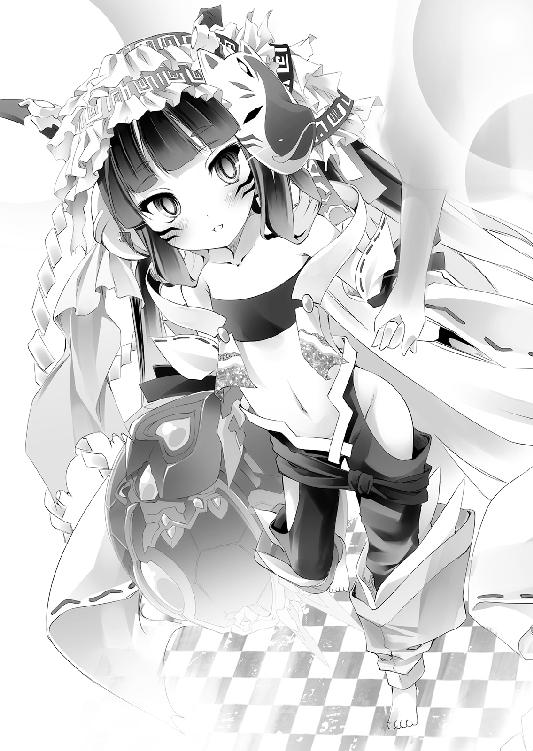
────。
「然し帆楼を騙したことで、依り代の云う通り──結末も、結論も、帆楼ごと変じた」
と、何かを確認するように思考を巡らせ、帆楼は数回頷いて、
「──そしてそれは、殊更不快ではない変化のようじゃ」
そう、本人さえ自覚ないだろう、笑みを浮かべ──
──ゴウン、と......僅かな揺れ。
岩場が降りきったそこは──巫社、庭園。
出迎えたのは、ステフと、ジブリールと......いづなの笑顔。
そして帆楼、巫女、空と白──それぞれの顔を順繰りに見やって、
「〝ただいま〟──でしたわね」
──その誰よりも眩しい笑顔で言ったステフに。
空と白は、サムズアップで応じて、
「おうステフ......んで早速悲報でわりぃが......」
「......ステフ......ぐっ、ばい......なの............」
疲労、緊張、空腹、その他諸々に──そのまま意識を失った。
アイディアルエンド
──カッポーン、と。
巫社大浴場の桶の声、原点回帰の響きあり。
そこでは現在、夢のような、桃源郷が広がっている──はずである。
直視するは叶わぬ楽園、されど『かがくのちから』を信じて──
「汝っ！ 汝、汝汝っ！ のぉ、自称・空!!」
「ヒトをパチモンみたく呼ぶな！ 自他共公認の空さんだよ──ってぇ!!」
衝立の向こうでカメラを構え、心の眼で楽園を想い描いていた空。
その眼前に楽園が──当たり前のように──空間を超えて飛び込んで来た。
下限まで力を失ってもなお、ジブリール以上のデタラメらしいそれは、だが──
「帆楼ッ!? 乙女がフルオープンとか、慎みを覚えたまえよキミィッ!?」
一応、咄嗟に眼を逸らして、空は叫ぶ。
「......汝、支離滅裂ぞ。先刻帆楼の下腹陰部を映写しておったじゃろう」
いかにも──その通り。
推定ン億歳。まして人でさえなく、しかもその姿さえ本体でなく虚像だ。
この世界にいそうでいなかった、完全無欠なまでに合法のロリである──が！
「ッカー！ これだからカミサマは！ 恥じらいなきエロスはエロスに非ずってわっかん──いや待て。幼女ならそれで正しいのでは？ ......ん～ぇ～でも俺そこまでは──」
ぶつぶつと、極めて重大な世界的案件を思案する空は、
「汝の葛藤、後ほど聴く！ 其れより重大な問いじゃ──答えよ！」
だがマッパで迫る神気に、強制的に遮られた。
「汝、自称・空。帆楼を帆楼と定義したの？」
「......その話まだひっぱんの～？ あと自称じゃねぇっつの」
「......？ 然し『空』なる個体を定義する構成要素は変動的じゃろう。然るに帆楼が認識した次元点における『空』と、現次元点の汝『推定・空』は別個体となり、汝は『自称・空』になるのじゃ！ 然らば帆楼を帆楼と定義した単元知性『空』は、多元知性たる帆楼の如何なる次元点を以て『帆楼』と定義し──」
「っきゃおまえ想像以上にメンドくっせぇねッ!?」
「やはり汝、『自称・空』じゃの？ 『空』は帆楼の問いに答えると言ったっ」
意味不明な言葉を──しかもフルオープンで迫るロリ神に羅列され、たまらず空は叫ぶ。
だがその叫びに、帆楼は僅かに不安に揺れる眼で距離を置いて響かせ──
「............ていうか、あんたらのその元気、どっから湧いてくんのよ......」
そして呆れた声が──夢のような桃源郷から響かせた......。
──まさしく、それは夢にさえ、誰も見なかっただろう光景だった。
湯気立ちこめる湯船に浸かるは──自信喪失のフィールに、もたれかかるクラミー。
吸血を止めれば今にも蒸発するプラムは、女性に偽装しライラにかぶり付いて動けず。
疲れきって抵抗出来ないのを良いことに、巫女といづなを遠慮なくモフって洗う白。
現実逃避気味に湯船に浸かるステフと、そして疲れとは無縁のメンツ──
『天翼種のコマ』を貸した対価にご機嫌なアズリールに、不機嫌に洗われるジブリール。
......そして──忙しなく転移を繰り返す、帆楼。
──人類種、森精種、獣人種、吸血種、海棲種、天翼種──神霊種まで。
憎み合い殺し合い、星をさえ砕いた十六種族の──その七種までが、そこにいた。
夢に見たものはおろか、ただ想像したものすらもほぼ皆無であろう、光景。
そして──その数少ない想像出来た二人のうちの、一人。
美少女だらけのカメラを想えば、無限に元気が湧きあがる空が叫ぶ。
「さ～てッ!!」
無事カメラが動いてるのを確認して、空はグラスを掲げる。
「んじゃー！ エルヴン・ガルド領を手に入れた今後のエルキア連邦と！」
「......なに、より......帆楼、の......幸先を......祝して......」
その超規模のゲームを制した二人が、ジュースで満たしたグラスで、告げる。
「「カンパイ」」
──乾杯、と。
ジブリール、アズリール、帆楼、巫女、ライラ──そしてステフは続くが。
『......カンパ～イ』
──完敗、と。
ああ......まさしく完敗である、と──
それ以外の者は、心の中で呟くに留めた。
【注】初瀬いの氏は、集中治療室で本日欠席。ご了承下さい。
■■■
「のぉ、汝。推定・空」
ついたてを貫通して、にゅっと顔だけ出し、名を呼ばれた空は、めっ、と。
「帆楼。名前はちゃんと呼ぶもんだ。失礼にあたるぞ」
「......帆楼、神霊種じゃぞ......然は【仮定】──〝空〟」
子供を躾けるマジレスに、僅かに頬を膨らませ帆楼は、定義。
自称・空を、暫定的に〝確定・空〟と据え置くことにして──問う。
「〝帆楼の自立〟──其れが依り代の目的であったと把握した、つもりじゃ......」
その程度のことも分からなかったことに、責任を感じるのか。
帆楼にも自覚ないだろう、しょぼくれた声で語って、だが──と。
「然し、汝らは。何を目的とし、帆楼と彼のゲームを行ったのじゃ......？」
続いて不安げな声で、帆楼が問うたのは──〝空達の意図〟。
──そう。根本的な疑問。
あれ程のゲームを行ってまで求めた、その〝目的〟だった。
──『種のコマ』を賭けたゲーム。
それ自体が既に、空と白が東部連合に行ったのが、唯一の前例だ。
──まして〝五つ〟も賭けたゲーム。
まして複数の全権代理者が、各『種のコマ』を賭けて神霊種と対戦。
人類種、獣人種、吸血種、海棲種、天翼種──一歩間違えれば五つの種族が滅びた。
そんな、前例などあろうはずもない空前のゲームを勝ち抜いてまで。
果たして空達が、彼らが、各種族が得たものは──
孤独な神霊種──非力な少女一人の救済。
──たったそれだけだ。
帆楼にそれ程の価値──否。僅かばかりの価値の有無さえまだ判定出来ないのに。
そんな自分のために、あそこまでした、その意図を不安に揺れて探る声に、
「え、一緒に楽しいことするためだろ。期待の美少女ルーキーゲーマー？」
「......ん。ゲーム、したり......ゲーム、とか......あとゲーム、したり......とか？」
空と白の即答に、帆楼は怪訝と──いや、唖然とする。
確かに空達はそう言って手を差し伸べたが......まさか本当にそんなことのために？
そう絶句し、困惑する帆楼に、だが。
続いた言葉が──トドメを刺す。
「ま、当分アイドル活動ってゲームがメインになるだろうけどな」
────。
「......帆楼には未知の意の含む単語かの......空。汝、今なんと申した？」
神の数秒の熟考。人には数年に届く長考の果て、問うた帆楼に、
「だから〝アイドル活動〟だよ。神＝偶像だろ!? 信仰稼ぎさ♪」
だが答えた空の言葉は、合流した白の声と共に意味不明に続く。
「覚悟しろよ～帆楼、忙しくなるぜ!? 衣装デザインも候補は出来てる！」
「......ハコ、も......おさえて、ある......楽曲提供、も......目星はっ」
「グッズ製作や、タイアップ企業も見繕いはじめてるから、安心しろ♪」
──そうまくし立てる空と白に。
言語を要さぬ意思疎通、多元時空に跨がる神霊種をして、
「......何故じゃ！ 帆楼、多元知性体じゃぞ！ 何故一つも意味が汲めぬ......っ！」
ついにそう帆楼に涙目で訴えさせた空と白に代わり、
「マスター達の深謀遠慮、神（笑）が理解及ばぬも無理ございませんで♪」
にゅるり──と。
アズリールを振り切ったのか、同じく衝立を貫通し顔を覗かせたジブリールが言う。
......誰も従う気がなさげな物理法則に、内心密かに同情する空を余所に、
「神でもわかるように、不肖ジブリール、ご説明致しましょう♥」
そう、ジブリールは笑顔で切り出す。
「まず、マスター達はあのクソガ──失敬♥ 唯一神を降すわけでございますが」
......気でいる。つもり。と言わず、ただの確定事項と語るジブリールに。
半眼を向ける帆楼だが──それ自体に、驚きはしなかった。
巫女の中にいる間にも聞いた話だったし、何より──
「......承知はしておる。其の正気を疑っておる最中じゃが」
──半ば以上自棄だったといえ、帆楼もそうするつもりでいたことである。
だがそう思考する帆楼を嘲笑うように、
「では勿論、それには──『種のコマ』を奪ってはならないとも、御存知で♥」
「────────ぇう？」
──御存知ていなかった帆楼は、奇妙な声を零して固まった。
というか御存知ていれば、『種のコマ』を賭けるよう要求していなかったろう。
当然承知で、ジブリールは〝神を見下せる愉しさ〟に、ニコニコ続ける。
「『種のコマ』を奪わず。十六種族を共通の意志で束ね、それぞれ『種のコマ』を手に、自らの意志でテトに挑まねばならないというのが、マスターの見解でございます♪」
「............」
何故、と問う顔の帆楼に、空は答え、
「──『種のコマ』奪って、〝いいから黙って俺に従え〟ってか？」
そして──苦笑する。
「......そう支配して命じるなら、それこそ『定石』の範疇だろ......」
────。
支配、隷属して蹂躙するならば──『大戦』と何も変わらない、と。
世界は変わったと主張し、証明した者の言葉に、帆楼は沈黙し──
「しかし奪わないとはいえ、『神霊種のコマ』を有す、全権代理者は必須でして」
続いたジブリールに......ふむ、と。
帆楼は自分を棚にあげているとは承知で、半眼でその仮定を述べた。
「──【仮定】神霊種が全権代理など立てぬじゃろう」
そも全権代理者とは、集団における争いに立てる〝代表者〟だ。
群れもせず、集団を作らない神霊種にはそもそも立てる必要もない──
「え、なんで立てる立てないって話になんの？」
だがそう思考する帆楼に、空はきょとんと、首を傾げ──言う。
「帆楼が、神霊種の全権代理者だぞ？」
────。
────────。
「そ、空......帆楼は、愚かじゃ。仮定する。し、然し斯くもアホの子かのう......っ？」
全く話について行けない帆楼は、ついに己の知能を疑い出したのか。
衝立から覗かせる頭を、すーと床へ落として文字通り沈んで行く様子に、
「これまでの、そして今後のエルキア連邦の勝因は全て──帆楼！ 全ておまえだ！」
「────矢張、アホの子なのじゃな......帆楼は......」
そう叫んだ空に、床に到達し更には床下へ沈んで行く様子に、構わず空は続ける。
「誰も信じねぇだろ？ それでいいのさ！」
そしてやおらついたての向こうを指した空に従って、帆楼は視線を動かす。
大浴場──浴槽に浸かる、多種多様な種族──その各要人達。
「こんな多種族連邦、そこに神霊種まで加わったとなったら──？」
ニヤついた顔でそう言う空に、さすがの帆楼も──察する。
全世界、あらゆる国が、種族さえ問わず──疑心暗鬼の渦に呑まれる──
「そこへ更に不肖わたくし空！ アイ○ス、ラ○ライブ、ナ○シス、ア○カツ諸々！」
「......同じく、しろ......アイドル育成ゲーム多数、世界スコア王者......『 』が......っ」
「ぁ堂々とプロデュースし！ ド派手に！ 帆楼を文字通り『アイドル』としてデビューさせ！ 歌わせ踊らせ握手会させ──利益もガッポリ稼い──だりするわけよッ!!」
すると──そう、と。
空は、とびっきり楽しげな笑みで、帆楼の瞳を覗き込み、言う。
「......『狐疑』の神にして、『請希』の神......『誇戯』の神」
概念の強さが、その力を決定付ける神霊種──『神髄』ならば。
「疑いも、願いも、拒むも、望むも......全てが──帆楼。おまえの糧になる」
「────っ！」
「そう──ッ!! 〝アイドルに対するありとあらゆる感情〟が、おまえの力となる！」
「......こ、後半理解出来なんだが──よもや、汝......」
──そして、ついに理解が及んだ帆楼は、だがその思考を疑う。
確かに神霊種──帆楼を、依り代や人類種などが共闘して降した。
全ては在り得、全ては無き得る......だが、それは、あまりにも──と。
そう眼を剥いて思考する帆楼に、だがその思考を肯定するように、空は続ける。
「帆楼は──〝勝手に〟神霊種の全権代理を名乗るだけでいいのさ」
そう語る笑顔は、何処までも愉快に満ちて。
「そーすりゃ、文句のある神霊種は──〝挑みにかかってくるしかない〟」
だが──奈落よりなお深く、底知れないものに充ちて。
「たったそれだけで、支配者気取りの無能共は全員──〝盤上に堕ちる〟」
──そして、そう言った空は、帆楼にもう一度、手を差し出す。
「......サイッコーに楽しそうじゃね？ 気に入ってくれるなら、一緒に遊ぼうぜ」
──目を剥いて、帆楼が再度取ったその手に、だが思う。
この男は──自分が何をやってのけたのか、本当に理解しているだろうか、と。
確かに壮大なゲーム。五つもの『種のコマ』が賭けられた空前のゲームだった。
だが帆楼の自立以外、何一つ手に入らないゲームで、この男は──いや。
その妹も共謀しただろう──空と、白。この二人は。
──たった、一手。
──たった、一つのゲーム。
──たった、帆楼一人に勝った。
たった──それだけで。
──全ての神霊種に、『チェックメイト』をかけた、と。
■■■
──だがその事実に驚くのは、帆楼だけだった。
元より参加者全員──多かれ少なかれそれを知って乗ったゲームだ。
故にこそ──思惑は外れたといえ、プラムは『吸血種のコマ』を賭け。
アズリールさえも──『天翼種のコマ』を、ジブリールに託したのだから。
──偉そうにふんぞり返る神霊種共を、根こそぎ引きずり降ろす。
この場に集まるような連中なら──〝滅亡〟を賭けるに足りて余る動機だろう。
「......ねぇ～クラミー？ 言った通りになったのですよ～」
そうして、虚ろげな眼差しに、僅かに光を戻したフィールは言う。
「今日、この日、世界は──ひっそりと。ひっくり返ったのですよぉ～」
そう、エルヴン・ガルドを発つ前に想い描いた通りになった様子に。
だがクラミーが引き継いで、衝立の向こうへ問いかける。
「ええ、ただしエルヴン・ガルドを削り、神霊種まで──もう後戻り出来ないわ」
そう──世界は確かに、疑心暗鬼の坩堝に呑み込まれるだろう。
安易にエルキアに宣戦布告する者は少ないだろうが──ゼロではない。
たとえばエルヴン・ガルドが黙っているはずもない、まして──
「......今すぐ、それこそ〝文句のある神霊種〟がカチコミかけて来ても不思議はないわ。凌ぎきれるんでしょうね？ 私たちを迎撃したからにはＮＯと言わせないけど」
そう鋭く問うクラミーに、だがきょとんとした兄妹の声が答える。
「......凌ぐ、って？ ......〝好都合〟......攻めてくる、なら......攻めるより、楽......」
「ましてこっちは人類種に加え、獣人種、天翼種、吸血種、海棲種に神霊種──森精種までいる。このメンツに勝てる自信ある奴なら、こっちからお手合わせ願いたいね♪」
そう楽しげに、わくわくする様子で語る空に、フィールは眉根をよせ、
「......いま～、さら～っとわたしが含まれたのぉ、気のせいなのですか～？」
だが──意外そうな声が答えた。
「え、だってクラミーとフィール、もう帰るとこねぇじゃん」
────？
一瞬の沈黙は、だが空自身が続けて破った。
「エルヴン・ガルドには、正式な国書でおまえらの決別──っつーか裏切りを通達させといたぞ。あ、住居完備だから安心しろ。ステフの手腕に感謝しろよ～？ このこの～」
そして、ギギギ、と音を鳴らして視線を向けるクラミーとフィールに。
同じくギギギ、と首を鳴らし、視線を逸らしてステフが応える。
「......そ、その～......ソ、ソラの指示ですわよ？ お、おほほほ......」
水音たてて立ち上がり、猛然とクラミーは衝立──空へ向かいながら叫ぶ。
「──あ、ぁ......あんた──いったい何してくれてんのよぉッ!?」
「ぇ～だっておまえらが負けんの、わかりきってたし......気ぃ利かせただけじゃ～ん」
「ぶっ飛ばすわよ!? そうじゃなくて、エルヴン・ガルドの内部切り崩しが出来──」
「いやだって──それ、もう必要ないだろ？」
「「........................は？」」
凍り付いたクラミーとフィールに、空は上機嫌に通告した。
「おまえらの暗躍──尾ひれ背びれに思いつく限りのひれつけて告発したから♥」
「............」
──それが何を意味するかを理解して、クラミーは拳を震わせる。
いくらか嘘を混ぜ込んだとて、クラミー達が、州を一つ賭けるために行った工作。
記憶改竄まで伴うそれらが及ぶ範囲、そして領土を掠め取られたという事実。
それが招く疑心暗鬼は、おそらく──
「ほっといても遠くないうちに、エルヴン・ガルド────〝分裂〟するぜ？」
............。
「大国の内乱か～大変なことになるよな～」
「......つまり、美味しいことに、なる......」
そう、へらっと、淡々と、楽しげに語る空と白を他所に。
──ガッ、と拳を壁に打ちつけクラミーは歯噛みして思う──〝コレなのだ〟、と。
チマチマと、細かい工作を重ねれば重ねるほど、それだけ粗が生じていく。
──〝たった一撃で、全て台無しにして、有無を言わさず勝ち逃げする〟......
フィールと共に、延々探し続けた一手──腸煮えくり返るような一手を。
眼前でさらっとやってのけ、誇りさえしない空と白の様子に──殺意すら覚えて。
「......クラミー......堪えるのですよ～」
そう震えるクラミーを、だが窘めるのは──目が生き返ったフィール。
「〝次は〟～、兆倍にして返すのですよ～......ええ、あの蚊モドキにも、しっかりと♥」
そう、怒りに燃えたぎった笑顔に、クラミーもまた不気味に笑い出した──
■■■
喧々囂々、騒がしい浴場で、だがステフは湯に浸かって。
文句。不平。不満が飛び交う中──だが楽しそうな一同に、
「......楽しそうで、なによりですわ」
期待した通り、願った通りの光景か、ステフはそう小さく笑みを零した。
──が、次の瞬間、
「汝。汝、汝！ 不定名称個体よ！」
「のひょぉぉお!? って、今までで一番酷い呼び方された気がしますわッ!?」
脈絡なく眼前に、湯に浸かり出現した帆楼に今度は悲鳴をあげた。
だが帆楼は一切の悪意──いや、悪意とは何かも知らなげに首を傾げ、
「......？ 然れど汝、呼称が多すぎじゃ。なんと仮定すればよい」
「ステファニー・ドーラ！ 歴とした！ 由緒正しい名前が！ あるんですのよ！」
──と、帆楼は名前を呼ばなきゃ失礼、と空の言葉を思いだしたのか。
だが、何やら大真面目に考え込み、頷いて。帆楼は──呼んだ。
「然し汝をそう呼称する者は皆無。撚って最多重複より──【仮定】〝ステ〟」
「そこまで言いましたら、あと一音、頑張ってもらえませんのッ!?」
だが、名称を仮定出来たことに満足したのか、帆楼は無視し、〝本題〟を問う。
すなわち──
「ステ──〝楽しい〟、とは、なんなりや？」
「はは、はい？ ぇ、いえ、あの......い、今楽しい、んじゃ......ないんですの？」
──楽しいことをしよう。楽しそうじゃないか。
そう空や白に言われた帆楼は、だがそれを正確には定義出来ていない、と。
大真面目に、無垢な瞳で見つめられて、ステフは──
「え、えーと。う、嬉しいか、嬉しくないか、ってことじゃないですの？」
そう答えるが、帆楼は首を傾げる。
「......快・不快ならば、然り。帆楼は現在、不快ではないようじゃ。併し──」
「......この先もそうかは不明。だから総合的に仮定出来ない、とかか？」
「──そ、空──汝！ 多元知性体の思考を解読るのか──ッ!?」
ステフに代わり、答えた空の声に、帆楼は戦慄するように声をあげた。
──神霊種にさえ、視えなかった未来にいるのが、不安なのだろう、と。
敏感に察したのだろう空に、巫女は思わず笑い声がこぼれそうになるのを堪えて。
帆楼と共に、その続きに、耳を傾ける。
「じゃ、この先どうなるかわからない。それを考えてみろ」
────。
「不快か？」
「............否。何故じゃ？」
心底不思議そうに、帆楼は空に問う──が、
「〝さぁな〟♪ なにがどうなるのか、この先もわからない、けど──」
そう問う帆楼の顔に、不安はなく──ただ、
「今と同じか、それ以上に〝楽しい〟ことになる気がするから、じゃね？」
────。
「依り代、依り代」
ふ、と再度空間を渡って、帆楼は一人杯を傾けていた巫女を呼ぶ。
声はなく、ただ視線で応える巫女に──
「【仮定】帆楼はな──どうやら現在」
「──〝楽しいようじゃ〟！」
笑顔でそう告げた帆楼に、巫女は──心底、感慨深げに目を閉じて。
何年ぶりかも思い出せない柔らかい笑みを。
自然に浮かべたことに、誰より巫女自身が驚いて──ただ一言、
「......ほおけ」
そう──友に応えた............。
■■■
──かくて、数日後。
「為て......何用じゃ『星杯』保持者──訂正」
世界の果て、巨大なチェス駒の頂で、帆楼は、
「......『テト』......と、名で呼ぶべき......なのかの」
唐突に──「チェスしよ☆」と言い出した者を睨んで、問う。
今の帆楼に、テトに語りかけるだけの力など、もはやありはしない。
ましてテト直々の強制召喚に抵抗する力も、と不機嫌そうな帆楼に、
「もちろん！ あ、その代わり、僕も君を帆楼って呼ぶね！ いいよね～？」
だが一方的に呼びつけた不貞不貞しい唯一神は......さら～り、と。
その無言の抗議を意に介してちゃ唯一神やっていけないとばかりに受け流す。
「......却下じゃ。汝は帆楼の──否。帆楼達の『敵』と仮定しておる故に」
一段と不機嫌さが増した帆楼が、コトッとコマを指して却下するが、
「......んー。そっか～〝帆楼ちゃん〟ってば、まだ『星杯』を手に入れたいのかい？」
その〝却下〟をガン無視し、馴れ馴れしく──テトはコマを指して、問う。
当然、テトには答えの分かっている問い。
故に帆楼は──
「......テト。汝......〝過去しか見ない〟──と抜かしておったか」
そう、未来視しない主義、という己の趣味の良さを誇ったテトが。
ただ──笑みだけを返すその様子に、帆楼は溜息一つ、告げる。
「──【仮定】確かに悪くない趣味と言えるのかもしれぬ」
「わかって貰えて嬉しいよ～。でもそれ、悪手だよ？ ハイ、チェック♪」
──また更に一段、不機嫌さを増した様子の帆楼に、テトは小さく笑う。
──そう、今の帆楼は、もう未来や答えを知りたいと思っていない。
そんなことは『星杯』なんてなくとも、帆楼の顔を見ればテトにはわかった。
なんせ、それでは──〝楽しく〟ないのだから。
狐疑して、請希して、それらを誇戯るその『神髄』が、今求めるものは。
そんなものではないと、帆楼はテトを見やる。
「但し、帆楼の吠え面が見たいとも......確か抜かしておったの」
「ん～......まあ、そだね。君のっていうか──」
そう苦笑してテトは濁す。なにせ〝今の帆楼〟の吠え面は、見たくはない。
どちらかと言えば、むしろ今は──と、思考するテトに、帆楼は告げる。
「──【仮定】汝の要求は叶わぬ」
そう──まさしく、
「......吠え面をかくはテト──汝故に」
テトがむしろ今、見たいと考えていた、その通りの──笑みを浮かべて。
チェックを返した帆楼に、テトは長考する様子で、だが楽しげに問う。
「──それは未来視かい？ それとも、ただの期待かな？」
もちろん期待だと、答えを知っている問いを。
期待することを認めた帆楼に、テトは目を細める──が。
笑顔のまま──帆楼に笑っている自覚はまだないまま、続いた言葉に、
「〝未来視じゃ〟。汝が視ぬ未来──帆楼はあえて視ることを仮定した」
──おや？ と。
予想外の答えに、帆楼の意図を探ってテトは再度、チェックを返す。
そして──テトが期待していた以上の──無自覚だろう満面の笑みで、
「──汝の吠え面へ至る〝未来〟を、創る彼の者らと共に、視ることを」
会心のチェック返しを指して語る帆楼に、テトは──
「......そ♪ うん──楽しみにしているよ......本当に」
そう本当に、心から楽しみにする様子で──ふ、と目を閉じ、
「じゃ早速アドバイス。帆楼ちゃん、も～少しだけ我慢を覚えよっか☆」
そして──〝接待試合をやめて〟真面目に一手、打ってみた。
「........................なにゅ？」
たった一手で形勢逆転した盤に、思わず妙な声を漏らし、長考に入る帆楼に。
だがテトの攻撃──ゲームの基本である精神攻撃は、止まらず続く。
「帆楼ちゃん、色々急ぎすぎ。ハッキリ言えば──〝チョロイン属性〟？ あは☆」
どういう意味かはわからずとも、馬鹿にされているとは分かるだろう。
テトが一言告げる都度、帆楼の口が引き攣るのが窺えた──たとえば、
「えっとね、まず。巫女さんに二回も騙されちゃってるでしょ～？」
──ひくっ、と。
「空白さん達にちょ～っと優しくされただけでコロっと行っちゃうし」
──ひくくっ、と。
「......それに」
と、次なる言葉を警戒した帆楼に、だが、
「......心が芽生えるのも、種の創造も──絶望も......急ぎすぎだよ」
今度は、テトの方が──顔を伏せた。
「もう少し待てば──心ある機械は、きっと君に答えられたのに」
そう呟くテトの言葉は、だが帆楼にはまだ意味がわからないのだろう。
ただ訝しむように、あるいは婉曲な中傷かと警戒する様子の帆楼に。
複雑な笑みを浮かべた顔を上げて、テトは言う。
「......何故生まれたか、君はずっと悩んでたみたいだけど」
神霊種──『神髄』は、概念が想い願い生じる──テトがそうだったように。
だが原初の神々......意識無き時代、何に願われたかは誰にもわからない。
だから人と同じように、自分で選べばいいと。空に言われた帆楼に、テトは。
「......何故生まれたかは、誰もわからない。もしかしたら『星杯』さえ、ね」
だけど──
「それでも君に、こう思うものもいるって覚えていてくれたら、ちょっぴり嬉しいな」
──この世界で、最初に──『心』を持った少女。
テトを願い、望み、信じて生んでくれた──あの子を生んだ彼女に。
それを、伝えるためだけに呼びつけた言葉を──伝える。
「......生まれて来てくれて、ありがとうね──ってさ♪」
何のことかは、きっと帆楼にはわからないだろう。
だが今の帆楼が、それを『心』からの言葉だとわからないわけもないだろう。
怪訝そうに、おそるおそるコマを指した帆楼に──だから、
「あ、そうそう。そしてもう一個、最後に、もちろん──っ！」
だから──テトはそれを誤魔化すように、ぱぁっと笑顔を晴らして言った。
「僕に勝てるなんて思い上がるのも、ちょ～っと急ぎすぎだね☆」
──拍子抜けさえ許さぬ程あっさりと。
まるで当然のように、チェックメイトされ呆気にとられる帆楼に、
「──ようこそ盤上の世界へ。ずっと君を待ってたよ」
テトはそう告げ──そして、バイバイと手を振った。
「六千年もの大遅刻、神霊種の一番乗りに免じて許したげるね☆」
強制召喚した時と同じく、強制帰還させられる帆楼に──最後に言い捨てる。
「あ、でも、今のままじゃ弱すぎるから腕を磨いてね。せめて空白さんに引き分けくらいは出来るようになっておかないと、僕の吠え面なんて未来はないよ～あっはは～♪」
■■■
「あれ、ここにいたのか帆楼。探したぞ」
「......いきなり、消えて......どうした、の？」
エルキア城内、突然いなくなった帆楼を探し回っていた空と白が声をかけた。
なにやら廊下で、俯いて立ち尽くしていた帆楼は二人に──問う。
「──汝ら。帆楼はいったい、どうしたのか、答えるのじゃ」
「............はぁ？」
「......不快じゃ。得も言われぬものがこみ上げ、虚像のはずの体が震える錯覚もある。この感覚を植え付けたものが破壊される空想に胸が空く──是はなんなりや」
そう医者に病状説明するような口調で淡々と問う帆楼に。
......なんなりや、と言われても、と。
医者でない空と白にも、帆楼の顔に書かれた答えが見えた。
「......怒ってんのか？ なにがあったんだよ」
「──おお......成程！ 【暫定】帆楼は怒っておるのじゃッ!!」
世紀の大発見を巻物に記す、その顔のまま帆楼は問いを重ねた。
「──為て。テトを消却すのは、いつ頃の予定じゃ？」
「ぇ」
「テトを討つのじゃろう？ 滅ぼすのじゃろう？ 明日か今夜かはては今か!?」
能面の笑みで騒ぐ帆楼を、慌ててなだめにかかる空と白を。
遠く彼方──世界の果てから眺めるものは笑う。
──かつて、『むかしむかし──』と。
定型文にはじまり、語られることなく〝終わった〟......そんな神話があった。
それは今は、まだ、『むかしむかし』ではない神話に継がれ、近い未来。
定型文にはじまり──今度こそ語られる神話へと続いてついに至る物語──
「さあ──あの日止まった神話を──続けよう」
そう笑って白紙の本に、神が筆を滑らせ綴るは──〝終わらなかった〟神話。
ようやく、この盤上の世界が......本当の意味で。
天地開闢以来の面白いゲームが──〝ここから、はじまった〟と。
──ついに、〝過去形〟で記せた神は、満全と腕を広げ天地遍くを仰ぐ。
旧き神話ごと引き連れ、その袂へと至り臨む全てを迎えるように──
「──今度は引き分けさせないし、負ける気もないよ。覚悟してね☆」
■■■
────。
『──観測体より報告──対神霊種戦・決着確認』
────────。
『──解析体より報告──交戦代償損失〝０〟。条件突破』
────────了解。
「全機体へ通達。偏差近似値内と推定される事象観測」
計測器を確認──終戦から五四三五五一四六時間、か。
「──残存全機凱種・連結解除にて再起動承認」
随分と待たされたものだが、果たして──
「それが我らが待った者や、否や」
──その意志の証明を以て確認すべく、機械は歩き出す。
ルーシア大陸北西──遠く、その連邦国家へと............
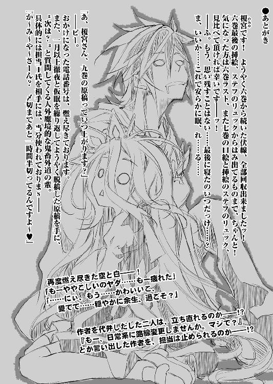
著者
榎宮祐（かみや・ゆう）
榎宮です。不可避の絶対運命、ご存知『フラグ』ですが、立てすぎで、〝一周〟し『逆フラグ』になるも周知の通り。前巻あとがきで『クリスマスまでには帰れる』と書いたフラグの力で、帰って来ました。なにごとも程々に、と言いますが人生やり過ぎて丁度いいくらいかと！
イラスト
榎宮祐（かみや・ゆう）
榎宮です。著者が『〆切伸ばし過ぎ』って、神も恋する笑顔で担当に詰め寄られてました。まったく度し難い男で。なにごとも程々にしておかないとね！（震え声）
カバー・口絵・本文イラスト／榎宮祐
装丁／柊椋(I.S.W DESIGNING)
ノーゲーム・ノーライフ 8
ゲーマーたちは布石を継いでいくそうです
榎宮祐
平成27年12月25日 発行
(C) Yuu Kamiya 2015
本電子書籍は下記にもとづいて制作しました
ＭＦ文庫Ｊ『ノーゲーム・ノーライフ 8 ゲーマーたちは布石を継いでいくそうです』
平成27年12月31日初版第一刷発行
発行者 三坂泰二
発 行 株式会社ＫＡＤＯＫＡＷＡ
〒102-8177 東京都千代田区富士見2-13-3
0570-002-001（カスタマーサポートセンター）
年末年始を除く平日10：00～18：00まで
http://www.kadokawa.co.jp/